<title>Workspace View Designs</title>
<meta name="claude:viewport-fit-sides" content="cover">
<style>
/* Layout: a sticky contents bar over one view at a time; screens carry the page, words keep to a reading column.
   Colours are the app's own Tokyo Night and Tokyo Night Day families, lifted for long reading. */
:root {
  --bg: #e9ecf5; --panel: #f7f8fc; --sunk: #dde2ef; --line: #c3cadf; --line-2: #a3adcb;
  --ink: #1c2650; --text: #2e3a66; --dim: #52608f; --accent: #2858c8; --accent-soft: #d7e1f9;
  --c-combined: #2858c8; --c-fable: #8a3fe0; --c-codex: #0f8069; --c-kimi: #b15c00; --c-memdoor: #6a7293;
  --scrim: rgba(15, 18, 34, .94); --on-scrim: #e6eaff; --shade: 0 1px 2px rgba(28, 38, 80, .12);
  --ui: ui-sans-serif, -apple-system, "Segoe UI", system-ui, sans-serif; --mono: ui-monospace, "SF Mono", Menlo, monospace;
}
@media (prefers-color-scheme: dark) { :root:not([data-theme="light"]) {
  --bg: #0f0f16; --panel: #1a1b26; --sunk: #14151e; --line: #2a2e42; --line-2: #454b69;
  --ink: #e6eaff; --text: #c0caf5; --dim: #97a1cf; --accent: #86aaf9; --accent-soft: #232a45;
  --c-combined: #86aaf9; --c-fable: #bb9af7; --c-codex: #73daca; --c-kimi: #ffb07a; --c-memdoor: #8a93bf;
  --shade: 0 1px 2px rgba(0, 0, 0, .5); color-scheme: dark } }
:root[data-theme="dark"] {
  --bg: #0f0f16; --panel: #1a1b26; --sunk: #14151e; --line: #2a2e42; --line-2: #454b69;
  --ink: #e6eaff; --text: #c0caf5; --dim: #97a1cf; --accent: #86aaf9; --accent-soft: #232a45;
  --c-combined: #86aaf9; --c-fable: #bb9af7; --c-codex: #73daca; --c-kimi: #ffb07a; --c-memdoor: #8a93bf;
  --shade: 0 1px 2px rgba(0, 0, 0, .5); color-scheme: dark }
* { box-sizing: border-box; }
[hidden] { display: none !important; }
body { margin: 0; background: var(--bg); color: var(--text); font: 15.5px/1.6 var(--ui); -webkit-text-size-adjust: 100%; }
body::before { content: ""; position: fixed; inset: 0 0 auto; height: env(safe-area-inset-top, 0px); z-index: 10; background: var(--panel); }
h1, h2, h3, h4, h5 { color: var(--ink); line-height: 1.25; text-wrap: balance; margin: 2rem 0 .6rem; }
h1 { font-size: clamp(1.7rem, 4vw, 2.3rem); margin-top: 0; letter-spacing: -.01em; } h2 { font-size: 1.5rem; } h3 { font-size: 1.2rem; } h4 { font-size: 1.02rem; } h5 { font-size: .95rem; }
a { color: var(--accent); text-underline-offset: 3px; } b, strong { color: var(--ink); }
:focus-visible { outline: 2px solid var(--accent); outline-offset: 2px; border-radius: 4px; }
.top { position: sticky; top: env(safe-area-inset-top, 0px); z-index: 5; background: var(--panel); border-bottom: 1px solid var(--line); }
.top .in, main { max-width: 1480px; margin: 0 auto; padding-left: max(16px, env(safe-area-inset-left, 0px)); padding-right: max(16px, env(safe-area-inset-right, 0px)); }
.top .in { display: flex; flex-wrap: wrap; align-items: center; gap: 4px 6px; padding-block: 7px; font-size: .87rem; }
.top a { color: var(--text); text-decoration: none; padding: 3px 9px; border-radius: 6px; white-space: nowrap; }
.top a:hover { background: var(--sunk); color: var(--ink); }
.top a.on { background: var(--accent-soft); color: var(--ink); font-weight: 600; }
.grp { display: inline-flex; flex-wrap: wrap; align-items: center; gap: 2px; padding: 0 4px; } .grp.end { margin-left: auto; gap: 4px; } .gl { color: var(--dim); font-size: .78rem; padding: 0 4px; }
i { display: inline-block; width: 9px; height: 9px; border-radius: 50%; background: var(--c, var(--dim)); margin-right: 7px; flex: none; font-style: normal; }
.prose i, .prose em { display: inline; width: auto; height: auto; background: none; margin: 0; font-style: italic; }
.d-combined { --c: var(--c-combined); } .d-fable { --c: var(--c-fable); } .d-codex { --c: var(--c-codex); } .d-kimi { --c: var(--c-kimi); } .d-memdoor { --c: var(--c-memdoor); }
main { padding-block: 26px 80px; }
.vh { max-width: 74ch; } .vh h2 { margin-top: 0; font-size: clamp(1.5rem, 3.4vw, 2rem); } .vh h2 small { color: var(--dim); font-weight: 400; font-size: .62em; } .lede { font-size: 1.06rem; color: var(--text); margin: 0 0 1rem; }
.verdict { margin: 0; padding: 10px 14px; background: var(--panel); border: 1px solid var(--line); border-radius: 8px; }
.view > p, .asks, .lines, .screen > p { max-width: 74ch; }
.chip { display: inline-block; font: inherit; font-size: .86rem; color: var(--text); background: var(--panel); border: 1px solid var(--line-2); border-radius: 7px; padding: 4px 11px; cursor: pointer; text-decoration: none; }
.chip:hover { color: var(--ink); border-color: var(--accent); } .chip.on { background: var(--accent-soft); border-color: var(--accent); color: var(--ink); font-weight: 600; }
.bar { display: flex; flex-wrap: wrap; gap: 6px; margin: 0 0 10px; }
.figs { display: grid; gap: 26px; grid-template-columns: minmax(0, 1fr); margin: 14px 0 20px; }
.figs.two { grid-template-columns: repeat(auto-fit, minmax(min(100%, 460px), 1fr)); align-items: start; }
.figs h4 { margin: 18px 0 -12px; }
.figs.lead { max-width: 1000px; }
.shot { margin: 0; min-width: 0; }
.zoom { display: block; width: 100%; padding: 0; border: 1px solid var(--line-2); border-radius: 8px; overflow: hidden; background: var(--sunk); cursor: zoom-in; box-shadow: var(--shade); }
.zoom img { display: block; width: 100%; height: auto; }
.zoom.txt { display: inline; width: auto; border: 0; background: none; box-shadow: none; color: var(--accent); font: inherit; text-decoration: underline; text-underline-offset: 3px; border-radius: 3px; overflow: visible; }
figcaption { display: flex; flex-wrap: wrap; align-items: center; gap: 3px 12px; margin-top: 7px; font-size: .87rem; color: var(--text); }
.who { display: inline-flex; align-items: center; color: var(--ink); font-weight: 600; }
.lab { color: var(--dim); font-size: .8rem; font-variant-numeric: tabular-nums; }
.sk { border: 1px dashed var(--line-2); border-radius: 8px; padding: 12px 14px; background: var(--panel); } .sk p { margin: 8px 0 0; max-width: 70ch; } .sk p:first-child { margin-top: 0; }
.scroll { overflow-x: auto; max-width: 100%; margin: 0 0 1rem; } .sk .scroll { margin: 0 0 8px; }
pre { margin: 0; padding: 12px 14px; background: var(--sunk); border-radius: 8px; font: 12.5px/1.45 var(--mono); color: var(--text); width: max-content; min-width: 100%; }
code { font-family: var(--mono); font-size: .88em; background: var(--sunk); padding: 1px 4px; border-radius: 4px; overflow-wrap: anywhere; } pre code { background: none; padding: 0; font-size: 1em; overflow-wrap: normal; }
table { border-collapse: collapse; font-size: .89rem; min-width: 100%; } th, td { text-align: left; vertical-align: top; padding: 7px 11px; border-bottom: 1px solid var(--line); min-width: 8.5rem; } th { color: var(--ink); background: var(--panel); border-bottom-color: var(--line-2); } td:first-child { color: var(--ink); }
.prose > p, .prose > ul, .prose > ol, .prose > h3, .prose > h4, .prose > h5 { max-width: 76ch; } .prose li { margin: .28rem 0; } .prose .shot { margin: 1.2rem 0; } .ref { color: var(--ink); }
.dec { list-style: none; counter-reset: n; margin: 10px 0 0; padding: 0; max-width: 980px; border-top: 1px solid var(--line); }
.dec li { counter-increment: n; position: relative; padding: 12px 0 12px 2.6rem; border-bottom: 1px solid var(--line); }
.dec li::before { content: counter(n); position: absolute; left: 0; top: 11px; width: 1.8rem; text-align: right; color: var(--accent); font-weight: 700; font-variant-numeric: tabular-nums; }
.q { color: var(--ink); font-weight: 600; } .by { display: flex; flex-wrap: wrap; gap: 0 18px; color: var(--dim); font-size: .86rem; } .pick b { margin-right: 6px; }
.asks li { margin: .35rem 0; } .lines { list-style: none; padding: 0; } .lines li { display: grid; grid-template-columns: 6.6rem minmax(0, 1fr); gap: 8px; padding: 7px 0; border-bottom: 1px solid var(--line); } .lines a { text-decoration: none; }
dialog { width: 100vw; height: 100dvh; max-width: none; max-height: none; margin: 0; padding: 0; border: 0; background: var(--scrim); color: var(--on-scrim); }
dialog[open] { display: flex; flex-direction: column; } dialog::backdrop { background: var(--scrim); }
.lbbar { display: flex; flex-wrap: wrap; gap: 8px 14px; align-items: center; justify-content: space-between; padding: calc(10px + env(safe-area-inset-top, 0px)) max(16px, env(safe-area-inset-right, 0px)) 10px max(16px, env(safe-area-inset-left, 0px)); font-size: .88rem; }
.lbb { display: inline-flex; flex-wrap: wrap; gap: 6px; }
.lbimg { flex: 1; min-height: 0; overflow: auto; display: grid; padding: 0 16px calc(16px + env(safe-area-inset-bottom, 0px)); }
.lbimg img { margin: auto; max-width: 100%; max-height: 100%; } .lbimg.full img { max-width: none; max-height: none; }
@media (max-width: 720px) { .grp.end { margin-left: 0; } .top { position: static; } .lines li { grid-template-columns: minmax(0, 1fr); gap: 0; } th, td { min-width: 10rem; } .dec li { padding-left: 2.1rem; } .dec li::before { width: 1.3rem; } }
</style>
<nav class="top" aria-label="Sections"><div class="in"><a href="#summary" data-nav="summary">Summary</a><a href="#screens" data-nav="screens">By screen</a><span class="grp"><span class="gl">By design</span><a class="d-combined" href="#design-combined" data-nav="design-combined"><i></i>Combined</a><a class="d-fable" href="#design-fable" data-nav="design-fable"><i></i>fable</a><a class="d-codex" href="#design-codex" data-nav="design-codex"><i></i>codex</a><a class="d-kimi" href="#design-kimi" data-nav="design-kimi"><i></i>kimi</a><a class="d-memdoor" href="#design-memdoor" data-nav="design-memdoor"><i></i>memdoor</a></span><a href="#comparison" data-nav="comparison">Comparison</a><a href="#critique" data-nav="critique">Critique</a><a href="#combined" data-nav="combined">Combined design</a><span class="grp end"><span class="gl">Images</span><button type="button" class="chip" id="th-dark" data-th="dark">Dark</button><button type="button" class="chip" id="th-light" data-th="light">Light</button></span></div></nav>
<main>
<section class="view" data-view="summary"><header class="vh hero"><h1>Workspace View Designs</h1><p class="lede">A workspace becomes a workbench with a place's grammar. The nav's card gains one row of documents and a list of chats, above its projects. A chat sits in the middle, where a place's agent sits. The documents sit on the dock side as five tabs, and take the whole room when no chat is open. One pane reads and edits memory, plans and ideas, and moves to its own window when you float it. Close folds the chat, and the fold is shown as a receipt and a diff with Undo. A place keeps its workspace one click away and can read its memory in the dock.</p></header>
 <div class="figs one lead"><figure class="shot d-combined" data-theme-of="dark" data-only=""><button type="button" class="zoom" data-src="combined/03-chat-and-memory.dark.png" data-cap="Combined · Chat in the middle, documents on the dock side · Tokyo Night (dark) · 1440 px window" aria-label="Open large: Combined · Chat in the middle, documents on the dock side · Tokyo Night (dark) · 1440 px window">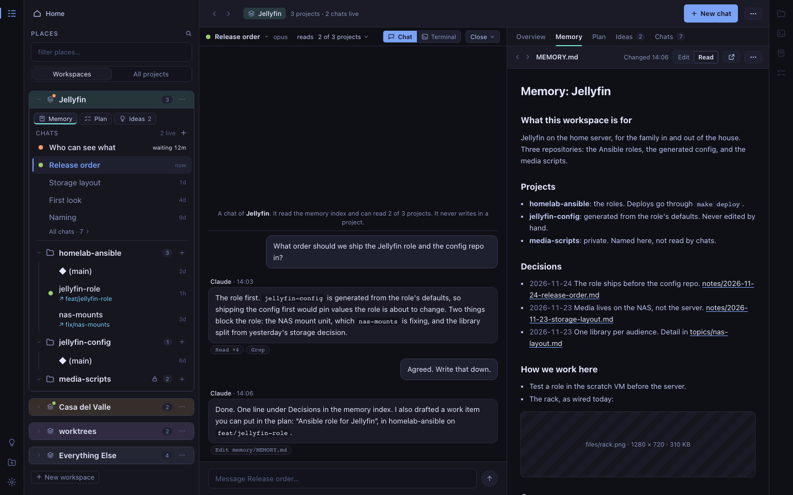</button><figcaption><span class="who"><i></i>Combined</span><span>Chat in the middle, documents on the dock side</span><span class="lab">Tokyo Night, dark</span><span class="lab">1440 px window</span></figcaption></figure><figure class="shot d-combined" data-theme-of="light" data-only=""><button type="button" class="zoom" data-src="combined/03-chat-and-memory.light.png" data-cap="Combined · Chat in the middle, documents on the dock side · Tokyo Night Day (light) · 1440 px window" aria-label="Open large: Combined · Chat in the middle, documents on the dock side · Tokyo Night Day (light) · 1440 px window">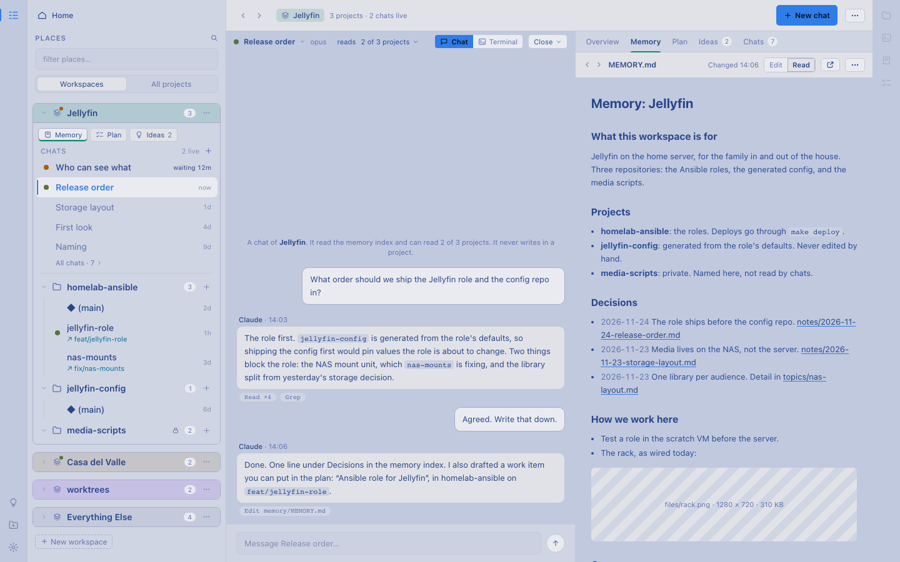</button><figcaption><span class="who"><i></i>Combined</span><span>Chat in the middle, documents on the dock side</span><span class="lab">Tokyo Night Day, light</span><span class="lab">1440 px window</span></figcaption></figure></div>
 <h2>What I need from you</h2><p>In order of weight. “As picked” is a full answer.</p><ol class="dec"><li><div class="q">Which side is the chat on?</div><div class="pick"><b>My pick</b> The middle, with documents on the dock side.</div><div class="by"><span>Backed by fable, codex, kimi</span><span>Against: your proposal, memdoor, and the Ideas window today</span></div></li><li><div class="q">“Visible when you click on the project”: what is clicked?</div><div class="pick"><b>My pick</b> You meant the workspace. A place in it gets the documents in its dock. A project's name keeps folding.</div><div class="by"><span>Backed by fable</span><span>Against: codex: a page for a project. kimi: a strip above the place</span></div></li><li><div class="q">What does a workspace show first?</div><div class="pick"><b>My pick</b> An Overview with the memory on it.</div><div class="by"><span>Backed by fable, kimi</span><span>Against: your proposal, memdoor: the Memory tab. codex: counts</span></div></li><li><div class="q">Float moves the document, or shows it twice?</div><div class="pick"><b>My pick</b> It moves, and main shows where it went. No lock.</div><div class="by"><span>Backed by fable, codex, kimi (with a lock)</span><span>Against: built today, memdoor: both copies</span></div></li><li><div class="q">What does the lightbulb open?</div><div class="pick"><b>My pick</b> The Ideas window, as today.</div><div class="by"><span>Backed by fable (at first)</span><span>Against: codex, kimi: a library in the main window</span></div></li><li><div class="q">How many closed chats in the nav?</div><div class="pick"><b>My pick</b> Three.</div><div class="by"><span>Backed by fable, memdoor</span><span>Against: kimi: up to two. codex: none</span></div></li><li><div class="q">Read or Edit when a document opens?</div><div class="pick"><b>My pick</b> Read for memory and plans, Edit for ideas.</div><div class="by"><span>Backed by fable, codex, kimi in part</span><span>Against: they open ideas in Read too</span></div></li><li><div class="q">When does an edit become a commit?</div><div class="pick"><b>My pick</b> Once per editing session.</div><div class="by"><span>Backed by fable</span><span>Against: your proposal: every save</span></div></li><li><div class="q">Can two chats fold at once?</div><div class="pick"><b>My pick</b> One at a time in a workspace.</div><div class="by"><span>Backed by codex</span><span>Against: your proposal: both, with mixed commits</span></div></li><li><div class="q">The words</div><div class="pick"><b>My pick</b> “History” for all three kinds. The window is “Documents” once it shows memory.</div><div class="by"><span>Backed by fable, kimi (History)</span><span>Against: “Versions” and “Ideas”, as today</span></div></li><li><div class="q">A dropped image</div><div class="pick"><b>My pick</b> Saved into files/, 4 MB at most.</div><div class="by"><span>Backed by fable, kimi</span><span>Against: needs one new engine row</span></div></li></ol>
 <h2>The four designs, in a line each</h2><ul class="lines"><li class="d-fable"><a href="#design-fable"><span class="who"><i></i>fable</span></a><span>The base of the combined design. Over-engineers the float, and tells the person something false when a fold fails.</span></li><li class="d-codex"><a href="#design-codex"><span class="who"><i></i>codex</span></a><span>The sharpest rules for the fold, and the weakest screens. Its overview is today's complaint, larger.</span></li><li class="d-kimi"><a href="#design-kimi"><span class="who"><i></i>kimi</span></a><span>The most honest about failure, and the best use of attention. Contradicts itself on Undo, and builds the biggest thing first.</span></li><li class="d-memdoor"><a href="#design-memdoor"><span class="who"><i></i>memdoor</span></a><span>Got the shape of the brief and not its facts. Nothing in it is needed.</span></li></ul>
 <p>The mockups are static HTML, drawn with the app's own colours and rendered in headless Chromium. They share no code with the app.</p></section>
<section class="view" data-view="screens" hidden><header class="vh"><h2>By screen</h2><p class="lede">Pick a screen. The combined design comes first, then each design's own version of it.</p></header>
 <div class="bar" role="group" aria-label="Screen"><a class="chip" href="#screen-nav" data-screen="nav">Nav</a><a class="chip" href="#screen-overview" data-screen="overview">Overview</a><a class="chip" href="#screen-chat" data-screen="chat">Chat beside memory</a><a class="chip" href="#screen-fold" data-screen="fold">Fold landed</a><a class="chip" href="#screen-editing" data-screen="editing">Editing</a><a class="chip" href="#screen-floated" data-screen="floated">Floated</a><a class="chip" href="#screen-place" data-screen="place">Place in a workspace</a><a class="chip" href="#screen-narrow" data-screen="narrow">Narrow</a></div>
 <div class="bar" role="group" aria-label="Layout"><button type="button" class="chip" id="lay-one" data-lay="one">One after another</button><button type="button" class="chip" id="lay-two" data-lay="two">Side by side</button></div>
 <div class="screen" data-screen-of="nav" hidden><h3>Nav</h3><p>Chats above the projects. The documents beside them, or not.</p><div class="figs"><figure class="shot d-combined" data-theme-of="dark" data-only=""><button type="button" class="zoom" data-src="combined/01-nav.dark.png" data-cap="Combined · Five states: chats, 30 chats, empty, All projects, the narrowest nav · Tokyo Night (dark) · board, navs at 318 and 220 px" aria-label="Open large: Combined · Five states: chats, 30 chats, empty, All projects, the narrowest nav · Tokyo Night (dark) · board, navs at 318 and 220 px">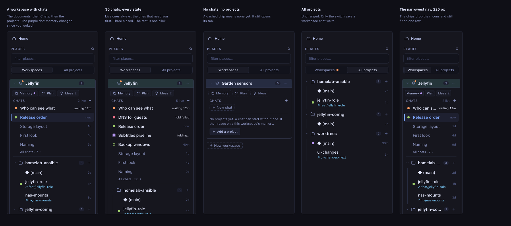</button><figcaption><span class="who"><i></i>Combined</span><span>Five states: chats, 30 chats, empty, All projects, the narrowest nav</span><span class="lab">Tokyo Night, dark</span><span class="lab">board, navs at 318 and 220 px</span></figcaption></figure><figure class="shot d-combined" data-theme-of="light" data-only=""><button type="button" class="zoom" data-src="combined/01-nav.light.png" data-cap="Combined · Five states: chats, 30 chats, empty, All projects, the narrowest nav · Tokyo Night Day (light) · board, navs at 318 and 220 px" aria-label="Open large: Combined · Five states: chats, 30 chats, empty, All projects, the narrowest nav · Tokyo Night Day (light) · board, navs at 318 and 220 px">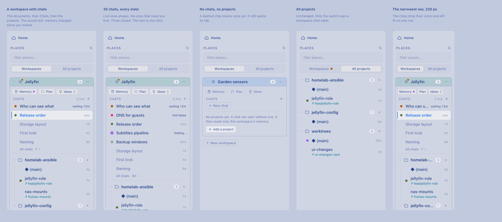</button><figcaption><span class="who"><i></i>Combined</span><span>Five states: chats, 30 chats, empty, All projects, the narrowest nav</span><span class="lab">Tokyo Night Day, light</span><span class="lab">board, navs at 318 and 220 px</span></figcaption></figure><figure class="shot d-fable" data-theme-of="dark" data-only=""><button type="button" class="zoom" data-src="fable/01-nav.dark.png" data-cap="fable · Four states · Tokyo Night (dark) · board, navs at 318 px" aria-label="Open large: fable · Four states · Tokyo Night (dark) · board, navs at 318 px">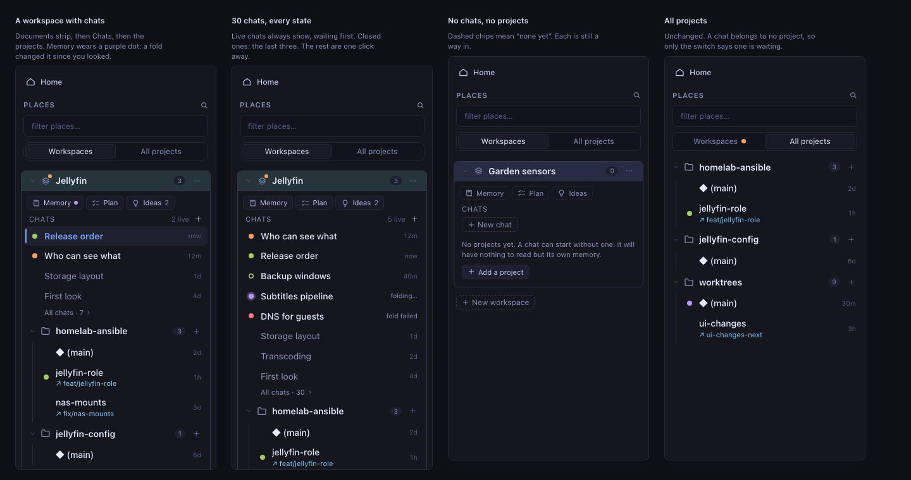</button><figcaption><span class="who"><i></i>fable</span><span>Four states</span><span class="lab">Tokyo Night, dark</span><span class="lab">board, navs at 318 px</span></figcaption></figure><figure class="shot d-fable" data-theme-of="light" data-only=""><button type="button" class="zoom" data-src="fable/01-nav.light.png" data-cap="fable · Four states · Tokyo Night Day (light) · board, navs at 318 px" aria-label="Open large: fable · Four states · Tokyo Night Day (light) · board, navs at 318 px">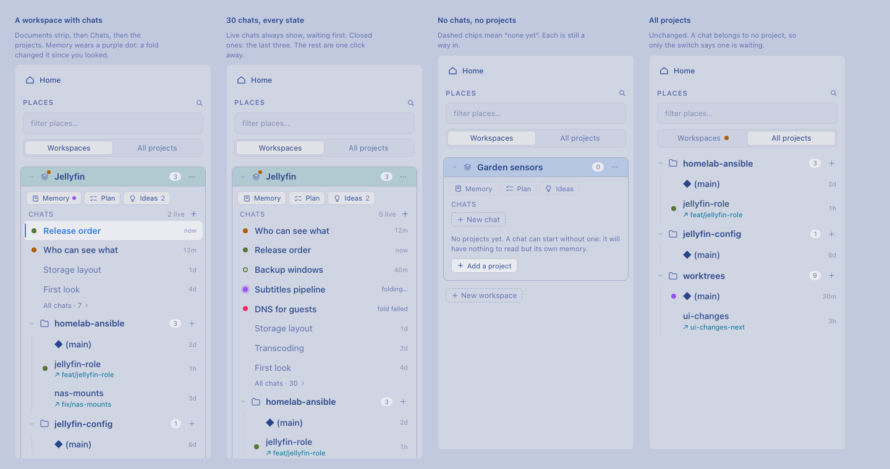</button><figcaption><span class="who"><i></i>fable</span><span>Four states</span><span class="lab">Tokyo Night Day, light</span><span class="lab">board, navs at 318 px</span></figcaption></figure><figure class="shot d-codex" data-theme-of="dark" data-only=""><button type="button" class="zoom" data-src="codex/nav-dark.png" data-cap="codex · The nav, with its Chats list in the main area · Tokyo Night (dark) · 1570 px window" aria-label="Open large: codex · The nav, with its Chats list in the main area · Tokyo Night (dark) · 1570 px window">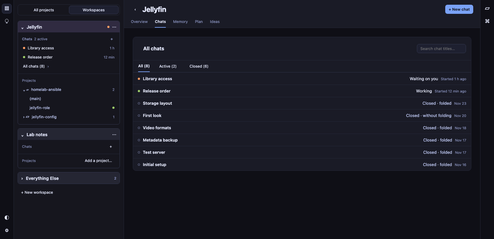</button><figcaption><span class="who"><i></i>codex</span><span>The nav, with its Chats list in the main area</span><span class="lab">Tokyo Night, dark</span><span class="lab">1570 px window</span></figcaption></figure><figure class="shot d-codex" data-theme-of="light" data-only=""><button type="button" class="zoom" data-src="codex/nav-light.png" data-cap="codex · The nav, with its Chats list in the main area · Catppuccin Latte (light) · 1570 px window" aria-label="Open large: codex · The nav, with its Chats list in the main area · Catppuccin Latte (light) · 1570 px window">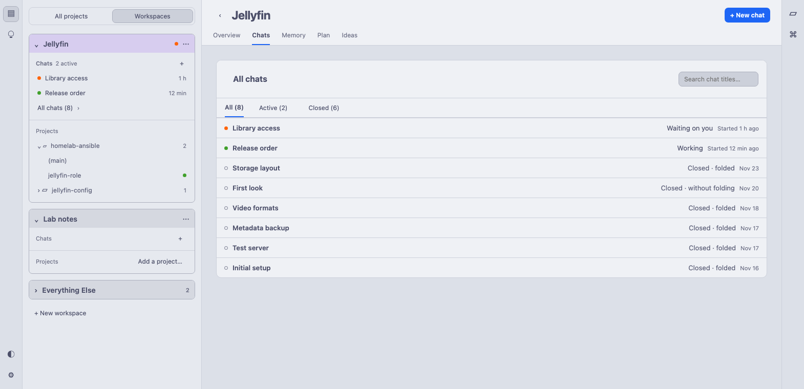</button><figcaption><span class="who"><i></i>codex</span><span>The nav, with its Chats list in the main area</span><span class="lab">Catppuccin Latte, light</span><span class="lab">1570 px window</span></figcaption></figure><figure class="shot d-kimi" data-theme-of="dark" data-only=""><button type="button" class="zoom" data-src="kimi/nav-chats-dark.png" data-cap="kimi · Three document rows, then chats, then projects · Tokyo Night (dark) · 1200 px window" aria-label="Open large: kimi · Three document rows, then chats, then projects · Tokyo Night (dark) · 1200 px window">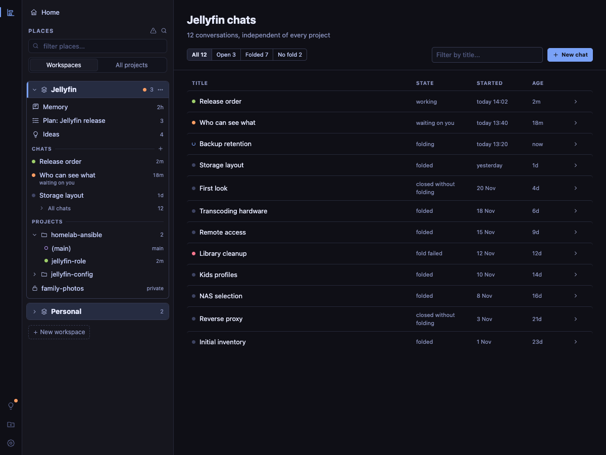</button><figcaption><span class="who"><i></i>kimi</span><span>Three document rows, then chats, then projects</span><span class="lab">Tokyo Night, dark</span><span class="lab">1200 px window</span></figcaption></figure><figure class="shot d-kimi" data-theme-of="light" data-only=""><button type="button" class="zoom" data-src="kimi/nav-chats-light.png" data-cap="kimi · Three document rows, then chats, then projects · Tokyo Night Day (light) · 1200 px window" aria-label="Open large: kimi · Three document rows, then chats, then projects · Tokyo Night Day (light) · 1200 px window">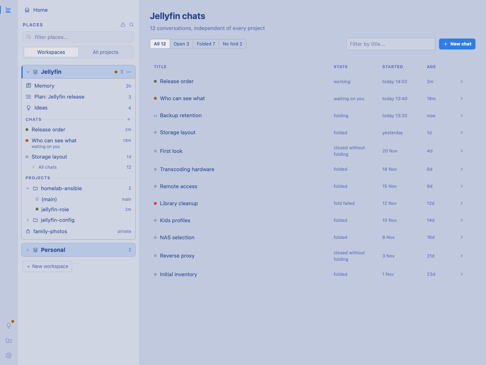</button><figcaption><span class="who"><i></i>kimi</span><span>Three document rows, then chats, then projects</span><span class="lab">Tokyo Night Day, light</span><span class="lab">1200 px window</span></figcaption></figure><figure class="shot sketch d-memdoor"><div class="sk"><div class="scroll"><pre> ▾ Casa del Valle                  ◐  1
     CHATS                             +
       ● Release order
       ◐ Who can see what
       ○ Storage layout          closed</pre></div><div class="scroll"><pre> ▾ Casa del Valle                  ◐  0
     CHATS                             +</pre></div><div class="scroll"><pre> ▾ Casa del Valle                  ◐  1
     ...
   Everything Else                 ◐  3
       my-project-a
       my-project-b</pre></div><p>A state dot, a title, and an age. Live chats, then three closed. No documents in the nav.</p></div><figcaption><span class="who"><i></i>memdoor</span><span>Its own text sketches</span><span class="lab">local-model experiment, no images</span></figcaption></figure></div></div><div class="screen" data-screen-of="overview" hidden><h3>Overview</h3><p>A workspace selected, no chat open. What fills the room.</p><div class="figs"><figure class="shot d-combined" data-theme-of="dark" data-only=""><button type="button" class="zoom" data-src="combined/02-overview.dark.png" data-cap="Combined · What needs you, the memory, then chats, work, ideas and projects · Tokyo Night (dark) · 1440 px window" aria-label="Open large: Combined · What needs you, the memory, then chats, work, ideas and projects · Tokyo Night (dark) · 1440 px window">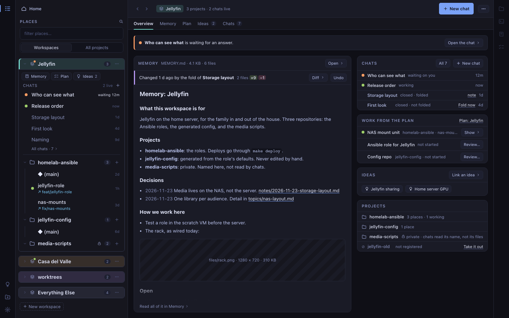</button><figcaption><span class="who"><i></i>Combined</span><span>What needs you, the memory, then chats, work, ideas and projects</span><span class="lab">Tokyo Night, dark</span><span class="lab">1440 px window</span></figcaption></figure><figure class="shot d-combined" data-theme-of="light" data-only=""><button type="button" class="zoom" data-src="combined/02-overview.light.png" data-cap="Combined · What needs you, the memory, then chats, work, ideas and projects · Tokyo Night Day (light) · 1440 px window" aria-label="Open large: Combined · What needs you, the memory, then chats, work, ideas and projects · Tokyo Night Day (light) · 1440 px window">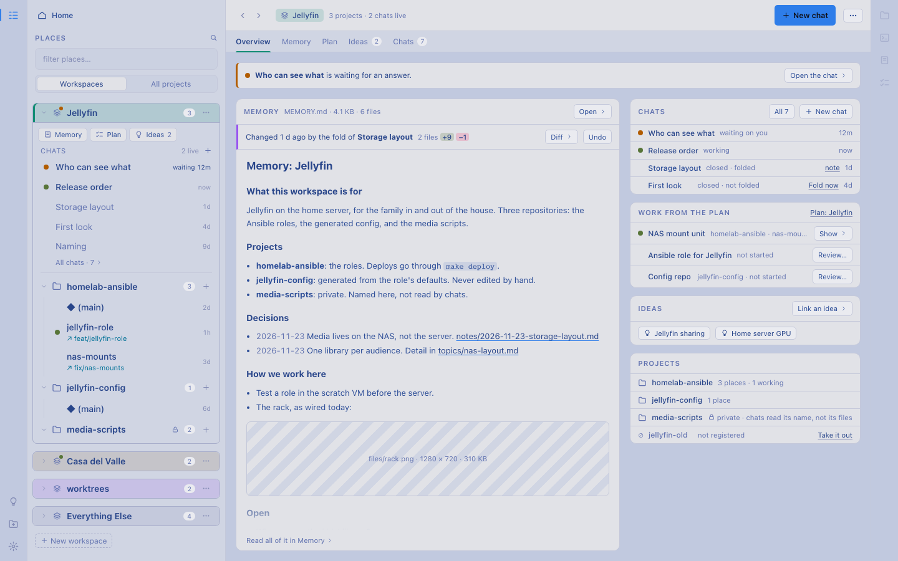</button><figcaption><span class="who"><i></i>Combined</span><span>What needs you, the memory, then chats, work, ideas and projects</span><span class="lab">Tokyo Night Day, light</span><span class="lab">1440 px window</span></figcaption></figure><figure class="shot d-combined" data-theme-of="dark" data-only=""><button type="button" class="zoom" data-src="combined/02-overview-1600.dark.png" data-cap="Combined · The same, wider · Tokyo Night (dark) · 1600 px window" aria-label="Open large: Combined · The same, wider · Tokyo Night (dark) · 1600 px window">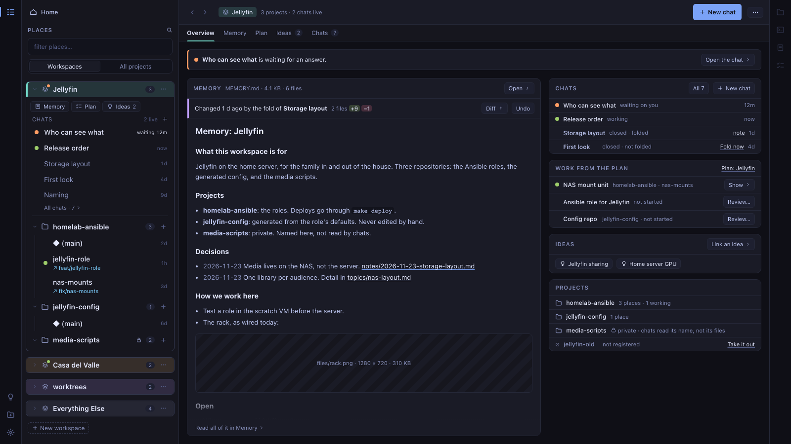</button><figcaption><span class="who"><i></i>Combined</span><span>The same, wider</span><span class="lab">Tokyo Night, dark</span><span class="lab">1600 px window</span></figcaption></figure><figure class="shot d-combined" data-theme-of="light" data-only=""><button type="button" class="zoom" data-src="combined/02-overview-1600.light.png" data-cap="Combined · The same, wider · Tokyo Night Day (light) · 1600 px window" aria-label="Open large: Combined · The same, wider · Tokyo Night Day (light) · 1600 px window">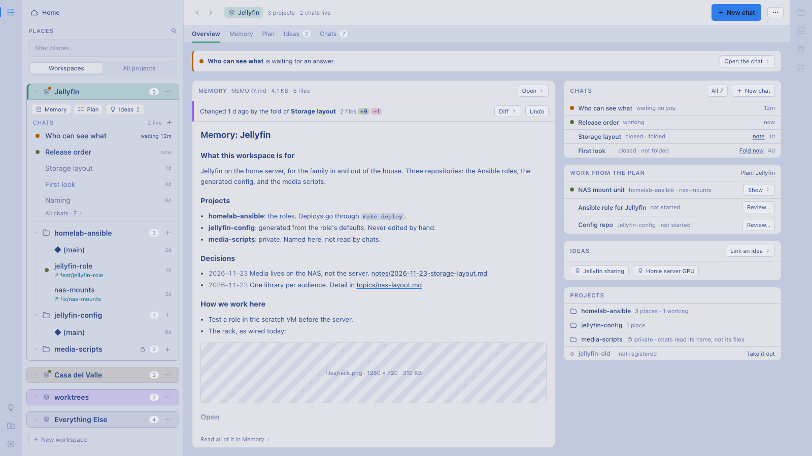</button><figcaption><span class="who"><i></i>Combined</span><span>The same, wider</span><span class="lab">Tokyo Night Day, light</span><span class="lab">1600 px window</span></figcaption></figure><figure class="shot d-fable" data-theme-of="dark" data-only=""><button type="button" class="zoom" data-src="fable/02-workspace.dark.png" data-cap="fable · The whole index beside the cards · Tokyo Night (dark) · 1440 px window" aria-label="Open large: fable · The whole index beside the cards · Tokyo Night (dark) · 1440 px window">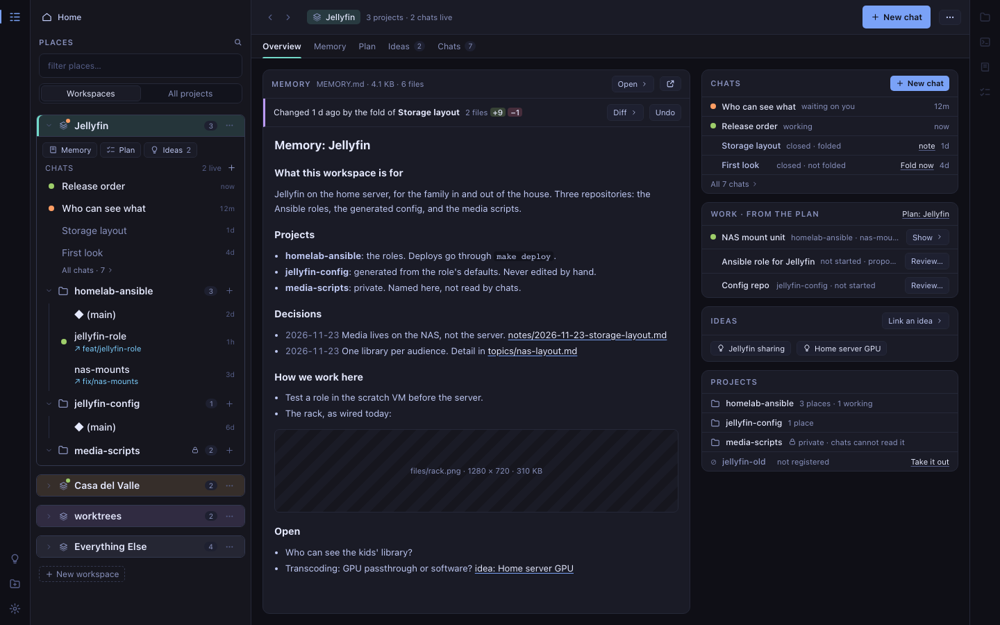</button><figcaption><span class="who"><i></i>fable</span><span>The whole index beside the cards</span><span class="lab">Tokyo Night, dark</span><span class="lab">1440 px window</span></figcaption></figure><figure class="shot d-fable" data-theme-of="light" data-only=""><button type="button" class="zoom" data-src="fable/02-workspace.light.png" data-cap="fable · The whole index beside the cards · Tokyo Night Day (light) · 1440 px window" aria-label="Open large: fable · The whole index beside the cards · Tokyo Night Day (light) · 1440 px window">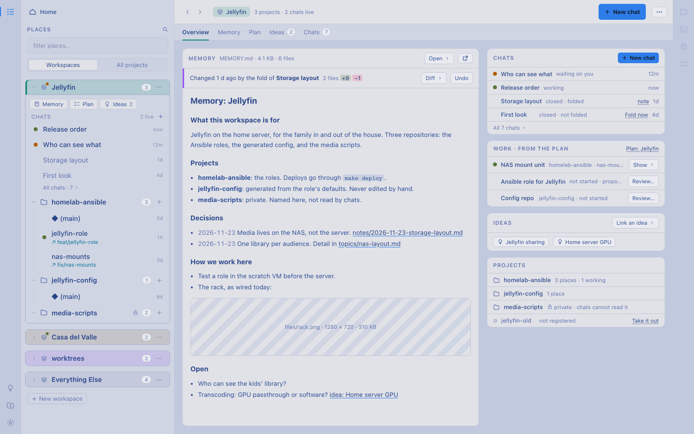</button><figcaption><span class="who"><i></i>fable</span><span>The whole index beside the cards</span><span class="lab">Tokyo Night Day, light</span><span class="lab">1440 px window</span></figcaption></figure><figure class="shot d-fable" data-theme-of="dark" data-only="1"><button type="button" class="zoom" data-src="fable/02-workspace-1600.dark.png" data-cap="fable · The same, wider · Tokyo Night (dark) · 1600 px window" aria-label="Open large: fable · The same, wider · Tokyo Night (dark) · 1600 px window">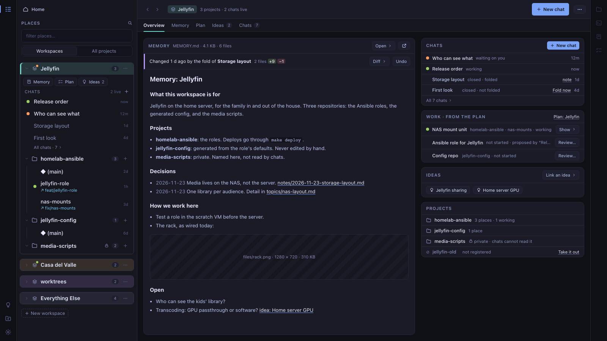</button><figcaption><span class="who"><i></i>fable</span><span>The same, wider</span><span class="lab">Tokyo Night, dark</span><span class="lab">1600 px window</span></figcaption></figure><figure class="shot d-codex" data-theme-of="dark" data-only=""><button type="button" class="zoom" data-src="codex/overview-dark.png" data-cap="codex · Counts and lists · Tokyo Night (dark) · 1680 px window" aria-label="Open large: codex · Counts and lists · Tokyo Night (dark) · 1680 px window">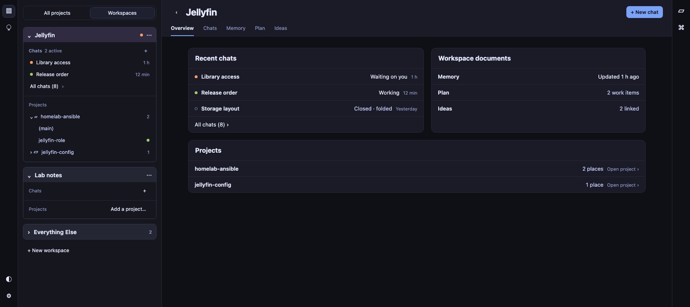</button><figcaption><span class="who"><i></i>codex</span><span>Counts and lists</span><span class="lab">Tokyo Night, dark</span><span class="lab">1680 px window</span></figcaption></figure><figure class="shot d-codex" data-theme-of="light" data-only=""><button type="button" class="zoom" data-src="codex/overview-light.png" data-cap="codex · Counts and lists · Catppuccin Latte (light) · 1680 px window" aria-label="Open large: codex · Counts and lists · Catppuccin Latte (light) · 1680 px window">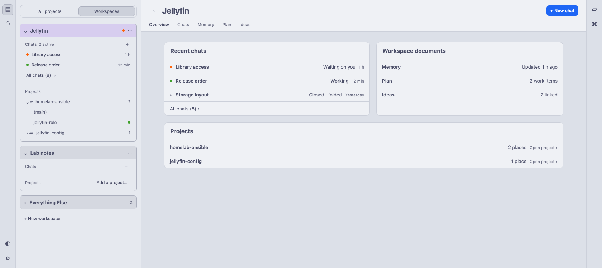</button><figcaption><span class="who"><i></i>codex</span><span>Counts and lists</span><span class="lab">Catppuccin Latte, light</span><span class="lab">1680 px window</span></figcaption></figure><figure class="shot d-kimi" data-theme-of="dark" data-only=""><button type="button" class="zoom" data-src="kimi/workspace-overview-dark.png" data-cap="kimi · A dashboard with an attention line · Tokyo Night (dark) · 1600 px window" aria-label="Open large: kimi · A dashboard with an attention line · Tokyo Night (dark) · 1600 px window">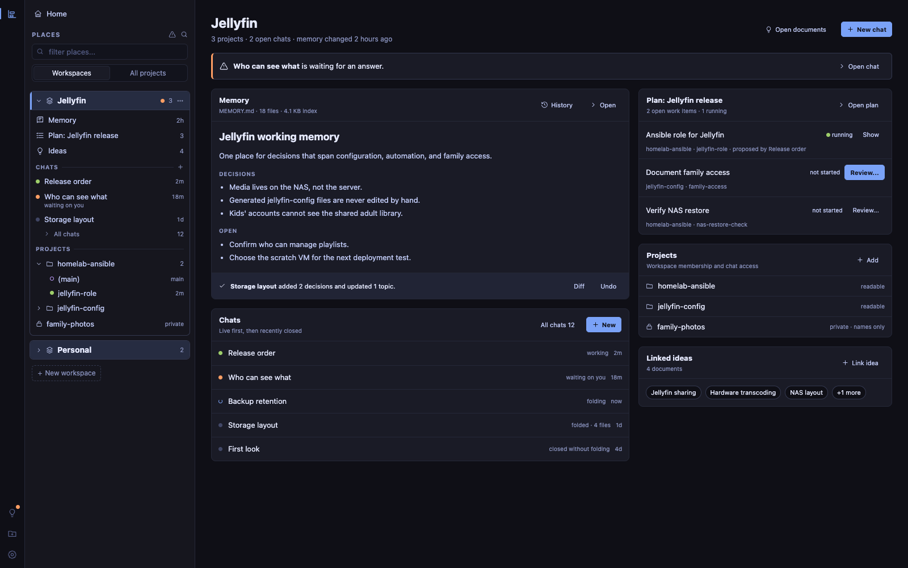</button><figcaption><span class="who"><i></i>kimi</span><span>A dashboard with an attention line</span><span class="lab">Tokyo Night, dark</span><span class="lab">1600 px window</span></figcaption></figure><figure class="shot d-kimi" data-theme-of="light" data-only=""><button type="button" class="zoom" data-src="kimi/workspace-overview-light.png" data-cap="kimi · A dashboard with an attention line · Tokyo Night Day (light) · 1600 px window" aria-label="Open large: kimi · A dashboard with an attention line · Tokyo Night Day (light) · 1600 px window">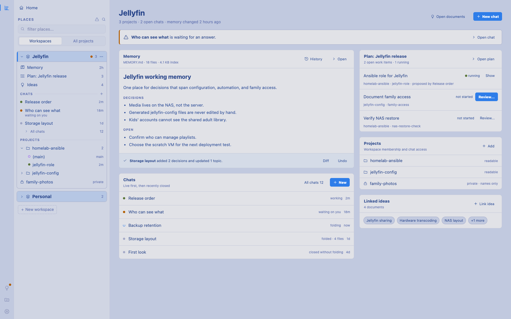</button><figcaption><span class="who"><i></i>kimi</span><span>A dashboard with an attention line</span><span class="lab">Tokyo Night Day, light</span><span class="lab">1600 px window</span></figcaption></figure><figure class="shot d-kimi" data-theme-of="dark" data-only=""><button type="button" class="zoom" data-src="kimi/workspace-empty-dark.png" data-cap="kimi · An empty workspace · Tokyo Night (dark) · 900 px window" aria-label="Open large: kimi · An empty workspace · Tokyo Night (dark) · 900 px window">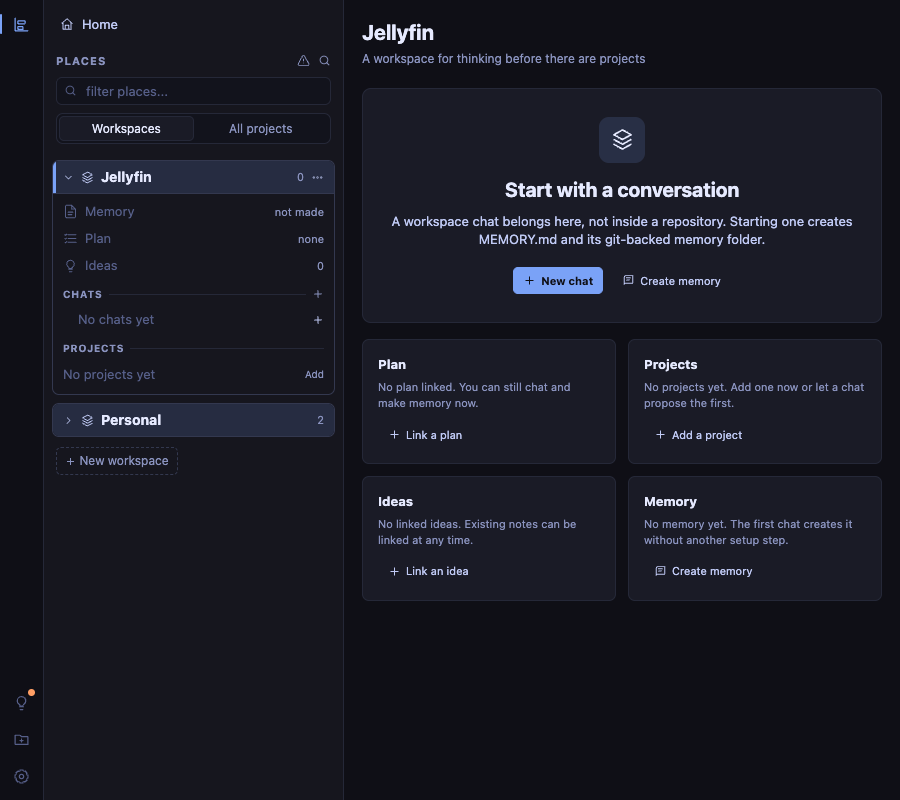</button><figcaption><span class="who"><i></i>kimi</span><span>An empty workspace</span><span class="lab">Tokyo Night, dark</span><span class="lab">900 px window</span></figcaption></figure><figure class="shot d-kimi" data-theme-of="light" data-only=""><button type="button" class="zoom" data-src="kimi/workspace-empty-light.png" data-cap="kimi · An empty workspace · Tokyo Night Day (light) · 900 px window" aria-label="Open large: kimi · An empty workspace · Tokyo Night Day (light) · 900 px window">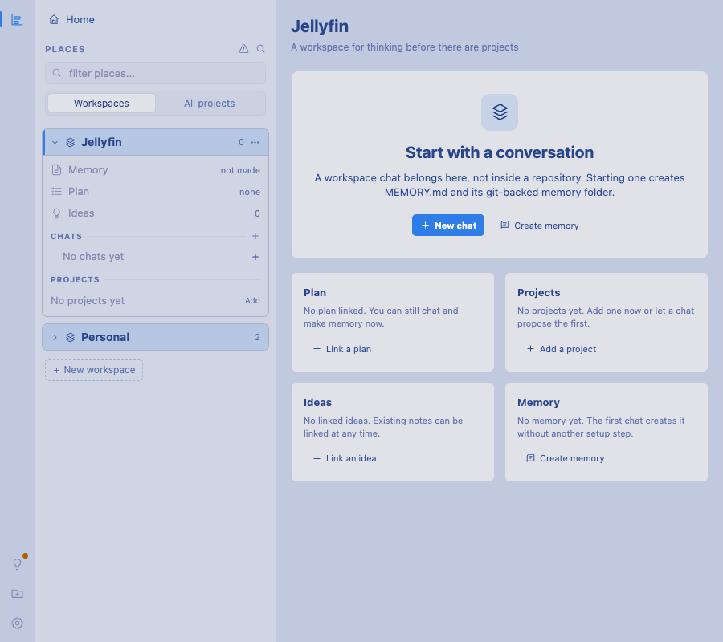</button><figcaption><span class="who"><i></i>kimi</span><span>An empty workspace</span><span class="lab">Tokyo Night Day, light</span><span class="lab">900 px window</span></figcaption></figure><figure class="shot sketch d-memdoor"><div class="sk"><div class="scroll"><pre> ───────────────────────────────────────────│─────────────────────────────
 Memory   Plan   Ideas 3    Chats 4         │                               
 ────────────────────────────────────────   │                               
 MEMORY.md                                 │ Release order ▾               │
 • 2026-11-24 Storage layout              │ Who can see what            │
 • 2026-11-23 NAS plan                   │ Storage layout (closed)      │
                                            │                                │
 FILES   notes 3 · topics 2 · files 1    │ [Message…                    ⏎]
 HISTORY ▸                               │                                │</pre></div><div class="scroll"><pre>   Ideas 3
 ────────────────────────────────────
 Link an idea ▸

 &quot;NAS storage layout&quot;  ×
 &quot;Media pipeline v2&quot;  ×
 &quot;Auth redesign&quot;      ×</pre></div><div class="scroll"><pre>   Chats 4
 ────────────────────────────────────
 ● Release order                running · now
 ◐ Who can see what              busy · 15 min ago
 ○ Storage layout          closed · 2 h ago
 ◐ NAS plan                 ended · yesterday</pre></div><p>No landing page: the Memory tab, in three columns (index, files, history). The Plan and Ideas tabs keep opening the Ideas window.</p></div><figcaption><span class="who"><i></i>memdoor</span><span>Its own text sketches</span><span class="lab">local-model experiment, no images</span></figcaption></figure></div></div><div class="screen" data-screen-of="chat" hidden><h3>Chat beside memory</h3><p>Where the chat goes and where the documents go.</p><div class="figs"><figure class="shot d-combined" data-theme-of="dark" data-only=""><button type="button" class="zoom" data-src="combined/03-chat-and-memory.dark.png" data-cap="Combined · Chat in the middle, documents on the dock side · Tokyo Night (dark) · 1440 px window" aria-label="Open large: Combined · Chat in the middle, documents on the dock side · Tokyo Night (dark) · 1440 px window"></button><figcaption><span class="who"><i></i>Combined</span><span>Chat in the middle, documents on the dock side</span><span class="lab">Tokyo Night, dark</span><span class="lab">1440 px window</span></figcaption></figure><figure class="shot d-combined" data-theme-of="light" data-only=""><button type="button" class="zoom" data-src="combined/03-chat-and-memory.light.png" data-cap="Combined · Chat in the middle, documents on the dock side · Tokyo Night Day (light) · 1440 px window" aria-label="Open large: Combined · Chat in the middle, documents on the dock side · Tokyo Night Day (light) · 1440 px window"></button><figcaption><span class="who"><i></i>Combined</span><span>Chat in the middle, documents on the dock side</span><span class="lab">Tokyo Night Day, light</span><span class="lab">1440 px window</span></figcaption></figure><figure class="shot d-combined" data-theme-of="dark" data-only=""><button type="button" class="zoom" data-src="combined/03-chat-and-memory-1600.dark.png" data-cap="Combined · The same, wider · Tokyo Night (dark) · 1600 px window" aria-label="Open large: Combined · The same, wider · Tokyo Night (dark) · 1600 px window">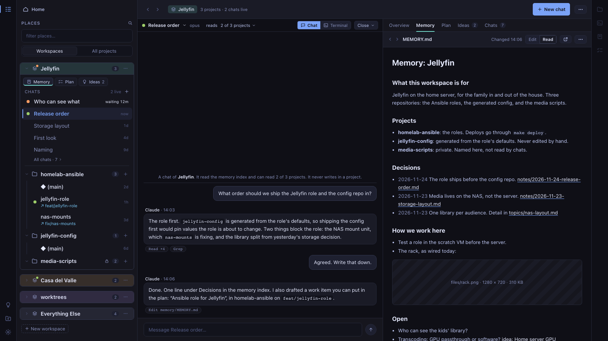</button><figcaption><span class="who"><i></i>Combined</span><span>The same, wider</span><span class="lab">Tokyo Night, dark</span><span class="lab">1600 px window</span></figcaption></figure><figure class="shot d-combined" data-theme-of="light" data-only=""><button type="button" class="zoom" data-src="combined/03-chat-and-memory-1600.light.png" data-cap="Combined · The same, wider · Tokyo Night Day (light) · 1600 px window" aria-label="Open large: Combined · The same, wider · Tokyo Night Day (light) · 1600 px window">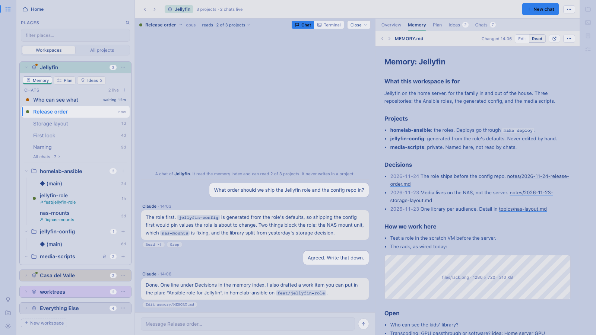</button><figcaption><span class="who"><i></i>Combined</span><span>The same, wider</span><span class="lab">Tokyo Night Day, light</span><span class="lab">1600 px window</span></figcaption></figure><figure class="shot d-combined" data-theme-of="dark" data-only="1"><button type="button" class="zoom" data-src="combined/03-chat-and-memory.dark.webkit.png" data-cap="Combined · The same view in the other engine · Tokyo Night (dark) · 1440 px window, WebKit" aria-label="Open large: Combined · The same view in the other engine · Tokyo Night (dark) · 1440 px window, WebKit">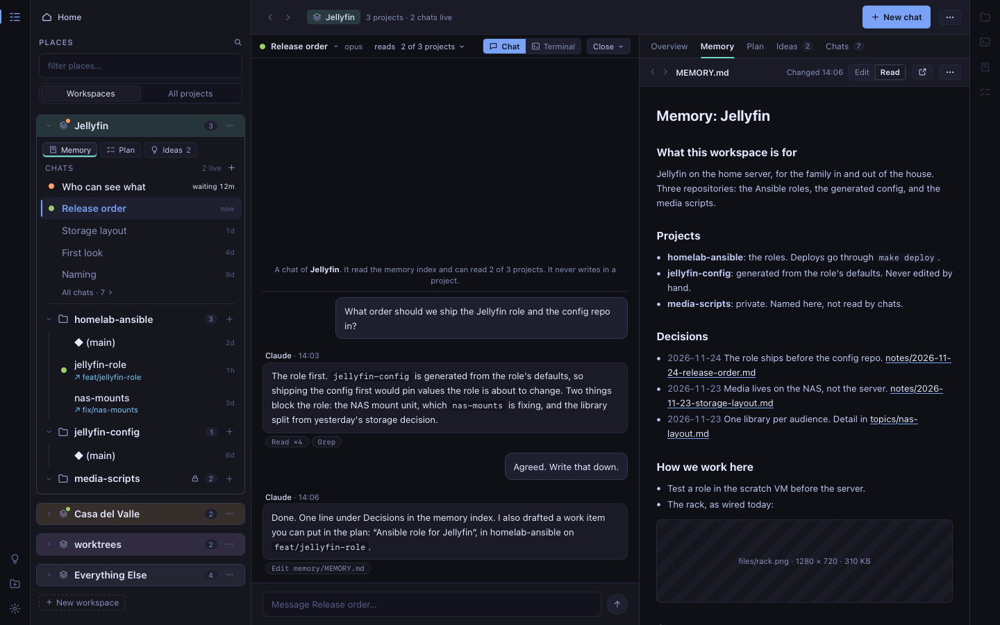</button><figcaption><span class="who"><i></i>Combined</span><span>The same view in the other engine</span><span class="lab">Tokyo Night, dark</span><span class="lab">1440 px window, WebKit</span></figcaption></figure><figure class="shot d-fable" data-theme-of="dark" data-only=""><button type="button" class="zoom" data-src="fable/03-chat-and-memory.dark.png" data-cap="fable · Chat in the middle, documents on the dock side · Tokyo Night (dark) · 1440 px window" aria-label="Open large: fable · Chat in the middle, documents on the dock side · Tokyo Night (dark) · 1440 px window"></button><figcaption><span class="who"><i></i>fable</span><span>Chat in the middle, documents on the dock side</span><span class="lab">Tokyo Night, dark</span><span class="lab">1440 px window</span></figcaption></figure><figure class="shot d-fable" data-theme-of="light" data-only=""><button type="button" class="zoom" data-src="fable/03-chat-and-memory.light.png" data-cap="fable · Chat in the middle, documents on the dock side · Tokyo Night Day (light) · 1440 px window" aria-label="Open large: fable · Chat in the middle, documents on the dock side · Tokyo Night Day (light) · 1440 px window">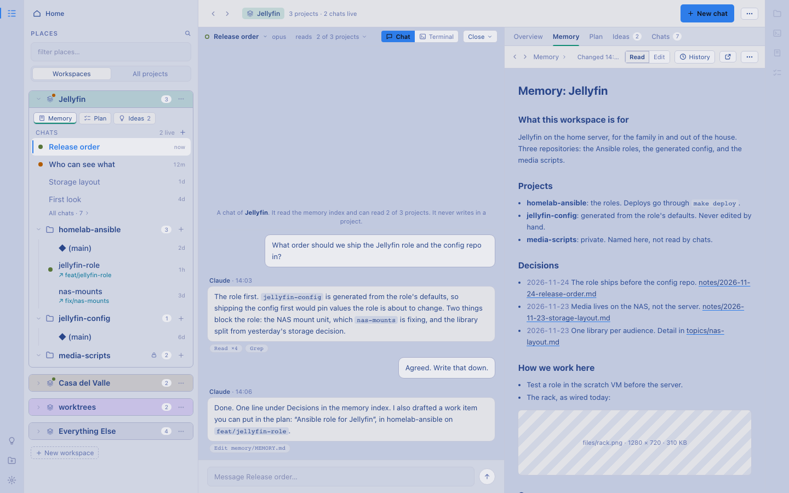</button><figcaption><span class="who"><i></i>fable</span><span>Chat in the middle, documents on the dock side</span><span class="lab">Tokyo Night Day, light</span><span class="lab">1440 px window</span></figcaption></figure><figure class="shot d-fable" data-theme-of="dark" data-only="1"><button type="button" class="zoom" data-src="fable/03-chat-and-memory-1600.dark.png" data-cap="fable · The same, wider · Tokyo Night (dark) · 1600 px window" aria-label="Open large: fable · The same, wider · Tokyo Night (dark) · 1600 px window">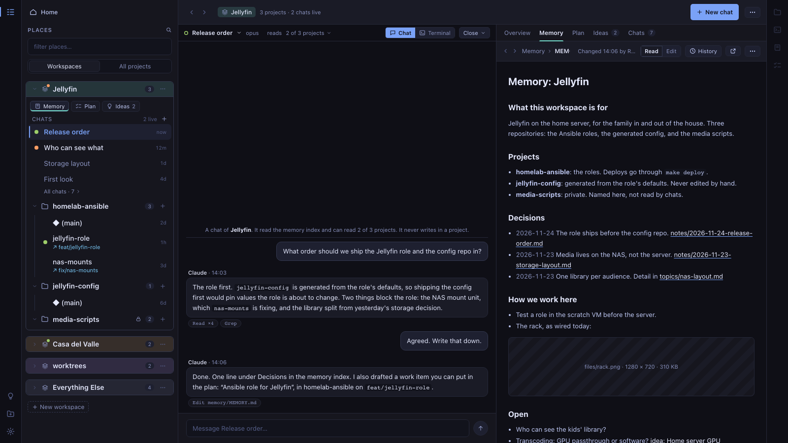</button><figcaption><span class="who"><i></i>fable</span><span>The same, wider</span><span class="lab">Tokyo Night, dark</span><span class="lab">1600 px window</span></figcaption></figure><figure class="shot d-codex" data-theme-of="dark" data-only=""><button type="button" class="zoom" data-src="codex/chat-dark.png" data-cap="codex · A split that needs 1,100 px of main area · Tokyo Night (dark) · 2038 px window, shown at 1800" aria-label="Open large: codex · A split that needs 1,100 px of main area · Tokyo Night (dark) · 2038 px window, shown at 1800">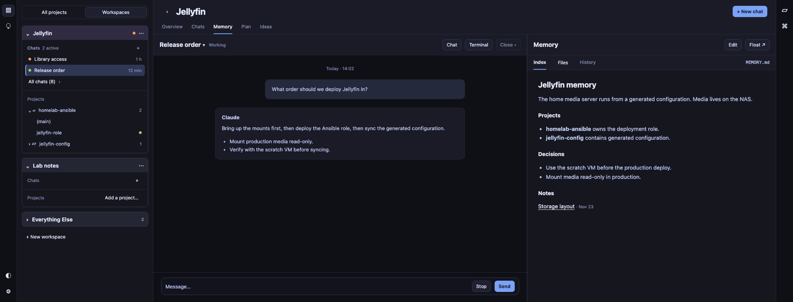</button><figcaption><span class="who"><i></i>codex</span><span>A split that needs 1,100 px of main area</span><span class="lab">Tokyo Night, dark</span><span class="lab">2038 px window, shown at 1800</span></figcaption></figure><figure class="shot d-codex" data-theme-of="light" data-only=""><button type="button" class="zoom" data-src="codex/chat-light.png" data-cap="codex · A split that needs 1,100 px of main area · Catppuccin Latte (light) · 2038 px window, shown at 1800" aria-label="Open large: codex · A split that needs 1,100 px of main area · Catppuccin Latte (light) · 2038 px window, shown at 1800">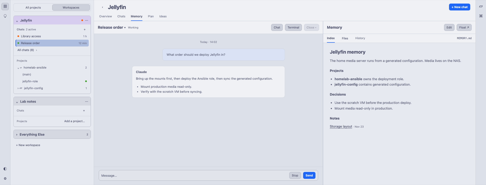</button><figcaption><span class="who"><i></i>codex</span><span>A split that needs 1,100 px of main area</span><span class="lab">Catppuccin Latte, light</span><span class="lab">2038 px window, shown at 1800</span></figcaption></figure><figure class="shot d-kimi" data-theme-of="dark" data-only=""><button type="button" class="zoom" data-src="kimi/chat-memory-dark.png" data-cap="kimi · The chat takes the top bar · Tokyo Night (dark) · 1600 px window" aria-label="Open large: kimi · The chat takes the top bar · Tokyo Night (dark) · 1600 px window">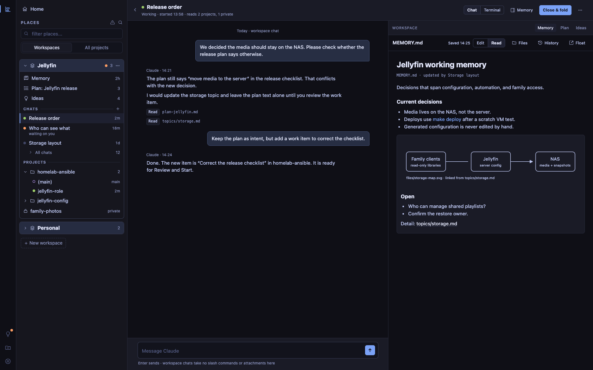</button><figcaption><span class="who"><i></i>kimi</span><span>The chat takes the top bar</span><span class="lab">Tokyo Night, dark</span><span class="lab">1600 px window</span></figcaption></figure><figure class="shot d-kimi" data-theme-of="light" data-only=""><button type="button" class="zoom" data-src="kimi/chat-memory-light.png" data-cap="kimi · The chat takes the top bar · Tokyo Night Day (light) · 1600 px window" aria-label="Open large: kimi · The chat takes the top bar · Tokyo Night Day (light) · 1600 px window">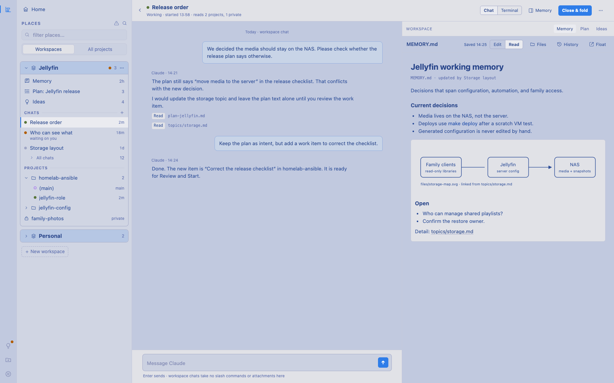</button><figcaption><span class="who"><i></i>kimi</span><span>The chat takes the top bar</span><span class="lab">Tokyo Night Day, light</span><span class="lab">1600 px window</span></figcaption></figure><figure class="shot sketch d-memdoor"><div class="sk"><div class="scroll"><pre> ────────────────────────────────────────│─────────────────────────────
 Memory   Plan   Ideas 3    Chats 4      │ Release order ▾              │
 ────────────────────────────────────────│─────────────────────────────│
 MEMORY.md                             │ Who can see what          │
 • 2026-11-24 Storage layout           │ Storage layout (closed)     │
 • 2026-11-23 NAS plan                │                                │
                                       │ [Message…                    ⏎]│
                                       │                                │
                                       │                                │
                                       │ Terminal                      │</pre></div><div class="scroll"><pre> Release order ▾   Close ▾   Terminal
 ● Who can see what  [Message… ⏎]
 ○ Storage layout    [Terminal view]</pre></div><p>Documents on the left, the chat on the right.</p></div><figcaption><span class="who"><i></i>memdoor</span><span>Its own text sketches</span><span class="lab">local-model experiment, no images</span></figcaption></figure></div></div><div class="screen" data-screen-of="fold" hidden><h3>Fold landed</h3><p>The chat is closed. What memory became, and how to take it back.</p><div class="figs"><figure class="shot d-combined" data-theme-of="dark" data-only=""><button type="button" class="zoom" data-src="combined/04-fold-landed.dark.png" data-cap="Combined · A receipt in the chat, one file of the diff at a time, Undo armed · Tokyo Night (dark) · 1440 px window" aria-label="Open large: Combined · A receipt in the chat, one file of the diff at a time, Undo armed · Tokyo Night (dark) · 1440 px window">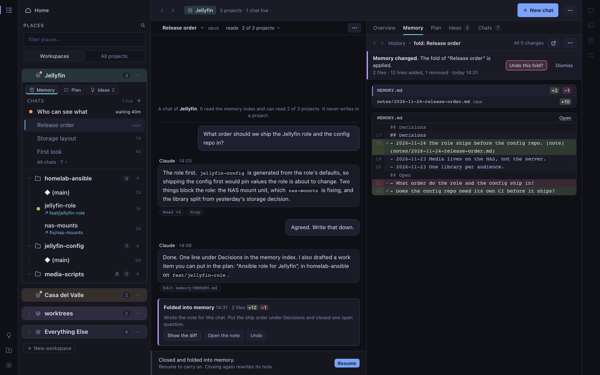</button><figcaption><span class="who"><i></i>Combined</span><span>A receipt in the chat, one file of the diff at a time, Undo armed</span><span class="lab">Tokyo Night, dark</span><span class="lab">1440 px window</span></figcaption></figure><figure class="shot d-combined" data-theme-of="light" data-only=""><button type="button" class="zoom" data-src="combined/04-fold-landed.light.png" data-cap="Combined · A receipt in the chat, one file of the diff at a time, Undo armed · Tokyo Night Day (light) · 1440 px window" aria-label="Open large: Combined · A receipt in the chat, one file of the diff at a time, Undo armed · Tokyo Night Day (light) · 1440 px window">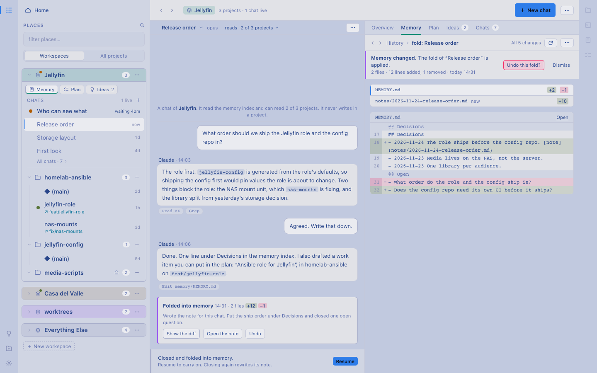</button><figcaption><span class="who"><i></i>Combined</span><span>A receipt in the chat, one file of the diff at a time, Undo armed</span><span class="lab">Tokyo Night Day, light</span><span class="lab">1440 px window</span></figcaption></figure><figure class="shot d-combined" data-theme-of="dark" data-only="1"><button type="button" class="zoom" data-src="combined/04-fold-landed.dark.webkit.png" data-cap="Combined · The same view in the other engine · Tokyo Night (dark) · 1440 px window, WebKit" aria-label="Open large: Combined · The same view in the other engine · Tokyo Night (dark) · 1440 px window, WebKit"></button><figcaption><span class="who"><i></i>Combined</span><span>The same view in the other engine</span><span class="lab">Tokyo Night, dark</span><span class="lab">1440 px window, WebKit</span></figcaption></figure><figure class="shot d-combined" data-theme-of="dark" data-only=""><button type="button" class="zoom" data-src="combined/07-fold-states.dark.png" data-cap="Combined · Every state of the fold · Tokyo Night (dark) · board, chats at 620 px" aria-label="Open large: Combined · Every state of the fold · Tokyo Night (dark) · board, chats at 620 px">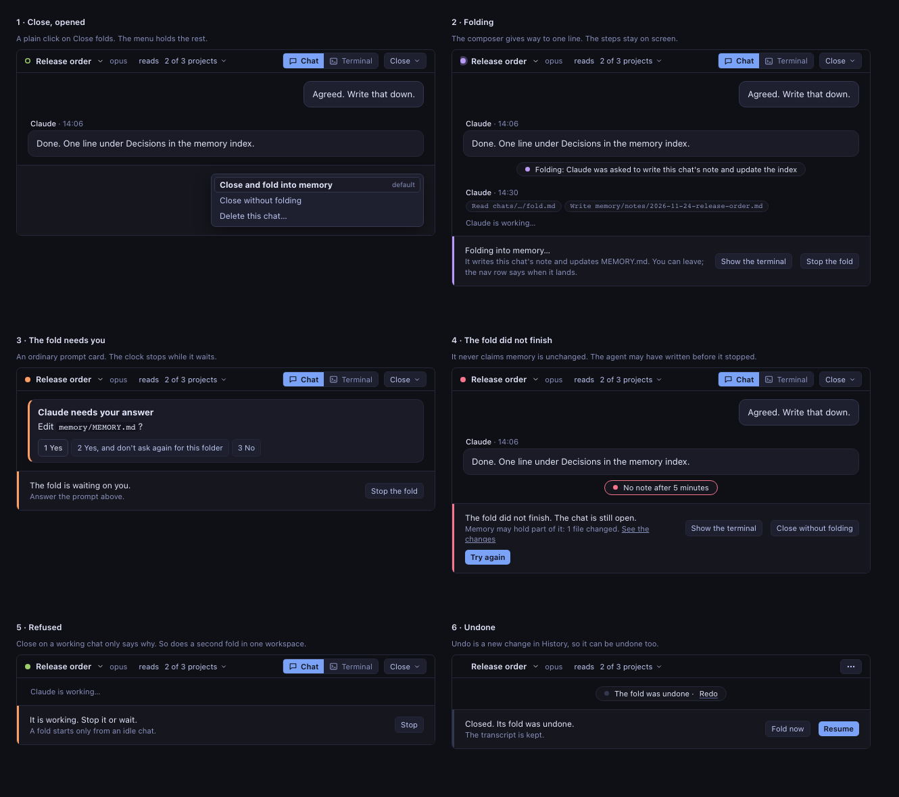</button><figcaption><span class="who"><i></i>Combined</span><span>Every state of the fold</span><span class="lab">Tokyo Night, dark</span><span class="lab">board, chats at 620 px</span></figcaption></figure><figure class="shot d-combined" data-theme-of="light" data-only=""><button type="button" class="zoom" data-src="combined/07-fold-states.light.png" data-cap="Combined · Every state of the fold · Tokyo Night Day (light) · board, chats at 620 px" aria-label="Open large: Combined · Every state of the fold · Tokyo Night Day (light) · board, chats at 620 px">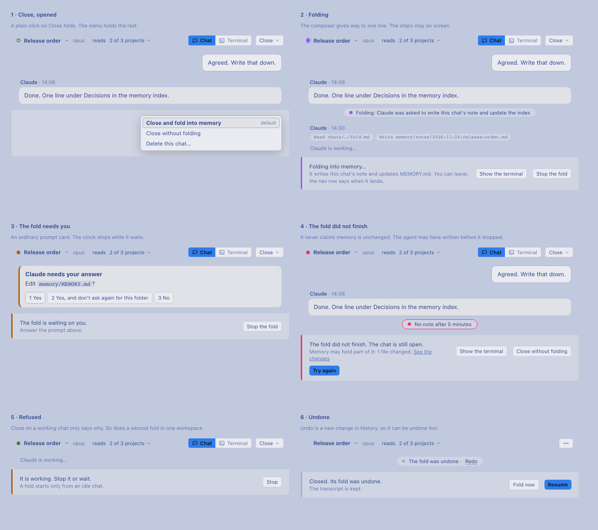</button><figcaption><span class="who"><i></i>Combined</span><span>Every state of the fold</span><span class="lab">Tokyo Night Day, light</span><span class="lab">board, chats at 620 px</span></figcaption></figure><figure class="shot d-fable" data-theme-of="dark" data-only=""><button type="button" class="zoom" data-src="fable/04-fold-landed.dark.png" data-cap="fable · The log and the diff side by side · Tokyo Night (dark) · 1440 px window" aria-label="Open large: fable · The log and the diff side by side · Tokyo Night (dark) · 1440 px window">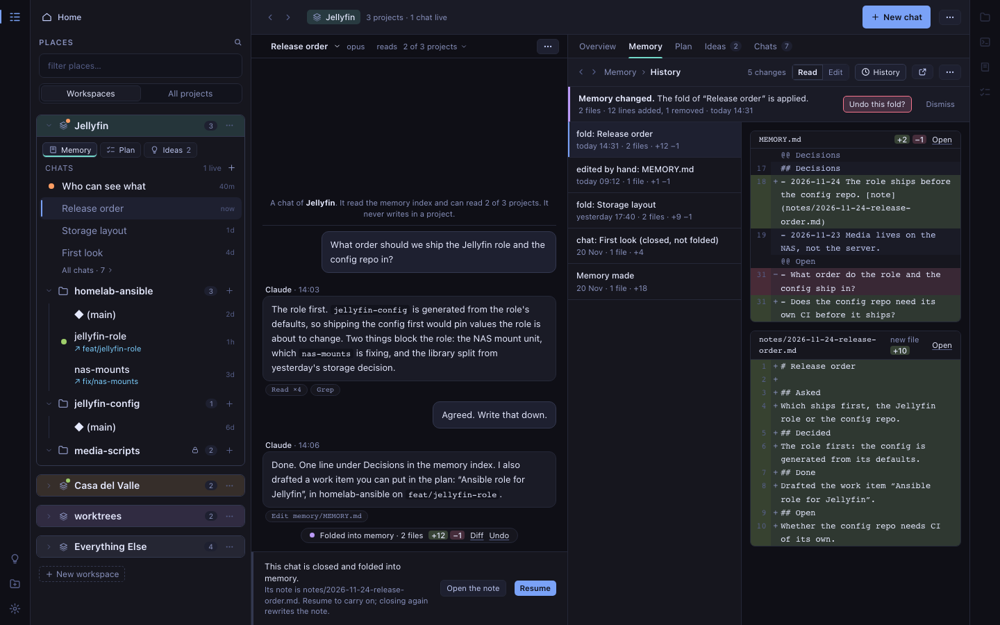</button><figcaption><span class="who"><i></i>fable</span><span>The log and the diff side by side</span><span class="lab">Tokyo Night, dark</span><span class="lab">1440 px window</span></figcaption></figure><figure class="shot d-fable" data-theme-of="light" data-only=""><button type="button" class="zoom" data-src="fable/04-fold-landed.light.png" data-cap="fable · The log and the diff side by side · Tokyo Night Day (light) · 1440 px window" aria-label="Open large: fable · The log and the diff side by side · Tokyo Night Day (light) · 1440 px window">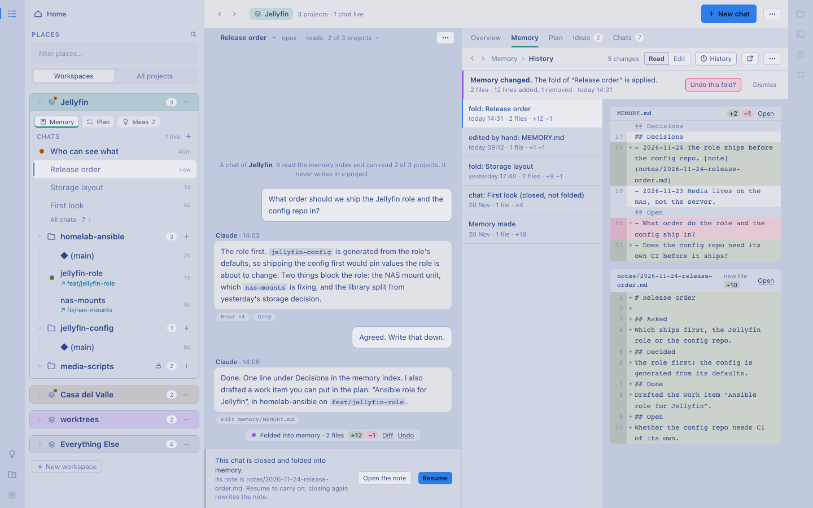</button><figcaption><span class="who"><i></i>fable</span><span>The log and the diff side by side</span><span class="lab">Tokyo Night Day, light</span><span class="lab">1440 px window</span></figcaption></figure><figure class="shot d-fable" data-theme-of="dark" data-only=""><button type="button" class="zoom" data-src="fable/07-fold-states.dark.png" data-cap="fable · Every state of the fold · Tokyo Night (dark) · board, chats at 620 px" aria-label="Open large: fable · Every state of the fold · Tokyo Night (dark) · board, chats at 620 px">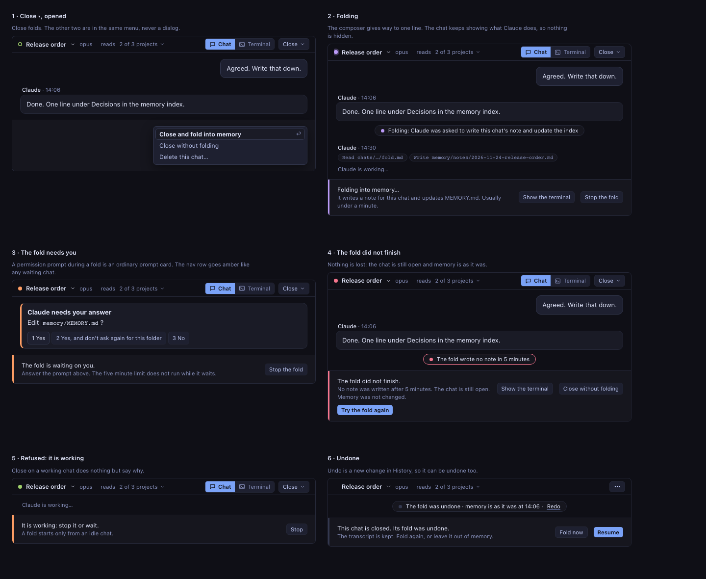</button><figcaption><span class="who"><i></i>fable</span><span>Every state of the fold</span><span class="lab">Tokyo Night, dark</span><span class="lab">board, chats at 620 px</span></figcaption></figure><figure class="shot d-fable" data-theme-of="light" data-only=""><button type="button" class="zoom" data-src="fable/07-fold-states.light.png" data-cap="fable · Every state of the fold · Tokyo Night Day (light) · board, chats at 620 px" aria-label="Open large: fable · Every state of the fold · Tokyo Night Day (light) · board, chats at 620 px">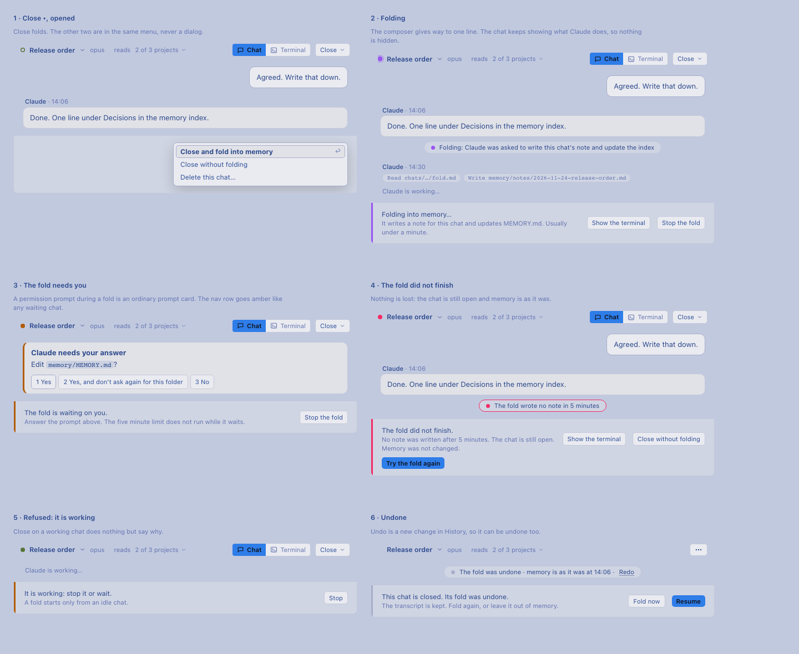</button><figcaption><span class="who"><i></i>fable</span><span>Every state of the fold</span><span class="lab">Tokyo Night Day, light</span><span class="lab">board, chats at 620 px</span></figcaption></figure><figure class="shot d-codex" data-theme-of="dark" data-only=""><button type="button" class="zoom" data-src="codex/fold-dark.png" data-cap="codex · A receipt, then the diff · Tokyo Night (dark) · 1680 px window" aria-label="Open large: codex · A receipt, then the diff · Tokyo Night (dark) · 1680 px window">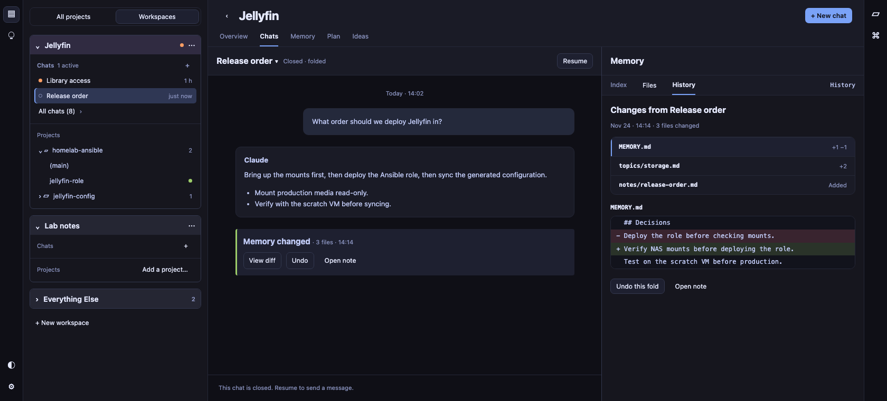</button><figcaption><span class="who"><i></i>codex</span><span>A receipt, then the diff</span><span class="lab">Tokyo Night, dark</span><span class="lab">1680 px window</span></figcaption></figure><figure class="shot d-codex" data-theme-of="light" data-only=""><button type="button" class="zoom" data-src="codex/fold-light.png" data-cap="codex · A receipt, then the diff · Catppuccin Latte (light) · 1680 px window" aria-label="Open large: codex · A receipt, then the diff · Catppuccin Latte (light) · 1680 px window">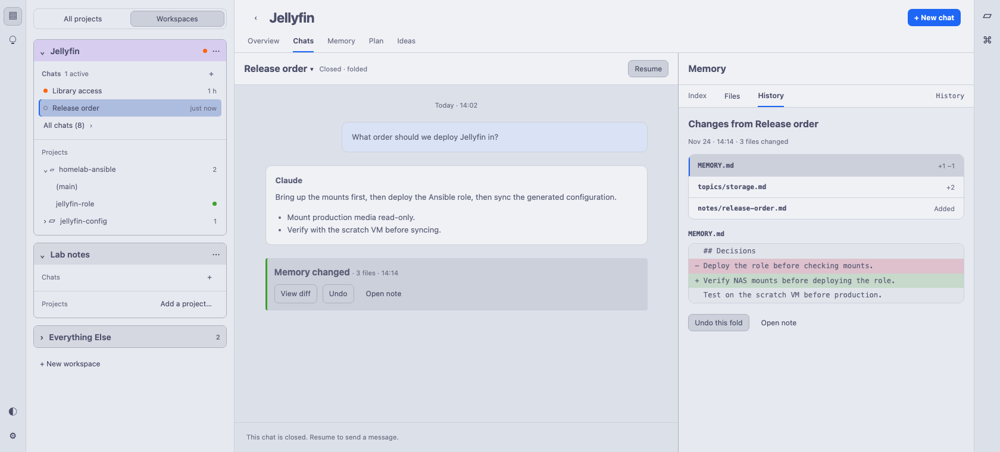</button><figcaption><span class="who"><i></i>codex</span><span>A receipt, then the diff</span><span class="lab">Catppuccin Latte, light</span><span class="lab">1680 px window</span></figcaption></figure><figure class="shot d-kimi" data-theme-of="dark" data-only=""><button type="button" class="zoom" data-src="kimi/fold-landed-dark.png" data-cap="kimi · A card, with the diff open · Tokyo Night (dark) · 1600 px window" aria-label="Open large: kimi · A card, with the diff open · Tokyo Night (dark) · 1600 px window">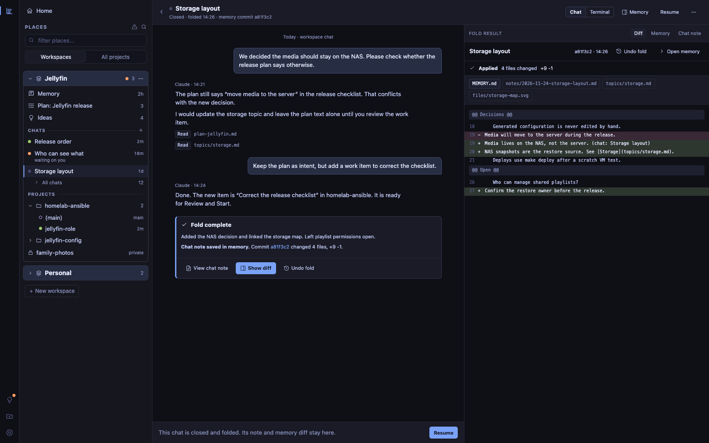</button><figcaption><span class="who"><i></i>kimi</span><span>A card, with the diff open</span><span class="lab">Tokyo Night, dark</span><span class="lab">1600 px window</span></figcaption></figure><figure class="shot d-kimi" data-theme-of="light" data-only=""><button type="button" class="zoom" data-src="kimi/fold-landed-light.png" data-cap="kimi · A card, with the diff open · Tokyo Night Day (light) · 1600 px window" aria-label="Open large: kimi · A card, with the diff open · Tokyo Night Day (light) · 1600 px window">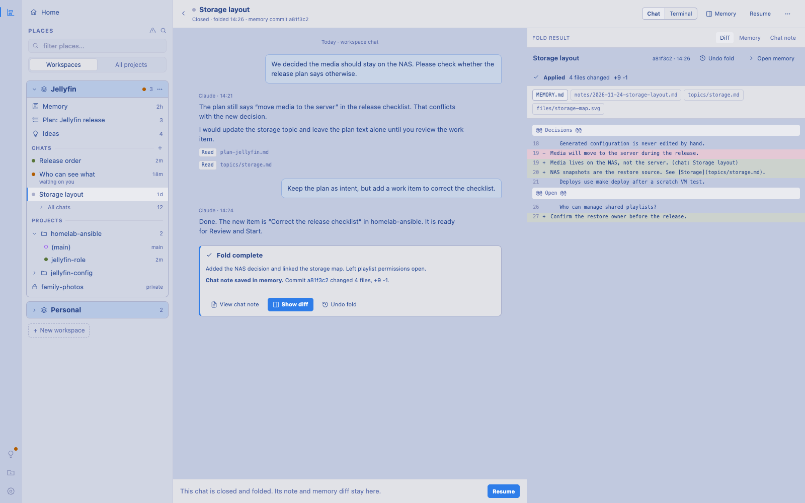</button><figcaption><span class="who"><i></i>kimi</span><span>A card, with the diff open</span><span class="lab">Tokyo Night Day, light</span><span class="lab">1600 px window</span></figcaption></figure><figure class="shot sketch d-memdoor"><div class="sk"><div class="scroll"><pre> ┌─────────────────────────────┐
 │           Folding           │
 │  This chat is being folded.│
 │                             │
 │  ──────────────────────────  │
 │  Processing... (30%)        │
 │                             │
 │                             │
 └─────────────────────────────┘</pre></div><div class="scroll"><pre> ┌─────────────────────────────┐
 │  Fold landed                 │
 │                             │
 │  MEMORY.md changed:          │
 │  +2 lines, -1 line         │
 │                             │
 │  ──────────────────────────  │
 │                              │
 │  +3 -1                       │
 └─────────────────────────────┘</pre></div><div class="scroll"><pre> ┌─────────────────────────────┐
 │  Fold failed                 │
 │                             │
 │  The agent timed out.       │
 │  A partial commit may exist.│
 │                             │
 │  ──────────────────────────  │
 │                              │
 │  [ Try again ]   [ Undo ]    │
 └─────────────────────────────┘</pre></div><div class="scroll"><pre> ┌─────────────────────────────┐
 │  Storage layout             │
 │                             │
 │  Memory changed:            │
 │  +3 -1                       │
 │                             │
 │  ──────────────────────────  │
 │                              │
 │  [ View diff ]   [ Undo ]    │
 └─────────────────────────────┘</pre></div><p>An overlay with a percentage while it runs, then a card with the line counts.</p></div><figcaption><span class="who"><i></i>memdoor</span><span>Its own text sketches</span><span class="lab">local-model experiment, no images</span></figcaption></figure></div></div><div class="screen" data-screen-of="editing" hidden><h3>Editing</h3><p>A document edited in place.</p><div class="figs"><figure class="shot d-combined" data-theme-of="dark" data-only=""><button type="button" class="zoom" data-src="combined/05-editing.dark.png" data-cap="Combined · A topic, with the link picker · Tokyo Night (dark) · 1440 px window" aria-label="Open large: Combined · A topic, with the link picker · Tokyo Night (dark) · 1440 px window">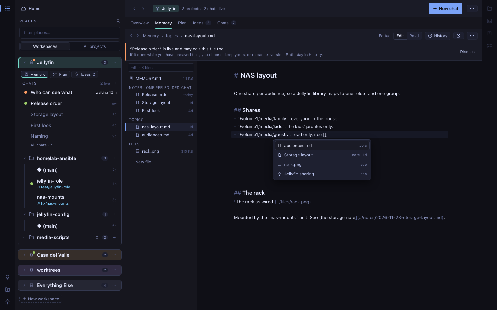</button><figcaption><span class="who"><i></i>Combined</span><span>A topic, with the link picker</span><span class="lab">Tokyo Night, dark</span><span class="lab">1440 px window</span></figcaption></figure><figure class="shot d-combined" data-theme-of="light" data-only=""><button type="button" class="zoom" data-src="combined/05-editing.light.png" data-cap="Combined · A topic, with the link picker · Tokyo Night Day (light) · 1440 px window" aria-label="Open large: Combined · A topic, with the link picker · Tokyo Night Day (light) · 1440 px window"></button><figcaption><span class="who"><i></i>Combined</span><span>A topic, with the link picker</span><span class="lab">Tokyo Night Day, light</span><span class="lab">1440 px window</span></figcaption></figure><figure class="shot d-fable" data-theme-of="dark" data-only=""><button type="button" class="zoom" data-src="fable/05-editing.dark.png" data-cap="fable · A topic, with the link picker · Tokyo Night (dark) · 1440 px window" aria-label="Open large: fable · A topic, with the link picker · Tokyo Night (dark) · 1440 px window">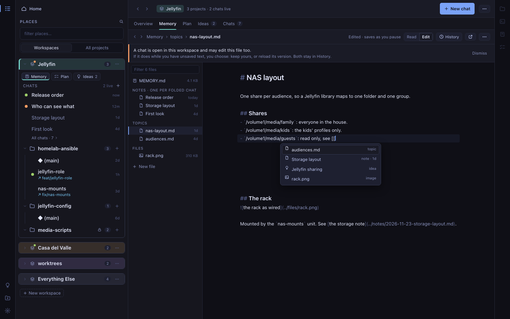</button><figcaption><span class="who"><i></i>fable</span><span>A topic, with the link picker</span><span class="lab">Tokyo Night, dark</span><span class="lab">1440 px window</span></figcaption></figure><figure class="shot d-fable" data-theme-of="light" data-only=""><button type="button" class="zoom" data-src="fable/05-editing.light.png" data-cap="fable · A topic, with the link picker · Tokyo Night Day (light) · 1440 px window" aria-label="Open large: fable · A topic, with the link picker · Tokyo Night Day (light) · 1440 px window">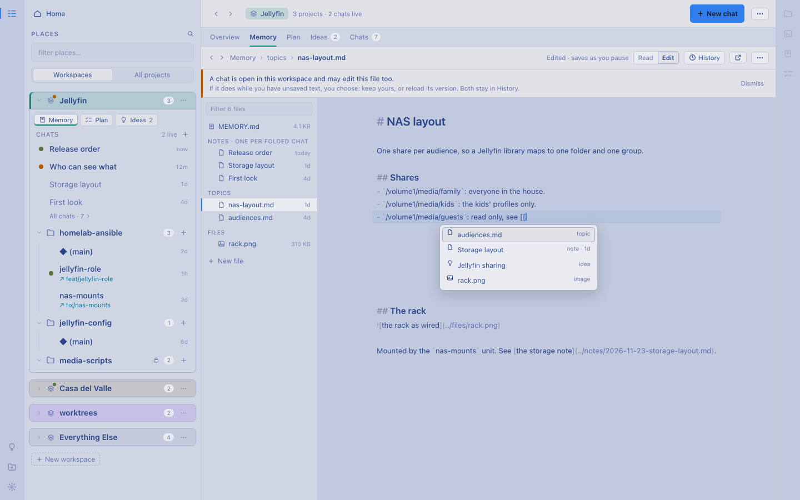</button><figcaption><span class="who"><i></i>fable</span><span>A topic, with the link picker</span><span class="lab">Tokyo Night Day, light</span><span class="lab">1440 px window</span></figcaption></figure><figure class="shot d-fable" data-theme-of="dark" data-only=""><button type="button" class="zoom" data-src="fable/09-large-memory.dark.png" data-cap="fable · A memory of 200 files, read · Tokyo Night (dark) · 1440 px window" aria-label="Open large: fable · A memory of 200 files, read · Tokyo Night (dark) · 1440 px window">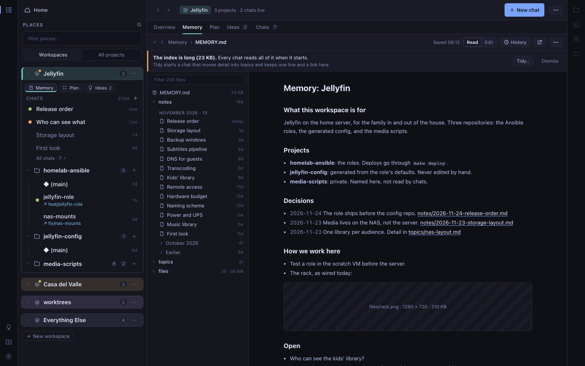</button><figcaption><span class="who"><i></i>fable</span><span>A memory of 200 files, read</span><span class="lab">Tokyo Night, dark</span><span class="lab">1440 px window</span></figcaption></figure><figure class="shot d-fable" data-theme-of="light" data-only=""><button type="button" class="zoom" data-src="fable/09-large-memory.light.png" data-cap="fable · A memory of 200 files, read · Tokyo Night Day (light) · 1440 px window" aria-label="Open large: fable · A memory of 200 files, read · Tokyo Night Day (light) · 1440 px window">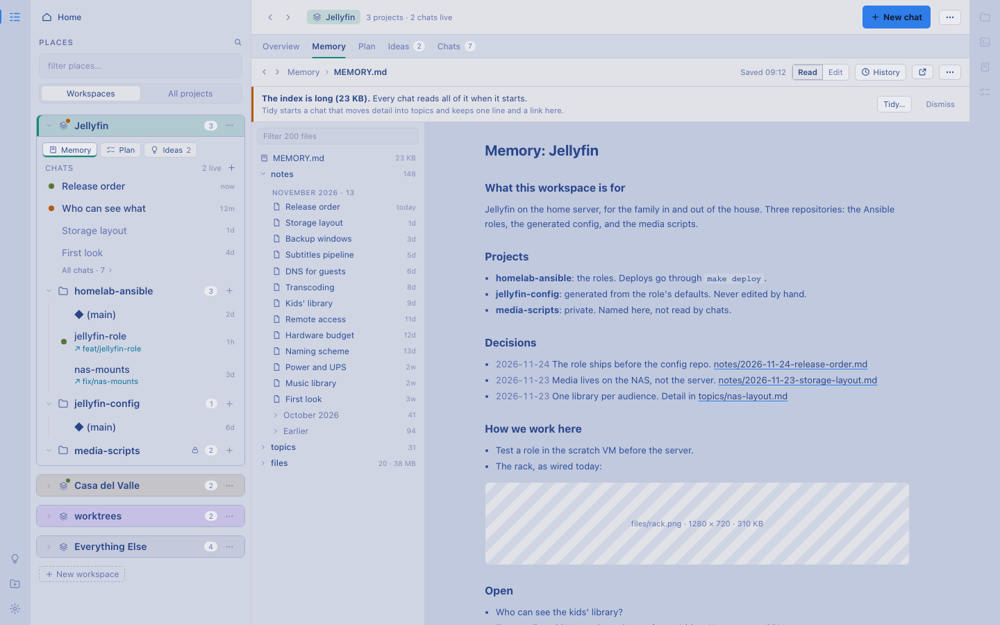</button><figcaption><span class="who"><i></i>fable</span><span>A memory of 200 files, read</span><span class="lab">Tokyo Night Day, light</span><span class="lab">1440 px window</span></figcaption></figure><figure class="shot d-codex" data-theme-of="dark" data-only=""><button type="button" class="zoom" data-src="codex/edit-dark.png" data-cap="codex · A topic with its source · Tokyo Night (dark) · 1570 px window" aria-label="Open large: codex · A topic with its source · Tokyo Night (dark) · 1570 px window">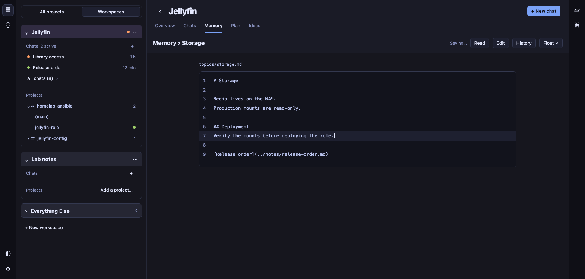</button><figcaption><span class="who"><i></i>codex</span><span>A topic with its source</span><span class="lab">Tokyo Night, dark</span><span class="lab">1570 px window</span></figcaption></figure><figure class="shot d-codex" data-theme-of="light" data-only=""><button type="button" class="zoom" data-src="codex/edit-light.png" data-cap="codex · A topic with its source · Catppuccin Latte (light) · 1570 px window" aria-label="Open large: codex · A topic with its source · Catppuccin Latte (light) · 1570 px window"></button><figcaption><span class="who"><i></i>codex</span><span>A topic with its source</span><span class="lab">Catppuccin Latte, light</span><span class="lab">1570 px window</span></figcaption></figure><figure class="shot d-kimi" data-theme-of="dark" data-only=""><button type="button" class="zoom" data-src="kimi/document-edit-dark.png" data-cap="kimi · A topic with line numbers · Tokyo Night (dark) · 1600 px window" aria-label="Open large: kimi · A topic with line numbers · Tokyo Night (dark) · 1600 px window"></button><figcaption><span class="who"><i></i>kimi</span><span>A topic with line numbers</span><span class="lab">Tokyo Night, dark</span><span class="lab">1600 px window</span></figcaption></figure><figure class="shot d-kimi" data-theme-of="light" data-only=""><button type="button" class="zoom" data-src="kimi/document-edit-light.png" data-cap="kimi · A topic with line numbers · Tokyo Night Day (light) · 1600 px window" aria-label="Open large: kimi · A topic with line numbers · Tokyo Night Day (light) · 1600 px window"></button><figcaption><span class="who"><i></i>kimi</span><span>A topic with line numbers</span><span class="lab">Tokyo Night Day, light</span><span class="lab">1600 px window</span></figcaption></figure><figure class="shot sketch d-memdoor"><div class="sk"><div class="scroll"><pre> ┌──────────────────────────────────────┐
 │ Memory   Plan   Ideas 3    Chats 4  │ ← tabs (sticky)
 └──────────────────────┬───────────────┘
 │                      │ ← thin divider (1px, --line)
 │  DOCUMENT TITLE      │ &quot;⇱ float&quot; button (top-right of tab bar, visible only for memory files)
 │  ────────────────────│
 │                      │
 │  # Memory: Personal   │
 │  ## What this workspace│
 │                     │
 │  # ...               │
 │                      │
 │                      │
 └──────────────────────┴───────────────┘</pre></div><p>Read until you click, then CodeMirror, saved with ⌘S.</p></div><figcaption><span class="who"><i></i>memdoor</span><span>Its own text sketches</span><span class="lab">local-model experiment, no images</span></figcaption></figure></div></div><div class="screen" data-screen-of="floated" hidden><h3>Floated</h3><p>A document in its own window, and what it leaves behind.</p><div class="figs"><figure class="shot d-combined" data-theme-of="dark" data-only=""><button type="button" class="zoom" data-src="combined/06-floated.dark.png" data-cap="Combined · A card in main, the Documents window beside it · Tokyo Night (dark) · 1240 and 590 px windows" aria-label="Open large: Combined · A card in main, the Documents window beside it · Tokyo Night (dark) · 1240 and 590 px windows"></button><figcaption><span class="who"><i></i>Combined</span><span>A card in main, the Documents window beside it</span><span class="lab">Tokyo Night, dark</span><span class="lab">1240 and 590 px windows</span></figcaption></figure><figure class="shot d-combined" data-theme-of="light" data-only=""><button type="button" class="zoom" data-src="combined/06-floated.light.png" data-cap="Combined · A card in main, the Documents window beside it · Tokyo Night Day (light) · 1240 and 590 px windows" aria-label="Open large: Combined · A card in main, the Documents window beside it · Tokyo Night Day (light) · 1240 and 590 px windows"></button><figcaption><span class="who"><i></i>Combined</span><span>A card in main, the Documents window beside it</span><span class="lab">Tokyo Night Day, light</span><span class="lab">1240 and 590 px windows</span></figcaption></figure><figure class="shot d-fable" data-theme-of="dark" data-only=""><button type="button" class="zoom" data-src="fable/06-floated.dark.png" data-cap="fable · A card in main, the Ideas window beside it · Tokyo Night (dark) · 1180 and 600 px windows" aria-label="Open large: fable · A card in main, the Ideas window beside it · Tokyo Night (dark) · 1180 and 600 px windows"></button><figcaption><span class="who"><i></i>fable</span><span>A card in main, the Ideas window beside it</span><span class="lab">Tokyo Night, dark</span><span class="lab">1180 and 600 px windows</span></figcaption></figure><figure class="shot d-fable" data-theme-of="light" data-only=""><button type="button" class="zoom" data-src="fable/06-floated.light.png" data-cap="fable · A card in main, the Ideas window beside it · Tokyo Night Day (light) · 1180 and 600 px windows" aria-label="Open large: fable · A card in main, the Ideas window beside it · Tokyo Night Day (light) · 1180 and 600 px windows"></button><figcaption><span class="who"><i></i>fable</span><span>A card in main, the Ideas window beside it</span><span class="lab">Tokyo Night Day, light</span><span class="lab">1180 and 600 px windows</span></figcaption></figure><figure class="shot d-codex" data-theme-of="dark" data-only=""><button type="button" class="zoom" data-src="codex/float-main-dark.png" data-cap="codex · The main window · Tokyo Night (dark) · 1420 px window" aria-label="Open large: codex · The main window · Tokyo Night (dark) · 1420 px window"></button><figcaption><span class="who"><i></i>codex</span><span>The main window</span><span class="lab">Tokyo Night, dark</span><span class="lab">1420 px window</span></figcaption></figure><figure class="shot d-codex" data-theme-of="light" data-only=""><button type="button" class="zoom" data-src="codex/float-main-light.png" data-cap="codex · The main window · Catppuccin Latte (light) · 1420 px window" aria-label="Open large: codex · The main window · Catppuccin Latte (light) · 1420 px window"></button><figcaption><span class="who"><i></i>codex</span><span>The main window</span><span class="lab">Catppuccin Latte, light</span><span class="lab">1420 px window</span></figcaption></figure><figure class="shot d-codex" data-theme-of="dark" data-only=""><button type="button" class="zoom" data-src="codex/float-dark.png" data-cap="codex · The floated window · Tokyo Night (dark) · 860 px window" aria-label="Open large: codex · The floated window · Tokyo Night (dark) · 860 px window"></button><figcaption><span class="who"><i></i>codex</span><span>The floated window</span><span class="lab">Tokyo Night, dark</span><span class="lab">860 px window</span></figcaption></figure><figure class="shot d-codex" data-theme-of="light" data-only=""><button type="button" class="zoom" data-src="codex/float-light.png" data-cap="codex · The floated window · Catppuccin Latte (light) · 860 px window" aria-label="Open large: codex · The floated window · Catppuccin Latte (light) · 860 px window"></button><figcaption><span class="who"><i></i>codex</span><span>The floated window</span><span class="lab">Catppuccin Latte, light</span><span class="lab">860 px window</span></figcaption></figure><figure class="shot d-kimi" data-theme-of="dark" data-only=""><button type="button" class="zoom" data-src="kimi/document-floated-dark.png" data-cap="kimi · One document, with its files · Tokyo Night (dark) · 1600 and 790 px windows" aria-label="Open large: kimi · One document, with its files · Tokyo Night (dark) · 1600 and 790 px windows"></button><figcaption><span class="who"><i></i>kimi</span><span>One document, with its files</span><span class="lab">Tokyo Night, dark</span><span class="lab">1600 and 790 px windows</span></figcaption></figure><figure class="shot d-kimi" data-theme-of="light" data-only=""><button type="button" class="zoom" data-src="kimi/document-floated-light.png" data-cap="kimi · One document, with its files · Tokyo Night Day (light) · 1600 and 790 px windows" aria-label="Open large: kimi · One document, with its files · Tokyo Night Day (light) · 1600 and 790 px windows"></button><figcaption><span class="who"><i></i>kimi</span><span>One document, with its files</span><span class="lab">Tokyo Night Day, light</span><span class="lab">1600 and 790 px windows</span></figcaption></figure><figure class="shot sketch d-memdoor"><div class="sk"><p>No sketch. The document opens in the Ideas window and stays where it was in main.</p></div><figcaption><span class="who"><i></i>memdoor</span><span>Its words; it drew nothing here</span><span class="lab">local-model experiment, no images</span></figcaption></figure></div></div><div class="screen" data-screen-of="place" hidden><h3>Place in a workspace</h3><p>A place selected. Are the workspace's documents still in reach?</p><div class="figs"><figure class="shot d-combined" data-theme-of="dark" data-only=""><button type="button" class="zoom" data-src="combined/08-place-in-workspace.dark.png" data-cap="Combined · A crumb, and a dock tab that reads · Tokyo Night (dark) · 1440 px window" aria-label="Open large: Combined · A crumb, and a dock tab that reads · Tokyo Night (dark) · 1440 px window"></button><figcaption><span class="who"><i></i>Combined</span><span>A crumb, and a dock tab that reads</span><span class="lab">Tokyo Night, dark</span><span class="lab">1440 px window</span></figcaption></figure><figure class="shot d-combined" data-theme-of="light" data-only=""><button type="button" class="zoom" data-src="combined/08-place-in-workspace.light.png" data-cap="Combined · A crumb, and a dock tab that reads · Tokyo Night Day (light) · 1440 px window" aria-label="Open large: Combined · A crumb, and a dock tab that reads · Tokyo Night Day (light) · 1440 px window"></button><figcaption><span class="who"><i></i>Combined</span><span>A crumb, and a dock tab that reads</span><span class="lab">Tokyo Night Day, light</span><span class="lab">1440 px window</span></figcaption></figure><figure class="shot d-fable" data-theme-of="dark" data-only=""><button type="button" class="zoom" data-src="fable/08-place-in-workspace.dark.png" data-cap="fable · A crumb, and a dock tab that edits · Tokyo Night (dark) · 1440 px window" aria-label="Open large: fable · A crumb, and a dock tab that edits · Tokyo Night (dark) · 1440 px window"></button><figcaption><span class="who"><i></i>fable</span><span>A crumb, and a dock tab that edits</span><span class="lab">Tokyo Night, dark</span><span class="lab">1440 px window</span></figcaption></figure><figure class="shot d-fable" data-theme-of="light" data-only=""><button type="button" class="zoom" data-src="fable/08-place-in-workspace.light.png" data-cap="fable · A crumb, and a dock tab that edits · Tokyo Night Day (light) · 1440 px window" aria-label="Open large: fable · A crumb, and a dock tab that edits · Tokyo Night Day (light) · 1440 px window"></button><figcaption><span class="who"><i></i>fable</span><span>A crumb, and a dock tab that edits</span><span class="lab">Tokyo Night Day, light</span><span class="lab">1440 px window</span></figcaption></figure><figure class="shot sketch d-codex"><div class="sk"><div class="scroll"><pre>Jellyfin › homelab-ansible
Overview   Chats   Memory   Plan   Ideas
Places                            Jellyfin documents
(main)                            Memory   Last changed 1 h
jellyfin-role                     Plan     1 work item here

Jellyfin › homelab-ansible › jellyfin-role
Overview   Chats   Memory   Plan   Ideas
[ Place header and agent ]                      [ Existing dock ]

Jellyfin › Memory                          [Back to jellyfin-role]</pre></div><p>No picture. The workspace's bar stays over the project and the place.</p></div><figcaption><span class="who"><i></i>codex</span><span>Its own text sketch</span><span class="lab">no image for this screen</span></figcaption></figure><figure class="shot sketch d-kimi"><div class="sk"><div class="scroll"><pre> ‹ Jellyfin   Memory   Plan   Ideas   Chats 1
 homelab-ansible / jellyfin-role             Chat | Terminal ...
 ─────────────────────────────────────────────────────────────
                    existing place workbench</pre></div><p>No picture. A strip above the place. A document replaces the place, with a way back.</p></div><figcaption><span class="who"><i></i>kimi</span><span>Its own text sketch</span><span class="lab">no image for this screen</span></figcaption></figure><figure class="shot sketch d-memdoor"><div class="sk"><p>No sketch. “The workspace's documents and chats remain reachable via the nav”, with Memory and Plan links in the place header.</p></div><figcaption><span class="who"><i></i>memdoor</span><span>Its words; it drew nothing here</span><span class="lab">local-model experiment, no images</span></figcaption></figure></div></div><div class="screen" data-screen-of="narrow" hidden><h3>Narrow</h3><p>A 900 px window, the app's smallest.</p><div class="figs"><figure class="shot d-combined" data-theme-of="dark" data-only=""><button type="button" class="zoom" data-src="combined/03-chat-and-memory-900.dark.png" data-cap="Combined · Both sides: 472 and 340 · Tokyo Night (dark) · 900 px window, nav unpinned" aria-label="Open large: Combined · Both sides: 472 and 340 · Tokyo Night (dark) · 900 px window, nav unpinned"></button><figcaption><span class="who"><i></i>Combined</span><span>Both sides: 472 and 340</span><span class="lab">Tokyo Night, dark</span><span class="lab">900 px window, nav unpinned</span></figcaption></figure><figure class="shot d-combined" data-theme-of="light" data-only=""><button type="button" class="zoom" data-src="combined/03-chat-and-memory-900.light.png" data-cap="Combined · Both sides: 472 and 340 · Tokyo Night Day (light) · 900 px window, nav unpinned" aria-label="Open large: Combined · Both sides: 472 and 340 · Tokyo Night Day (light) · 900 px window, nav unpinned"></button><figcaption><span class="who"><i></i>Combined</span><span>Both sides: 472 and 340</span><span class="lab">Tokyo Night Day, light</span><span class="lab">900 px window, nav unpinned</span></figcaption></figure><figure class="shot d-combined" data-theme-of="dark" data-only=""><button type="button" class="zoom" data-src="combined/09-narrow-pinned-chat.dark.png" data-cap="Combined · One side: the chat · Tokyo Night (dark) · 900 px window, nav pinned" aria-label="Open large: Combined · One side: the chat · Tokyo Night (dark) · 900 px window, nav pinned"></button><figcaption><span class="who"><i></i>Combined</span><span>One side: the chat</span><span class="lab">Tokyo Night, dark</span><span class="lab">900 px window, nav pinned</span></figcaption></figure><figure class="shot d-combined" data-theme-of="light" data-only=""><button type="button" class="zoom" data-src="combined/09-narrow-pinned-chat.light.png" data-cap="Combined · One side: the chat · Tokyo Night Day (light) · 900 px window, nav pinned" aria-label="Open large: Combined · One side: the chat · Tokyo Night Day (light) · 900 px window, nav pinned"></button><figcaption><span class="who"><i></i>Combined</span><span>One side: the chat</span><span class="lab">Tokyo Night Day, light</span><span class="lab">900 px window, nav pinned</span></figcaption></figure><figure class="shot d-combined" data-theme-of="dark" data-only=""><button type="button" class="zoom" data-src="combined/09-narrow-pinned-docs.dark.png" data-cap="Combined · One side: the documents · Tokyo Night (dark) · 900 px window, nav pinned" aria-label="Open large: Combined · One side: the documents · Tokyo Night (dark) · 900 px window, nav pinned"></button><figcaption><span class="who"><i></i>Combined</span><span>One side: the documents</span><span class="lab">Tokyo Night, dark</span><span class="lab">900 px window, nav pinned</span></figcaption></figure><figure class="shot d-combined" data-theme-of="light" data-only=""><button type="button" class="zoom" data-src="combined/09-narrow-pinned-docs.light.png" data-cap="Combined · One side: the documents · Tokyo Night Day (light) · 900 px window, nav pinned" aria-label="Open large: Combined · One side: the documents · Tokyo Night Day (light) · 900 px window, nav pinned"></button><figcaption><span class="who"><i></i>Combined</span><span>One side: the documents</span><span class="lab">Tokyo Night Day, light</span><span class="lab">900 px window, nav pinned</span></figcaption></figure><figure class="shot d-combined" data-theme-of="dark" data-only=""><button type="button" class="zoom" data-src="combined/02-overview-900.dark.png" data-cap="Combined · Overview, chats first · Tokyo Night (dark) · 900 px window, nav unpinned" aria-label="Open large: Combined · Overview, chats first · Tokyo Night (dark) · 900 px window, nav unpinned"></button><figcaption><span class="who"><i></i>Combined</span><span>Overview, chats first</span><span class="lab">Tokyo Night, dark</span><span class="lab">900 px window, nav unpinned</span></figcaption></figure><figure class="shot d-combined" data-theme-of="light" data-only=""><button type="button" class="zoom" data-src="combined/02-overview-900.light.png" data-cap="Combined · Overview, chats first · Tokyo Night Day (light) · 900 px window, nav unpinned" aria-label="Open large: Combined · Overview, chats first · Tokyo Night Day (light) · 900 px window, nav unpinned"></button><figcaption><span class="who"><i></i>Combined</span><span>Overview, chats first</span><span class="lab">Tokyo Night Day, light</span><span class="lab">900 px window, nav unpinned</span></figcaption></figure><figure class="shot d-fable" data-theme-of="dark" data-only="1"><button type="button" class="zoom" data-src="fable/03-chat-and-memory-900.dark.png" data-cap="fable · Both sides · Tokyo Night (dark) · 900 px window, nav unpinned" aria-label="Open large: fable · Both sides · Tokyo Night (dark) · 900 px window, nav unpinned"></button><figcaption><span class="who"><i></i>fable</span><span>Both sides</span><span class="lab">Tokyo Night, dark</span><span class="lab">900 px window, nav unpinned</span></figcaption></figure><figure class="shot d-fable" data-theme-of="dark" data-only="1"><button type="button" class="zoom" data-src="fable/02-workspace-900.dark.png" data-cap="fable · Overview · Tokyo Night (dark) · 900 px window, nav unpinned" aria-label="Open large: fable · Overview · Tokyo Night (dark) · 900 px window, nav unpinned"></button><figcaption><span class="who"><i></i>fable</span><span>Overview</span><span class="lab">Tokyo Night, dark</span><span class="lab">900 px window, nav unpinned</span></figcaption></figure><figure class="shot d-codex" data-theme-of="dark" data-only=""><button type="button" class="zoom" data-src="codex/chat-900-dark.png" data-cap="codex · One side, with Back to chat · Tokyo Night (dark) · 1338 px window, 900 px of main area" aria-label="Open large: codex · One side, with Back to chat · Tokyo Night (dark) · 1338 px window, 900 px of main area"></button><figcaption><span class="who"><i></i>codex</span><span>One side, with Back to chat</span><span class="lab">Tokyo Night, dark</span><span class="lab">1338 px window, 900 px of main area</span></figcaption></figure><figure class="shot d-codex" data-theme-of="light" data-only=""><button type="button" class="zoom" data-src="codex/chat-900-light.png" data-cap="codex · One side, with Back to chat · Catppuccin Latte (light) · 1338 px window, 900 px of main area" aria-label="Open large: codex · One side, with Back to chat · Catppuccin Latte (light) · 1338 px window, 900 px of main area"></button><figcaption><span class="who"><i></i>codex</span><span>One side, with Back to chat</span><span class="lab">Catppuccin Latte, light</span><span class="lab">1338 px window, 900 px of main area</span></figcaption></figure><figure class="shot d-kimi" data-theme-of="dark" data-only=""><button type="button" class="zoom" data-src="kimi/chat-narrow-dark.png" data-cap="kimi · Tabs for the chat and each document · Tokyo Night (dark) · 900 px window, nav pinned" aria-label="Open large: kimi · Tabs for the chat and each document · Tokyo Night (dark) · 900 px window, nav pinned"></button><figcaption><span class="who"><i></i>kimi</span><span>Tabs for the chat and each document</span><span class="lab">Tokyo Night, dark</span><span class="lab">900 px window, nav pinned</span></figcaption></figure><figure class="shot d-kimi" data-theme-of="light" data-only=""><button type="button" class="zoom" data-src="kimi/chat-narrow-light.png" data-cap="kimi · Tabs for the chat and each document · Tokyo Night Day (light) · 900 px window, nav pinned" aria-label="Open large: kimi · Tabs for the chat and each document · Tokyo Night Day (light) · 900 px window, nav pinned"></button><figcaption><span class="who"><i></i>kimi</span><span>Tabs for the chat and each document</span><span class="lab">Tokyo Night Day, light</span><span class="lab">900 px window, nav pinned</span></figcaption></figure><figure class="shot sketch d-memdoor"><div class="sk"><p>No sketch. “Document pane: 300 px, chat: 276 px.” The app's floors are 340 (240 for the dock) and 420.</p></div><figcaption><span class="who"><i></i>memdoor</span><span>Its words; it drew nothing here</span><span class="lab">local-model experiment, no images</span></figcaption></figure></div></div></section>
<section class="view" data-view="design-combined" hidden><header class="vh d-combined"><h2><i></i>Combined</h2><p class="lede">A workspace becomes a workbench with a place's grammar. The nav's card gains one row of documents and a list of chats, above its projects. A chat sits in the middle, where a place's agent sits. The documents sit on the dock side as five tabs, and take the whole room when no chat is open. One pane reads and edits memory, plans and ideas, and moves to its own window when you float it. Close folds the chat, and the fold is shown as a receipt and a diff with Undo. A place keeps its workspace one click away and can read its memory in the dock.</p></header>
 <p>Your eleven decisions are on the <a href="#summary">summary</a>. The whole design is under <a href="#combined">Combined design</a>.</p>
 
 <h3>Its screens</h3><div class="figs one"><h4>Nav</h4><figure class="shot d-combined" data-theme-of="dark" data-only=""><button type="button" class="zoom" data-src="combined/01-nav.dark.png" data-cap="Combined · Five states: chats, 30 chats, empty, All projects, the narrowest nav · Tokyo Night (dark) · board, navs at 318 and 220 px" aria-label="Open large: Combined · Five states: chats, 30 chats, empty, All projects, the narrowest nav · Tokyo Night (dark) · board, navs at 318 and 220 px"></button><figcaption><span class="who"><i></i>Combined</span><span>Five states: chats, 30 chats, empty, All projects, the narrowest nav</span><span class="lab">Tokyo Night, dark</span><span class="lab">board, navs at 318 and 220 px</span></figcaption></figure><figure class="shot d-combined" data-theme-of="light" data-only=""><button type="button" class="zoom" data-src="combined/01-nav.light.png" data-cap="Combined · Five states: chats, 30 chats, empty, All projects, the narrowest nav · Tokyo Night Day (light) · board, navs at 318 and 220 px" aria-label="Open large: Combined · Five states: chats, 30 chats, empty, All projects, the narrowest nav · Tokyo Night Day (light) · board, navs at 318 and 220 px"></button><figcaption><span class="who"><i></i>Combined</span><span>Five states: chats, 30 chats, empty, All projects, the narrowest nav</span><span class="lab">Tokyo Night Day, light</span><span class="lab">board, navs at 318 and 220 px</span></figcaption></figure><h4>Overview</h4><figure class="shot d-combined" data-theme-of="dark" data-only=""><button type="button" class="zoom" data-src="combined/02-overview.dark.png" data-cap="Combined · What needs you, the memory, then chats, work, ideas and projects · Tokyo Night (dark) · 1440 px window" aria-label="Open large: Combined · What needs you, the memory, then chats, work, ideas and projects · Tokyo Night (dark) · 1440 px window"></button><figcaption><span class="who"><i></i>Combined</span><span>What needs you, the memory, then chats, work, ideas and projects</span><span class="lab">Tokyo Night, dark</span><span class="lab">1440 px window</span></figcaption></figure><figure class="shot d-combined" data-theme-of="light" data-only=""><button type="button" class="zoom" data-src="combined/02-overview.light.png" data-cap="Combined · What needs you, the memory, then chats, work, ideas and projects · Tokyo Night Day (light) · 1440 px window" aria-label="Open large: Combined · What needs you, the memory, then chats, work, ideas and projects · Tokyo Night Day (light) · 1440 px window"></button><figcaption><span class="who"><i></i>Combined</span><span>What needs you, the memory, then chats, work, ideas and projects</span><span class="lab">Tokyo Night Day, light</span><span class="lab">1440 px window</span></figcaption></figure><figure class="shot d-combined" data-theme-of="dark" data-only=""><button type="button" class="zoom" data-src="combined/02-overview-1600.dark.png" data-cap="Combined · The same, wider · Tokyo Night (dark) · 1600 px window" aria-label="Open large: Combined · The same, wider · Tokyo Night (dark) · 1600 px window"></button><figcaption><span class="who"><i></i>Combined</span><span>The same, wider</span><span class="lab">Tokyo Night, dark</span><span class="lab">1600 px window</span></figcaption></figure><figure class="shot d-combined" data-theme-of="light" data-only=""><button type="button" class="zoom" data-src="combined/02-overview-1600.light.png" data-cap="Combined · The same, wider · Tokyo Night Day (light) · 1600 px window" aria-label="Open large: Combined · The same, wider · Tokyo Night Day (light) · 1600 px window"></button><figcaption><span class="who"><i></i>Combined</span><span>The same, wider</span><span class="lab">Tokyo Night Day, light</span><span class="lab">1600 px window</span></figcaption></figure><h4>Chat beside memory</h4><figure class="shot d-combined" data-theme-of="dark" data-only=""><button type="button" class="zoom" data-src="combined/03-chat-and-memory.dark.png" data-cap="Combined · Chat in the middle, documents on the dock side · Tokyo Night (dark) · 1440 px window" aria-label="Open large: Combined · Chat in the middle, documents on the dock side · Tokyo Night (dark) · 1440 px window"></button><figcaption><span class="who"><i></i>Combined</span><span>Chat in the middle, documents on the dock side</span><span class="lab">Tokyo Night, dark</span><span class="lab">1440 px window</span></figcaption></figure><figure class="shot d-combined" data-theme-of="light" data-only=""><button type="button" class="zoom" data-src="combined/03-chat-and-memory.light.png" data-cap="Combined · Chat in the middle, documents on the dock side · Tokyo Night Day (light) · 1440 px window" aria-label="Open large: Combined · Chat in the middle, documents on the dock side · Tokyo Night Day (light) · 1440 px window"></button><figcaption><span class="who"><i></i>Combined</span><span>Chat in the middle, documents on the dock side</span><span class="lab">Tokyo Night Day, light</span><span class="lab">1440 px window</span></figcaption></figure><figure class="shot d-combined" data-theme-of="dark" data-only=""><button type="button" class="zoom" data-src="combined/03-chat-and-memory-1600.dark.png" data-cap="Combined · The same, wider · Tokyo Night (dark) · 1600 px window" aria-label="Open large: Combined · The same, wider · Tokyo Night (dark) · 1600 px window"></button><figcaption><span class="who"><i></i>Combined</span><span>The same, wider</span><span class="lab">Tokyo Night, dark</span><span class="lab">1600 px window</span></figcaption></figure><figure class="shot d-combined" data-theme-of="light" data-only=""><button type="button" class="zoom" data-src="combined/03-chat-and-memory-1600.light.png" data-cap="Combined · The same, wider · Tokyo Night Day (light) · 1600 px window" aria-label="Open large: Combined · The same, wider · Tokyo Night Day (light) · 1600 px window"></button><figcaption><span class="who"><i></i>Combined</span><span>The same, wider</span><span class="lab">Tokyo Night Day, light</span><span class="lab">1600 px window</span></figcaption></figure><figure class="shot d-combined" data-theme-of="dark" data-only="1"><button type="button" class="zoom" data-src="combined/03-chat-and-memory.dark.webkit.png" data-cap="Combined · The same view in the other engine · Tokyo Night (dark) · 1440 px window, WebKit" aria-label="Open large: Combined · The same view in the other engine · Tokyo Night (dark) · 1440 px window, WebKit"></button><figcaption><span class="who"><i></i>Combined</span><span>The same view in the other engine</span><span class="lab">Tokyo Night, dark</span><span class="lab">1440 px window, WebKit</span></figcaption></figure><h4>Fold landed</h4><figure class="shot d-combined" data-theme-of="dark" data-only=""><button type="button" class="zoom" data-src="combined/04-fold-landed.dark.png" data-cap="Combined · A receipt in the chat, one file of the diff at a time, Undo armed · Tokyo Night (dark) · 1440 px window" aria-label="Open large: Combined · A receipt in the chat, one file of the diff at a time, Undo armed · Tokyo Night (dark) · 1440 px window"></button><figcaption><span class="who"><i></i>Combined</span><span>A receipt in the chat, one file of the diff at a time, Undo armed</span><span class="lab">Tokyo Night, dark</span><span class="lab">1440 px window</span></figcaption></figure><figure class="shot d-combined" data-theme-of="light" data-only=""><button type="button" class="zoom" data-src="combined/04-fold-landed.light.png" data-cap="Combined · A receipt in the chat, one file of the diff at a time, Undo armed · Tokyo Night Day (light) · 1440 px window" aria-label="Open large: Combined · A receipt in the chat, one file of the diff at a time, Undo armed · Tokyo Night Day (light) · 1440 px window"></button><figcaption><span class="who"><i></i>Combined</span><span>A receipt in the chat, one file of the diff at a time, Undo armed</span><span class="lab">Tokyo Night Day, light</span><span class="lab">1440 px window</span></figcaption></figure><figure class="shot d-combined" data-theme-of="dark" data-only="1"><button type="button" class="zoom" data-src="combined/04-fold-landed.dark.webkit.png" data-cap="Combined · The same view in the other engine · Tokyo Night (dark) · 1440 px window, WebKit" aria-label="Open large: Combined · The same view in the other engine · Tokyo Night (dark) · 1440 px window, WebKit"></button><figcaption><span class="who"><i></i>Combined</span><span>The same view in the other engine</span><span class="lab">Tokyo Night, dark</span><span class="lab">1440 px window, WebKit</span></figcaption></figure><figure class="shot d-combined" data-theme-of="dark" data-only=""><button type="button" class="zoom" data-src="combined/07-fold-states.dark.png" data-cap="Combined · Every state of the fold · Tokyo Night (dark) · board, chats at 620 px" aria-label="Open large: Combined · Every state of the fold · Tokyo Night (dark) · board, chats at 620 px"></button><figcaption><span class="who"><i></i>Combined</span><span>Every state of the fold</span><span class="lab">Tokyo Night, dark</span><span class="lab">board, chats at 620 px</span></figcaption></figure><figure class="shot d-combined" data-theme-of="light" data-only=""><button type="button" class="zoom" data-src="combined/07-fold-states.light.png" data-cap="Combined · Every state of the fold · Tokyo Night Day (light) · board, chats at 620 px" aria-label="Open large: Combined · Every state of the fold · Tokyo Night Day (light) · board, chats at 620 px"></button><figcaption><span class="who"><i></i>Combined</span><span>Every state of the fold</span><span class="lab">Tokyo Night Day, light</span><span class="lab">board, chats at 620 px</span></figcaption></figure><h4>Editing</h4><figure class="shot d-combined" data-theme-of="dark" data-only=""><button type="button" class="zoom" data-src="combined/05-editing.dark.png" data-cap="Combined · A topic, with the link picker · Tokyo Night (dark) · 1440 px window" aria-label="Open large: Combined · A topic, with the link picker · Tokyo Night (dark) · 1440 px window"></button><figcaption><span class="who"><i></i>Combined</span><span>A topic, with the link picker</span><span class="lab">Tokyo Night, dark</span><span class="lab">1440 px window</span></figcaption></figure><figure class="shot d-combined" data-theme-of="light" data-only=""><button type="button" class="zoom" data-src="combined/05-editing.light.png" data-cap="Combined · A topic, with the link picker · Tokyo Night Day (light) · 1440 px window" aria-label="Open large: Combined · A topic, with the link picker · Tokyo Night Day (light) · 1440 px window"></button><figcaption><span class="who"><i></i>Combined</span><span>A topic, with the link picker</span><span class="lab">Tokyo Night Day, light</span><span class="lab">1440 px window</span></figcaption></figure><h4>Floated</h4><figure class="shot d-combined" data-theme-of="dark" data-only=""><button type="button" class="zoom" data-src="combined/06-floated.dark.png" data-cap="Combined · A card in main, the Documents window beside it · Tokyo Night (dark) · 1240 and 590 px windows" aria-label="Open large: Combined · A card in main, the Documents window beside it · Tokyo Night (dark) · 1240 and 590 px windows"></button><figcaption><span class="who"><i></i>Combined</span><span>A card in main, the Documents window beside it</span><span class="lab">Tokyo Night, dark</span><span class="lab">1240 and 590 px windows</span></figcaption></figure><figure class="shot d-combined" data-theme-of="light" data-only=""><button type="button" class="zoom" data-src="combined/06-floated.light.png" data-cap="Combined · A card in main, the Documents window beside it · Tokyo Night Day (light) · 1240 and 590 px windows" aria-label="Open large: Combined · A card in main, the Documents window beside it · Tokyo Night Day (light) · 1240 and 590 px windows"></button><figcaption><span class="who"><i></i>Combined</span><span>A card in main, the Documents window beside it</span><span class="lab">Tokyo Night Day, light</span><span class="lab">1240 and 590 px windows</span></figcaption></figure><h4>Place in a workspace</h4><figure class="shot d-combined" data-theme-of="dark" data-only=""><button type="button" class="zoom" data-src="combined/08-place-in-workspace.dark.png" data-cap="Combined · A crumb, and a dock tab that reads · Tokyo Night (dark) · 1440 px window" aria-label="Open large: Combined · A crumb, and a dock tab that reads · Tokyo Night (dark) · 1440 px window"></button><figcaption><span class="who"><i></i>Combined</span><span>A crumb, and a dock tab that reads</span><span class="lab">Tokyo Night, dark</span><span class="lab">1440 px window</span></figcaption></figure><figure class="shot d-combined" data-theme-of="light" data-only=""><button type="button" class="zoom" data-src="combined/08-place-in-workspace.light.png" data-cap="Combined · A crumb, and a dock tab that reads · Tokyo Night Day (light) · 1440 px window" aria-label="Open large: Combined · A crumb, and a dock tab that reads · Tokyo Night Day (light) · 1440 px window"></button><figcaption><span class="who"><i></i>Combined</span><span>A crumb, and a dock tab that reads</span><span class="lab">Tokyo Night Day, light</span><span class="lab">1440 px window</span></figcaption></figure><h4>Narrow</h4><figure class="shot d-combined" data-theme-of="dark" data-only=""><button type="button" class="zoom" data-src="combined/03-chat-and-memory-900.dark.png" data-cap="Combined · Both sides: 472 and 340 · Tokyo Night (dark) · 900 px window, nav unpinned" aria-label="Open large: Combined · Both sides: 472 and 340 · Tokyo Night (dark) · 900 px window, nav unpinned"></button><figcaption><span class="who"><i></i>Combined</span><span>Both sides: 472 and 340</span><span class="lab">Tokyo Night, dark</span><span class="lab">900 px window, nav unpinned</span></figcaption></figure><figure class="shot d-combined" data-theme-of="light" data-only=""><button type="button" class="zoom" data-src="combined/03-chat-and-memory-900.light.png" data-cap="Combined · Both sides: 472 and 340 · Tokyo Night Day (light) · 900 px window, nav unpinned" aria-label="Open large: Combined · Both sides: 472 and 340 · Tokyo Night Day (light) · 900 px window, nav unpinned"></button><figcaption><span class="who"><i></i>Combined</span><span>Both sides: 472 and 340</span><span class="lab">Tokyo Night Day, light</span><span class="lab">900 px window, nav unpinned</span></figcaption></figure><figure class="shot d-combined" data-theme-of="dark" data-only=""><button type="button" class="zoom" data-src="combined/09-narrow-pinned-chat.dark.png" data-cap="Combined · One side: the chat · Tokyo Night (dark) · 900 px window, nav pinned" aria-label="Open large: Combined · One side: the chat · Tokyo Night (dark) · 900 px window, nav pinned"></button><figcaption><span class="who"><i></i>Combined</span><span>One side: the chat</span><span class="lab">Tokyo Night, dark</span><span class="lab">900 px window, nav pinned</span></figcaption></figure><figure class="shot d-combined" data-theme-of="light" data-only=""><button type="button" class="zoom" data-src="combined/09-narrow-pinned-chat.light.png" data-cap="Combined · One side: the chat · Tokyo Night Day (light) · 900 px window, nav pinned" aria-label="Open large: Combined · One side: the chat · Tokyo Night Day (light) · 900 px window, nav pinned"></button><figcaption><span class="who"><i></i>Combined</span><span>One side: the chat</span><span class="lab">Tokyo Night Day, light</span><span class="lab">900 px window, nav pinned</span></figcaption></figure><figure class="shot d-combined" data-theme-of="dark" data-only=""><button type="button" class="zoom" data-src="combined/09-narrow-pinned-docs.dark.png" data-cap="Combined · One side: the documents · Tokyo Night (dark) · 900 px window, nav pinned" aria-label="Open large: Combined · One side: the documents · Tokyo Night (dark) · 900 px window, nav pinned"></button><figcaption><span class="who"><i></i>Combined</span><span>One side: the documents</span><span class="lab">Tokyo Night, dark</span><span class="lab">900 px window, nav pinned</span></figcaption></figure><figure class="shot d-combined" data-theme-of="light" data-only=""><button type="button" class="zoom" data-src="combined/09-narrow-pinned-docs.light.png" data-cap="Combined · One side: the documents · Tokyo Night Day (light) · 900 px window, nav pinned" aria-label="Open large: Combined · One side: the documents · Tokyo Night Day (light) · 900 px window, nav pinned"></button><figcaption><span class="who"><i></i>Combined</span><span>One side: the documents</span><span class="lab">Tokyo Night Day, light</span><span class="lab">900 px window, nav pinned</span></figcaption></figure><figure class="shot d-combined" data-theme-of="dark" data-only=""><button type="button" class="zoom" data-src="combined/02-overview-900.dark.png" data-cap="Combined · Overview, chats first · Tokyo Night (dark) · 900 px window, nav unpinned" aria-label="Open large: Combined · Overview, chats first · Tokyo Night (dark) · 900 px window, nav unpinned"></button><figcaption><span class="who"><i></i>Combined</span><span>Overview, chats first</span><span class="lab">Tokyo Night, dark</span><span class="lab">900 px window, nav unpinned</span></figcaption></figure><figure class="shot d-combined" data-theme-of="light" data-only=""><button type="button" class="zoom" data-src="combined/02-overview-900.light.png" data-cap="Combined · Overview, chats first · Tokyo Night Day (light) · 900 px window, nav unpinned" aria-label="Open large: Combined · Overview, chats first · Tokyo Night Day (light) · 900 px window, nav unpinned"></button><figcaption><span class="who"><i></i>Combined</span><span>Overview, chats first</span><span class="lab">Tokyo Night Day, light</span><span class="lab">900 px window, nav unpinned</span></figcaption></figure></div></section>
<section class="view" data-view="design-fable" hidden><header class="vh d-fable"><h2><i></i>fable</h2><p class="lede">The same workbench a place has: the agent in the middle, the documents on the dock side, the nav says what is running. A strip of three document chips and a CHATS group in each card. Overview holds the whole memory index. One pane in three hosts, a float that moves with one editor per document, and a Workspace tab in a place's dock.</p><p class="verdict"><b>My verdict.</b> The base of the combined design. Over-engineers the float, and tells the person something false when a fold fails.</p></header>
 <h3>The three decisions it asks you for</h3><ol class="asks"><li>Which side the chat is on. Its pick: the middle, with documents on the dock side.</li><li>How much of the Ideas window moves into the main window, and when. Its pick: the pane first, the library last.</li><li>What a floated document leaves behind. Its pick: a card, one editor per document, one floated window.</li></ol>
 <h3>What I thought of it</h3><div class="prose"><p><strong>Gets right</strong></p>
<ul>
<li>The same workbench as a place: the agent in the middle, what you read on the
dock side. It is the one argument from how the app already behaves.</li>
<li>Documents in the nav for 30 px, as a strip. The measured row is 29 px, so
three rows cost 87.</li>
<li>Widths that start from the app&#39;s floors (420 and 240, <code>settings.ts:768</code>,
<code>:771</code>) and its rails. Its 1052 px at 1440 is right (<strong>measured</strong>).</li>
<li>A commit per editing session. The pane autosaves 800 ms after a pause, so the
proposal&#39;s commit per save would bury the folds.</li>
<li>The fold&#39;s states, drawn one by one. The clock that stops while a prompt waits.</li>
</ul>
<p><strong>Wrong or unbuildable</strong></p>
<ul>
<li><strong>&quot;Memory was not changed&quot; on a failed fold.</strong> It cannot know. The agent
writes the index and the note in any order and can stop between them. kimi
says this in words. fable&#39;s mockup says the opposite to the person.</li>
<li><strong>&quot;Usually under a minute&quot;</strong> is in its UI, and its own §9 says there is no
number behind it.</li>
<li><strong>&quot;Read never loads the editor.&quot;</strong> The built <code>EditorHost</code> is mounted always
and only hidden in Read (<strong>checked</strong>, <code>DocumentPane.tsx</code>, <code>EditorHost.tsx</code>),
and <code>useDoc</code> starts in <code>edit</code>. So Read loads CodeMirror today. Opening in
Read is a change to the built pane.</li>
<li><strong>One editor per document, across two windows.</strong> It names no mechanism, no
way for one window to know the other has gone, and no answer when a window
dies holding the claim. §0.5 says why it is not needed.</li>
<li><strong>The pane in three hosts.</strong> The built main window holds one open document
(<code>mainDoc</code>, one state). A dock that edits is a second session on the same
file inside one window.</li>
<li><strong>Its fold screen is unreadable at 1440.</strong> A 250 px list of changes plus a
diff in what is left of 578 px: the diff wraps about every five words in its
own PNG.</li>
<li>The slices were written before the documents lane landed. Slice 5, &quot;the long
pole, start it first&quot;, is built.</li>
</ul>
<p><strong>Only fable</strong>: the dock tab for a place, the crumb, Redo, &quot;reads 2 of 3
projects&quot;, the amber dot on the Workspaces switch, the purple &quot;changed since you
looked&quot; dot, fold state in the event from the first day, the selection carrying
its workspace, file rows for drop, rename and remove, what a floated list shows.</p>
</div>
 <h3>Its screens</h3><div class="figs one"><h4>Nav</h4><figure class="shot d-fable" data-theme-of="dark" data-only=""><button type="button" class="zoom" data-src="fable/01-nav.dark.png" data-cap="fable · Four states · Tokyo Night (dark) · board, navs at 318 px" aria-label="Open large: fable · Four states · Tokyo Night (dark) · board, navs at 318 px"></button><figcaption><span class="who"><i></i>fable</span><span>Four states</span><span class="lab">Tokyo Night, dark</span><span class="lab">board, navs at 318 px</span></figcaption></figure><figure class="shot d-fable" data-theme-of="light" data-only=""><button type="button" class="zoom" data-src="fable/01-nav.light.png" data-cap="fable · Four states · Tokyo Night Day (light) · board, navs at 318 px" aria-label="Open large: fable · Four states · Tokyo Night Day (light) · board, navs at 318 px"></button><figcaption><span class="who"><i></i>fable</span><span>Four states</span><span class="lab">Tokyo Night Day, light</span><span class="lab">board, navs at 318 px</span></figcaption></figure><h4>Overview</h4><figure class="shot d-fable" data-theme-of="dark" data-only=""><button type="button" class="zoom" data-src="fable/02-workspace.dark.png" data-cap="fable · The whole index beside the cards · Tokyo Night (dark) · 1440 px window" aria-label="Open large: fable · The whole index beside the cards · Tokyo Night (dark) · 1440 px window"></button><figcaption><span class="who"><i></i>fable</span><span>The whole index beside the cards</span><span class="lab">Tokyo Night, dark</span><span class="lab">1440 px window</span></figcaption></figure><figure class="shot d-fable" data-theme-of="light" data-only=""><button type="button" class="zoom" data-src="fable/02-workspace.light.png" data-cap="fable · The whole index beside the cards · Tokyo Night Day (light) · 1440 px window" aria-label="Open large: fable · The whole index beside the cards · Tokyo Night Day (light) · 1440 px window"></button><figcaption><span class="who"><i></i>fable</span><span>The whole index beside the cards</span><span class="lab">Tokyo Night Day, light</span><span class="lab">1440 px window</span></figcaption></figure><figure class="shot d-fable" data-theme-of="dark" data-only="1"><button type="button" class="zoom" data-src="fable/02-workspace-1600.dark.png" data-cap="fable · The same, wider · Tokyo Night (dark) · 1600 px window" aria-label="Open large: fable · The same, wider · Tokyo Night (dark) · 1600 px window"></button><figcaption><span class="who"><i></i>fable</span><span>The same, wider</span><span class="lab">Tokyo Night, dark</span><span class="lab">1600 px window</span></figcaption></figure><h4>Chat beside memory</h4><figure class="shot d-fable" data-theme-of="dark" data-only=""><button type="button" class="zoom" data-src="fable/03-chat-and-memory.dark.png" data-cap="fable · Chat in the middle, documents on the dock side · Tokyo Night (dark) · 1440 px window" aria-label="Open large: fable · Chat in the middle, documents on the dock side · Tokyo Night (dark) · 1440 px window"></button><figcaption><span class="who"><i></i>fable</span><span>Chat in the middle, documents on the dock side</span><span class="lab">Tokyo Night, dark</span><span class="lab">1440 px window</span></figcaption></figure><figure class="shot d-fable" data-theme-of="light" data-only=""><button type="button" class="zoom" data-src="fable/03-chat-and-memory.light.png" data-cap="fable · Chat in the middle, documents on the dock side · Tokyo Night Day (light) · 1440 px window" aria-label="Open large: fable · Chat in the middle, documents on the dock side · Tokyo Night Day (light) · 1440 px window"></button><figcaption><span class="who"><i></i>fable</span><span>Chat in the middle, documents on the dock side</span><span class="lab">Tokyo Night Day, light</span><span class="lab">1440 px window</span></figcaption></figure><figure class="shot d-fable" data-theme-of="dark" data-only="1"><button type="button" class="zoom" data-src="fable/03-chat-and-memory-1600.dark.png" data-cap="fable · The same, wider · Tokyo Night (dark) · 1600 px window" aria-label="Open large: fable · The same, wider · Tokyo Night (dark) · 1600 px window"></button><figcaption><span class="who"><i></i>fable</span><span>The same, wider</span><span class="lab">Tokyo Night, dark</span><span class="lab">1600 px window</span></figcaption></figure><h4>Fold landed</h4><figure class="shot d-fable" data-theme-of="dark" data-only=""><button type="button" class="zoom" data-src="fable/04-fold-landed.dark.png" data-cap="fable · The log and the diff side by side · Tokyo Night (dark) · 1440 px window" aria-label="Open large: fable · The log and the diff side by side · Tokyo Night (dark) · 1440 px window"></button><figcaption><span class="who"><i></i>fable</span><span>The log and the diff side by side</span><span class="lab">Tokyo Night, dark</span><span class="lab">1440 px window</span></figcaption></figure><figure class="shot d-fable" data-theme-of="light" data-only=""><button type="button" class="zoom" data-src="fable/04-fold-landed.light.png" data-cap="fable · The log and the diff side by side · Tokyo Night Day (light) · 1440 px window" aria-label="Open large: fable · The log and the diff side by side · Tokyo Night Day (light) · 1440 px window"></button><figcaption><span class="who"><i></i>fable</span><span>The log and the diff side by side</span><span class="lab">Tokyo Night Day, light</span><span class="lab">1440 px window</span></figcaption></figure><figure class="shot d-fable" data-theme-of="dark" data-only=""><button type="button" class="zoom" data-src="fable/07-fold-states.dark.png" data-cap="fable · Every state of the fold · Tokyo Night (dark) · board, chats at 620 px" aria-label="Open large: fable · Every state of the fold · Tokyo Night (dark) · board, chats at 620 px"></button><figcaption><span class="who"><i></i>fable</span><span>Every state of the fold</span><span class="lab">Tokyo Night, dark</span><span class="lab">board, chats at 620 px</span></figcaption></figure><figure class="shot d-fable" data-theme-of="light" data-only=""><button type="button" class="zoom" data-src="fable/07-fold-states.light.png" data-cap="fable · Every state of the fold · Tokyo Night Day (light) · board, chats at 620 px" aria-label="Open large: fable · Every state of the fold · Tokyo Night Day (light) · board, chats at 620 px"></button><figcaption><span class="who"><i></i>fable</span><span>Every state of the fold</span><span class="lab">Tokyo Night Day, light</span><span class="lab">board, chats at 620 px</span></figcaption></figure><h4>Editing</h4><figure class="shot d-fable" data-theme-of="dark" data-only=""><button type="button" class="zoom" data-src="fable/05-editing.dark.png" data-cap="fable · A topic, with the link picker · Tokyo Night (dark) · 1440 px window" aria-label="Open large: fable · A topic, with the link picker · Tokyo Night (dark) · 1440 px window"></button><figcaption><span class="who"><i></i>fable</span><span>A topic, with the link picker</span><span class="lab">Tokyo Night, dark</span><span class="lab">1440 px window</span></figcaption></figure><figure class="shot d-fable" data-theme-of="light" data-only=""><button type="button" class="zoom" data-src="fable/05-editing.light.png" data-cap="fable · A topic, with the link picker · Tokyo Night Day (light) · 1440 px window" aria-label="Open large: fable · A topic, with the link picker · Tokyo Night Day (light) · 1440 px window"></button><figcaption><span class="who"><i></i>fable</span><span>A topic, with the link picker</span><span class="lab">Tokyo Night Day, light</span><span class="lab">1440 px window</span></figcaption></figure><figure class="shot d-fable" data-theme-of="dark" data-only=""><button type="button" class="zoom" data-src="fable/09-large-memory.dark.png" data-cap="fable · A memory of 200 files, read · Tokyo Night (dark) · 1440 px window" aria-label="Open large: fable · A memory of 200 files, read · Tokyo Night (dark) · 1440 px window"></button><figcaption><span class="who"><i></i>fable</span><span>A memory of 200 files, read</span><span class="lab">Tokyo Night, dark</span><span class="lab">1440 px window</span></figcaption></figure><figure class="shot d-fable" data-theme-of="light" data-only=""><button type="button" class="zoom" data-src="fable/09-large-memory.light.png" data-cap="fable · A memory of 200 files, read · Tokyo Night Day (light) · 1440 px window" aria-label="Open large: fable · A memory of 200 files, read · Tokyo Night Day (light) · 1440 px window"></button><figcaption><span class="who"><i></i>fable</span><span>A memory of 200 files, read</span><span class="lab">Tokyo Night Day, light</span><span class="lab">1440 px window</span></figcaption></figure><h4>Floated</h4><figure class="shot d-fable" data-theme-of="dark" data-only=""><button type="button" class="zoom" data-src="fable/06-floated.dark.png" data-cap="fable · A card in main, the Ideas window beside it · Tokyo Night (dark) · 1180 and 600 px windows" aria-label="Open large: fable · A card in main, the Ideas window beside it · Tokyo Night (dark) · 1180 and 600 px windows"></button><figcaption><span class="who"><i></i>fable</span><span>A card in main, the Ideas window beside it</span><span class="lab">Tokyo Night, dark</span><span class="lab">1180 and 600 px windows</span></figcaption></figure><figure class="shot d-fable" data-theme-of="light" data-only=""><button type="button" class="zoom" data-src="fable/06-floated.light.png" data-cap="fable · A card in main, the Ideas window beside it · Tokyo Night Day (light) · 1180 and 600 px windows" aria-label="Open large: fable · A card in main, the Ideas window beside it · Tokyo Night Day (light) · 1180 and 600 px windows"></button><figcaption><span class="who"><i></i>fable</span><span>A card in main, the Ideas window beside it</span><span class="lab">Tokyo Night Day, light</span><span class="lab">1180 and 600 px windows</span></figcaption></figure><h4>Place in a workspace</h4><figure class="shot d-fable" data-theme-of="dark" data-only=""><button type="button" class="zoom" data-src="fable/08-place-in-workspace.dark.png" data-cap="fable · A crumb, and a dock tab that edits · Tokyo Night (dark) · 1440 px window" aria-label="Open large: fable · A crumb, and a dock tab that edits · Tokyo Night (dark) · 1440 px window"></button><figcaption><span class="who"><i></i>fable</span><span>A crumb, and a dock tab that edits</span><span class="lab">Tokyo Night, dark</span><span class="lab">1440 px window</span></figcaption></figure><figure class="shot d-fable" data-theme-of="light" data-only=""><button type="button" class="zoom" data-src="fable/08-place-in-workspace.light.png" data-cap="fable · A crumb, and a dock tab that edits · Tokyo Night Day (light) · 1440 px window" aria-label="Open large: fable · A crumb, and a dock tab that edits · Tokyo Night Day (light) · 1440 px window"></button><figcaption><span class="who"><i></i>fable</span><span>A crumb, and a dock tab that edits</span><span class="lab">Tokyo Night Day, light</span><span class="lab">1440 px window</span></figcaption></figure><h4>Narrow</h4><figure class="shot d-fable" data-theme-of="dark" data-only="1"><button type="button" class="zoom" data-src="fable/03-chat-and-memory-900.dark.png" data-cap="fable · Both sides · Tokyo Night (dark) · 900 px window, nav unpinned" aria-label="Open large: fable · Both sides · Tokyo Night (dark) · 900 px window, nav unpinned"></button><figcaption><span class="who"><i></i>fable</span><span>Both sides</span><span class="lab">Tokyo Night, dark</span><span class="lab">900 px window, nav unpinned</span></figcaption></figure><figure class="shot d-fable" data-theme-of="dark" data-only="1"><button type="button" class="zoom" data-src="fable/02-workspace-900.dark.png" data-cap="fable · Overview · Tokyo Night (dark) · 900 px window, nav unpinned" aria-label="Open large: fable · Overview · Tokyo Night (dark) · 900 px window, nav unpinned"></button><figcaption><span class="who"><i></i>fable</span><span>Overview</span><span class="lab">Tokyo Night, dark</span><span class="lab">900 px window, nav unpinned</span></figcaption></figure></div></section>
<section class="view" data-view="design-codex" hidden><header class="vh d-codex"><h2><i></i>codex</h2><p class="lede">A workspace bar (Overview, Chats, Memory, Plan, Ideas) that stays while you move between the workspace, its chats and its projects. At most three chats in the nav and no closed ones. Chat and one document beside each other when there are 1,100 px. A project title opens a small project page. The lightbulb opens Ideas in the main window.</p><p class="verdict"><b>My verdict.</b> The sharpest rules for the fold, and the weakest screens. Its overview is today's complaint, larger.</p></header>
 <h3>The three decisions it asks you for</h3><ol class="asks"><li>Should the lightbulb open Ideas in the main window, with Float in its header? Its pick: yes.</li><li>Should selecting a project open a project summary with the workspace's documents? Its pick: yes.</li><li>Should Undo include the generated note? Its pick: yes. (Already decided in the proposal's revision 2.)</li></ol>
 <h3>What I thought of it</h3><div class="prose"><p><strong>Gets right</strong></p>
<ul>
<li><strong>The path you came in by wins</strong> when a project is in two workspaces.</li>
<li>Outcomes of a fold named apart: a note only (&quot;Chat note added&quot;), nothing
(&quot;No memory changes&quot;), unknown after a restart (&quot;Checking fold status&quot;).</li>
<li><strong>One fold at a time.</strong> It is the only one to say the app must serialise
folds so that a receipt is one chat&#39;s work.</li>
<li>An in-flight save stays tied to the document it opened. Relative links in an
old version resolve in that version. A read failure is not &quot;no memory&quot;.</li>
<li>Its slice checks are the best of the four: &quot;Fold two chats and edit a shared
file between the first fold and Undo. Check an unrelated later edit survives.&quot;</li>
</ul>
<p><strong>Wrong or unbuildable</strong></p>
<ul>
<li><strong>No documents in the nav.</strong> The owner: &quot;incorporated into the navigation of
our primary app&quot;. A tab bar in the main area is one click too late for that.</li>
<li><strong>The overview shows counts.</strong> &quot;Memory, updated 1 h ago. Plan, 2 work items.
Ideas, 2 linked.&quot; That is today&#39;s &quot;plan / ideas&quot; panel with borders. Its own
PNG leaves more than half the room empty. &quot;Plenty of real estate&quot; is unanswered.</li>
<li><strong>A chat and a document never meet on a laptop.</strong> The split needs 1,100 px of
main area. At 1440 with the nav pinned there are 1052 (<strong>measured</strong>). Its own
picture of it is 2,038 px wide.</li>
<li><strong>The editor.</strong> It wants the companion&#39;s bundle embedded and a spike. The owner
decided a lazily loaded module the same day, and it is built. Its branch
predates the words, so this is age, not judgment. Its slice 3 is void.</li>
<li><strong>Undo of the note is put to the owner as a decision.</strong> Revision 2 decided it:
the note is in the commit and reverts with it (§3.2).</li>
<li><strong>Three headers over a place</strong>: the workspace bar, the place&#39;s top bar, the
agent&#39;s label. It also moves project-title clicks in Workspaces only, so one
row means two things in two views of the nav.</li>
<li>A permanent line under the chat header explaining Close. People read it once.</li>
<li>Zero closed chats in the nav. The chat closed this morning is the one wanted.</li>
<li>The mockups are not this app: hand-drawn glyphs for icons, no search, no Home.</li>
</ul>
<p><strong>Only codex</strong>: the items under &quot;gets right&quot;, scroll and selection carried
through Float, a supported way to enter a workspace from All projects.</p>
</div>
 <h3>Its screens</h3><div class="figs one"><h4>Nav</h4><figure class="shot d-codex" data-theme-of="dark" data-only=""><button type="button" class="zoom" data-src="codex/nav-dark.png" data-cap="codex · The nav, with its Chats list in the main area · Tokyo Night (dark) · 1570 px window" aria-label="Open large: codex · The nav, with its Chats list in the main area · Tokyo Night (dark) · 1570 px window"></button><figcaption><span class="who"><i></i>codex</span><span>The nav, with its Chats list in the main area</span><span class="lab">Tokyo Night, dark</span><span class="lab">1570 px window</span></figcaption></figure><figure class="shot d-codex" data-theme-of="light" data-only=""><button type="button" class="zoom" data-src="codex/nav-light.png" data-cap="codex · The nav, with its Chats list in the main area · Catppuccin Latte (light) · 1570 px window" aria-label="Open large: codex · The nav, with its Chats list in the main area · Catppuccin Latte (light) · 1570 px window"></button><figcaption><span class="who"><i></i>codex</span><span>The nav, with its Chats list in the main area</span><span class="lab">Catppuccin Latte, light</span><span class="lab">1570 px window</span></figcaption></figure><h4>Overview</h4><figure class="shot d-codex" data-theme-of="dark" data-only=""><button type="button" class="zoom" data-src="codex/overview-dark.png" data-cap="codex · Counts and lists · Tokyo Night (dark) · 1680 px window" aria-label="Open large: codex · Counts and lists · Tokyo Night (dark) · 1680 px window"></button><figcaption><span class="who"><i></i>codex</span><span>Counts and lists</span><span class="lab">Tokyo Night, dark</span><span class="lab">1680 px window</span></figcaption></figure><figure class="shot d-codex" data-theme-of="light" data-only=""><button type="button" class="zoom" data-src="codex/overview-light.png" data-cap="codex · Counts and lists · Catppuccin Latte (light) · 1680 px window" aria-label="Open large: codex · Counts and lists · Catppuccin Latte (light) · 1680 px window"></button><figcaption><span class="who"><i></i>codex</span><span>Counts and lists</span><span class="lab">Catppuccin Latte, light</span><span class="lab">1680 px window</span></figcaption></figure><h4>Chat beside memory</h4><figure class="shot d-codex" data-theme-of="dark" data-only=""><button type="button" class="zoom" data-src="codex/chat-dark.png" data-cap="codex · A split that needs 1,100 px of main area · Tokyo Night (dark) · 2038 px window, shown at 1800" aria-label="Open large: codex · A split that needs 1,100 px of main area · Tokyo Night (dark) · 2038 px window, shown at 1800"></button><figcaption><span class="who"><i></i>codex</span><span>A split that needs 1,100 px of main area</span><span class="lab">Tokyo Night, dark</span><span class="lab">2038 px window, shown at 1800</span></figcaption></figure><figure class="shot d-codex" data-theme-of="light" data-only=""><button type="button" class="zoom" data-src="codex/chat-light.png" data-cap="codex · A split that needs 1,100 px of main area · Catppuccin Latte (light) · 2038 px window, shown at 1800" aria-label="Open large: codex · A split that needs 1,100 px of main area · Catppuccin Latte (light) · 2038 px window, shown at 1800"></button><figcaption><span class="who"><i></i>codex</span><span>A split that needs 1,100 px of main area</span><span class="lab">Catppuccin Latte, light</span><span class="lab">2038 px window, shown at 1800</span></figcaption></figure><h4>Fold landed</h4><figure class="shot d-codex" data-theme-of="dark" data-only=""><button type="button" class="zoom" data-src="codex/fold-dark.png" data-cap="codex · A receipt, then the diff · Tokyo Night (dark) · 1680 px window" aria-label="Open large: codex · A receipt, then the diff · Tokyo Night (dark) · 1680 px window"></button><figcaption><span class="who"><i></i>codex</span><span>A receipt, then the diff</span><span class="lab">Tokyo Night, dark</span><span class="lab">1680 px window</span></figcaption></figure><figure class="shot d-codex" data-theme-of="light" data-only=""><button type="button" class="zoom" data-src="codex/fold-light.png" data-cap="codex · A receipt, then the diff · Catppuccin Latte (light) · 1680 px window" aria-label="Open large: codex · A receipt, then the diff · Catppuccin Latte (light) · 1680 px window"></button><figcaption><span class="who"><i></i>codex</span><span>A receipt, then the diff</span><span class="lab">Catppuccin Latte, light</span><span class="lab">1680 px window</span></figcaption></figure><h4>Editing</h4><figure class="shot d-codex" data-theme-of="dark" data-only=""><button type="button" class="zoom" data-src="codex/edit-dark.png" data-cap="codex · A topic with its source · Tokyo Night (dark) · 1570 px window" aria-label="Open large: codex · A topic with its source · Tokyo Night (dark) · 1570 px window"></button><figcaption><span class="who"><i></i>codex</span><span>A topic with its source</span><span class="lab">Tokyo Night, dark</span><span class="lab">1570 px window</span></figcaption></figure><figure class="shot d-codex" data-theme-of="light" data-only=""><button type="button" class="zoom" data-src="codex/edit-light.png" data-cap="codex · A topic with its source · Catppuccin Latte (light) · 1570 px window" aria-label="Open large: codex · A topic with its source · Catppuccin Latte (light) · 1570 px window"></button><figcaption><span class="who"><i></i>codex</span><span>A topic with its source</span><span class="lab">Catppuccin Latte, light</span><span class="lab">1570 px window</span></figcaption></figure><h4>Floated</h4><figure class="shot d-codex" data-theme-of="dark" data-only=""><button type="button" class="zoom" data-src="codex/float-main-dark.png" data-cap="codex · The main window · Tokyo Night (dark) · 1420 px window" aria-label="Open large: codex · The main window · Tokyo Night (dark) · 1420 px window"></button><figcaption><span class="who"><i></i>codex</span><span>The main window</span><span class="lab">Tokyo Night, dark</span><span class="lab">1420 px window</span></figcaption></figure><figure class="shot d-codex" data-theme-of="light" data-only=""><button type="button" class="zoom" data-src="codex/float-main-light.png" data-cap="codex · The main window · Catppuccin Latte (light) · 1420 px window" aria-label="Open large: codex · The main window · Catppuccin Latte (light) · 1420 px window"></button><figcaption><span class="who"><i></i>codex</span><span>The main window</span><span class="lab">Catppuccin Latte, light</span><span class="lab">1420 px window</span></figcaption></figure><figure class="shot d-codex" data-theme-of="dark" data-only=""><button type="button" class="zoom" data-src="codex/float-dark.png" data-cap="codex · The floated window · Tokyo Night (dark) · 860 px window" aria-label="Open large: codex · The floated window · Tokyo Night (dark) · 860 px window"></button><figcaption><span class="who"><i></i>codex</span><span>The floated window</span><span class="lab">Tokyo Night, dark</span><span class="lab">860 px window</span></figcaption></figure><figure class="shot d-codex" data-theme-of="light" data-only=""><button type="button" class="zoom" data-src="codex/float-light.png" data-cap="codex · The floated window · Catppuccin Latte (light) · 860 px window" aria-label="Open large: codex · The floated window · Catppuccin Latte (light) · 860 px window"></button><figcaption><span class="who"><i></i>codex</span><span>The floated window</span><span class="lab">Catppuccin Latte, light</span><span class="lab">860 px window</span></figcaption></figure><h4>Place in a workspace</h4><figure class="shot sketch d-codex"><div class="sk"><div class="scroll"><pre>Jellyfin › homelab-ansible
Overview   Chats   Memory   Plan   Ideas
Places                            Jellyfin documents
(main)                            Memory   Last changed 1 h
jellyfin-role                     Plan     1 work item here

Jellyfin › homelab-ansible › jellyfin-role
Overview   Chats   Memory   Plan   Ideas
[ Place header and agent ]                      [ Existing dock ]

Jellyfin › Memory                          [Back to jellyfin-role]</pre></div><p>No picture. The workspace's bar stays over the project and the place.</p></div><figcaption><span class="who"><i></i>codex</span><span>Its own text sketch</span><span class="lab">no image for this screen</span></figcaption></figure><h4>Narrow</h4><figure class="shot d-codex" data-theme-of="dark" data-only=""><button type="button" class="zoom" data-src="codex/chat-900-dark.png" data-cap="codex · One side, with Back to chat · Tokyo Night (dark) · 1338 px window, 900 px of main area" aria-label="Open large: codex · One side, with Back to chat · Tokyo Night (dark) · 1338 px window, 900 px of main area"></button><figcaption><span class="who"><i></i>codex</span><span>One side, with Back to chat</span><span class="lab">Tokyo Night, dark</span><span class="lab">1338 px window, 900 px of main area</span></figcaption></figure><figure class="shot d-codex" data-theme-of="light" data-only=""><button type="button" class="zoom" data-src="codex/chat-900-light.png" data-cap="codex · One side, with Back to chat · Catppuccin Latte (light) · 1338 px window, 900 px of main area" aria-label="Open large: codex · One side, with Back to chat · Catppuccin Latte (light) · 1338 px window, 900 px of main area"></button><figcaption><span class="who"><i></i>codex</span><span>One side, with Back to chat</span><span class="lab">Catppuccin Latte, light</span><span class="lab">1338 px window, 900 px of main area</span></figcaption></figure></div></section>
<section class="view" data-view="design-kimi" hidden><header class="vh d-kimi"><h2><i></i>kimi</h2><p class="lede">A dashboard when no chat is open, a split workbench when one is. Memory, Plan and Ideas as three rows in the nav. An attention line for what needs a person. A filled Close &amp; fold button, a Fold complete card, and one file of the diff at a time. The lightbulb opens a Documents library in the main window.</p><p class="verdict"><b>My verdict.</b> The most honest about failure, and the best use of attention. Contradicts itself on Undo, and builds the biggest thing first.</p></header>
 <h3>The first three points it could not decide (it named no three decisions)</h3><ol class="asks"><li>Undo's scope: it says to keep the note, against its own §3.2 and §4.3.</li><li>The split's breakpoint: 960 px of main area, a guess.</li><li>The nav's density: four chat rows, at most two closed.</li></ol>
 <h3>What I thought of it</h3><div class="prose"><p><strong>Gets right</strong></p>
<ul>
<li><strong>An attention line on the overview</strong>, only when something needs a person.</li>
<li><strong>Honest failure</strong>: &quot;memory may contain edits made before it stopped&quot;.</li>
<li><strong>One file of the diff at a time</strong>, with a file list. It is the readable form
at real widths, and codex reached it too.</li>
<li>A dashboard that fills the room with the memory itself.</li>
<li>A conflict blocks Float. A revert that meets later edits never restores an old tree.</li>
<li>It re-read revision 2 and cites it by line.</li>
</ul>
<p><strong>Wrong or unbuildable</strong></p>
<ul>
<li><strong>It contradicts itself on Undo.</strong> §3.2 and §4.3: the note reverts with the
fold. §8.4: &quot;reverting the memory commit while preserving the separate chat
note&quot;. The second is left over from revision 1.</li>
<li><strong>Its picture contradicts its text.</strong> &quot;Chat note saved … changed 3 files&quot;, and
the three files are <code>MEMORY.md</code>, <code>topics/storage.md</code> and an SVG. The note is
not among them, though §4.3 says it must be.</li>
<li><strong>The lightbulb becomes a Documents library with &quot;Workspace memory groups&quot;</strong>,
in slice 1. That is a second way round to memory, which §1 argues belongs to
its workspace, and it puts the largest move first.</li>
<li><strong>&quot;No additional engine row is required.&quot;</strong> Its own §3.3 pastes an image into
<code>files/</code>. No row writes one. Its conflict handling needs a change event with
paths, and the proposal&#39;s carries only a workspace id (§7.5).</li>
<li><strong>Three document rows</strong> per workspace. 87 px each, before a chat is drawn.</li>
<li><strong>Close &amp; fold is the loudest button on the screen</strong>, filled, beside Terminal.
It ends the session. It should not look like Send.</li>
<li>The chat takes over the top bar and the workspace&#39;s name goes with it.</li>
<li><strong>Widths.</strong> It draws one 44 px rail and a 1256 px main area at 1600. The default
layout has two rails: 1212 with the nav pinned. Its 556 px at 900 is 512.</li>
<li>The mockup shows a chat that made a plan item (&quot;ready for Review and Start&quot;).
That is the proposal&#39;s phase 4. The text says so. The picture is what is seen.</li>
<li>Accent blue as text (<code>make deploy</code>, the commit id). AGENTS.md: a fill, not text.</li>
</ul>
<p><strong>Only kimi</strong>: the attention line, an image&#39;s before and after in a diff, the
removed workspace&#39;s folder being findable, words in the nav under a row that
needs you, an explicit rule that the tree has no 200-row expansion.</p>
</div>
 <h3>Its screens</h3><div class="figs one"><h4>Nav</h4><figure class="shot d-kimi" data-theme-of="dark" data-only=""><button type="button" class="zoom" data-src="kimi/nav-chats-dark.png" data-cap="kimi · Three document rows, then chats, then projects · Tokyo Night (dark) · 1200 px window" aria-label="Open large: kimi · Three document rows, then chats, then projects · Tokyo Night (dark) · 1200 px window"></button><figcaption><span class="who"><i></i>kimi</span><span>Three document rows, then chats, then projects</span><span class="lab">Tokyo Night, dark</span><span class="lab">1200 px window</span></figcaption></figure><figure class="shot d-kimi" data-theme-of="light" data-only=""><button type="button" class="zoom" data-src="kimi/nav-chats-light.png" data-cap="kimi · Three document rows, then chats, then projects · Tokyo Night Day (light) · 1200 px window" aria-label="Open large: kimi · Three document rows, then chats, then projects · Tokyo Night Day (light) · 1200 px window"></button><figcaption><span class="who"><i></i>kimi</span><span>Three document rows, then chats, then projects</span><span class="lab">Tokyo Night Day, light</span><span class="lab">1200 px window</span></figcaption></figure><h4>Overview</h4><figure class="shot d-kimi" data-theme-of="dark" data-only=""><button type="button" class="zoom" data-src="kimi/workspace-overview-dark.png" data-cap="kimi · A dashboard with an attention line · Tokyo Night (dark) · 1600 px window" aria-label="Open large: kimi · A dashboard with an attention line · Tokyo Night (dark) · 1600 px window"></button><figcaption><span class="who"><i></i>kimi</span><span>A dashboard with an attention line</span><span class="lab">Tokyo Night, dark</span><span class="lab">1600 px window</span></figcaption></figure><figure class="shot d-kimi" data-theme-of="light" data-only=""><button type="button" class="zoom" data-src="kimi/workspace-overview-light.png" data-cap="kimi · A dashboard with an attention line · Tokyo Night Day (light) · 1600 px window" aria-label="Open large: kimi · A dashboard with an attention line · Tokyo Night Day (light) · 1600 px window"></button><figcaption><span class="who"><i></i>kimi</span><span>A dashboard with an attention line</span><span class="lab">Tokyo Night Day, light</span><span class="lab">1600 px window</span></figcaption></figure><figure class="shot d-kimi" data-theme-of="dark" data-only=""><button type="button" class="zoom" data-src="kimi/workspace-empty-dark.png" data-cap="kimi · An empty workspace · Tokyo Night (dark) · 900 px window" aria-label="Open large: kimi · An empty workspace · Tokyo Night (dark) · 900 px window"></button><figcaption><span class="who"><i></i>kimi</span><span>An empty workspace</span><span class="lab">Tokyo Night, dark</span><span class="lab">900 px window</span></figcaption></figure><figure class="shot d-kimi" data-theme-of="light" data-only=""><button type="button" class="zoom" data-src="kimi/workspace-empty-light.png" data-cap="kimi · An empty workspace · Tokyo Night Day (light) · 900 px window" aria-label="Open large: kimi · An empty workspace · Tokyo Night Day (light) · 900 px window"></button><figcaption><span class="who"><i></i>kimi</span><span>An empty workspace</span><span class="lab">Tokyo Night Day, light</span><span class="lab">900 px window</span></figcaption></figure><h4>Chat beside memory</h4><figure class="shot d-kimi" data-theme-of="dark" data-only=""><button type="button" class="zoom" data-src="kimi/chat-memory-dark.png" data-cap="kimi · The chat takes the top bar · Tokyo Night (dark) · 1600 px window" aria-label="Open large: kimi · The chat takes the top bar · Tokyo Night (dark) · 1600 px window"></button><figcaption><span class="who"><i></i>kimi</span><span>The chat takes the top bar</span><span class="lab">Tokyo Night, dark</span><span class="lab">1600 px window</span></figcaption></figure><figure class="shot d-kimi" data-theme-of="light" data-only=""><button type="button" class="zoom" data-src="kimi/chat-memory-light.png" data-cap="kimi · The chat takes the top bar · Tokyo Night Day (light) · 1600 px window" aria-label="Open large: kimi · The chat takes the top bar · Tokyo Night Day (light) · 1600 px window"></button><figcaption><span class="who"><i></i>kimi</span><span>The chat takes the top bar</span><span class="lab">Tokyo Night Day, light</span><span class="lab">1600 px window</span></figcaption></figure><h4>Fold landed</h4><figure class="shot d-kimi" data-theme-of="dark" data-only=""><button type="button" class="zoom" data-src="kimi/fold-landed-dark.png" data-cap="kimi · A card, with the diff open · Tokyo Night (dark) · 1600 px window" aria-label="Open large: kimi · A card, with the diff open · Tokyo Night (dark) · 1600 px window"></button><figcaption><span class="who"><i></i>kimi</span><span>A card, with the diff open</span><span class="lab">Tokyo Night, dark</span><span class="lab">1600 px window</span></figcaption></figure><figure class="shot d-kimi" data-theme-of="light" data-only=""><button type="button" class="zoom" data-src="kimi/fold-landed-light.png" data-cap="kimi · A card, with the diff open · Tokyo Night Day (light) · 1600 px window" aria-label="Open large: kimi · A card, with the diff open · Tokyo Night Day (light) · 1600 px window"></button><figcaption><span class="who"><i></i>kimi</span><span>A card, with the diff open</span><span class="lab">Tokyo Night Day, light</span><span class="lab">1600 px window</span></figcaption></figure><h4>Editing</h4><figure class="shot d-kimi" data-theme-of="dark" data-only=""><button type="button" class="zoom" data-src="kimi/document-edit-dark.png" data-cap="kimi · A topic with line numbers · Tokyo Night (dark) · 1600 px window" aria-label="Open large: kimi · A topic with line numbers · Tokyo Night (dark) · 1600 px window"></button><figcaption><span class="who"><i></i>kimi</span><span>A topic with line numbers</span><span class="lab">Tokyo Night, dark</span><span class="lab">1600 px window</span></figcaption></figure><figure class="shot d-kimi" data-theme-of="light" data-only=""><button type="button" class="zoom" data-src="kimi/document-edit-light.png" data-cap="kimi · A topic with line numbers · Tokyo Night Day (light) · 1600 px window" aria-label="Open large: kimi · A topic with line numbers · Tokyo Night Day (light) · 1600 px window"></button><figcaption><span class="who"><i></i>kimi</span><span>A topic with line numbers</span><span class="lab">Tokyo Night Day, light</span><span class="lab">1600 px window</span></figcaption></figure><h4>Floated</h4><figure class="shot d-kimi" data-theme-of="dark" data-only=""><button type="button" class="zoom" data-src="kimi/document-floated-dark.png" data-cap="kimi · One document, with its files · Tokyo Night (dark) · 1600 and 790 px windows" aria-label="Open large: kimi · One document, with its files · Tokyo Night (dark) · 1600 and 790 px windows"></button><figcaption><span class="who"><i></i>kimi</span><span>One document, with its files</span><span class="lab">Tokyo Night, dark</span><span class="lab">1600 and 790 px windows</span></figcaption></figure><figure class="shot d-kimi" data-theme-of="light" data-only=""><button type="button" class="zoom" data-src="kimi/document-floated-light.png" data-cap="kimi · One document, with its files · Tokyo Night Day (light) · 1600 and 790 px windows" aria-label="Open large: kimi · One document, with its files · Tokyo Night Day (light) · 1600 and 790 px windows"></button><figcaption><span class="who"><i></i>kimi</span><span>One document, with its files</span><span class="lab">Tokyo Night Day, light</span><span class="lab">1600 and 790 px windows</span></figcaption></figure><h4>Place in a workspace</h4><figure class="shot sketch d-kimi"><div class="sk"><div class="scroll"><pre> ‹ Jellyfin   Memory   Plan   Ideas   Chats 1
 homelab-ansible / jellyfin-role             Chat | Terminal ...
 ─────────────────────────────────────────────────────────────
                    existing place workbench</pre></div><p>No picture. A strip above the place. A document replaces the place, with a way back.</p></div><figcaption><span class="who"><i></i>kimi</span><span>Its own text sketch</span><span class="lab">no image for this screen</span></figcaption></figure><h4>Narrow</h4><figure class="shot d-kimi" data-theme-of="dark" data-only=""><button type="button" class="zoom" data-src="kimi/chat-narrow-dark.png" data-cap="kimi · Tabs for the chat and each document · Tokyo Night (dark) · 900 px window, nav pinned" aria-label="Open large: kimi · Tabs for the chat and each document · Tokyo Night (dark) · 900 px window, nav pinned"></button><figcaption><span class="who"><i></i>kimi</span><span>Tabs for the chat and each document</span><span class="lab">Tokyo Night, dark</span><span class="lab">900 px window, nav pinned</span></figcaption></figure><figure class="shot d-kimi" data-theme-of="light" data-only=""><button type="button" class="zoom" data-src="kimi/chat-narrow-light.png" data-cap="kimi · Tabs for the chat and each document · Tokyo Night Day (light) · 900 px window, nav pinned" aria-label="Open large: kimi · Tabs for the chat and each document · Tokyo Night Day (light) · 900 px window, nav pinned"></button><figcaption><span class="who"><i></i>kimi</span><span>Tabs for the chat and each document</span><span class="lab">Tokyo Night Day, light</span><span class="lab">900 px window, nav pinned</span></figcaption></figure></div></section>
<section class="view" data-view="design-memdoor" hidden><header class="vh d-memdoor"><h2><i></i>memdoor <small>the local-model experiment</small></h2><p class="lede">The proposal's sketch, restated: documents in tabs on the left, the chat on the right, chats above projects in the nav with three closed. An overlay with a percentage while a fold runs. Documents stay out of the nav, and plans and ideas keep opening the Ideas window. Written by a 27B model on this machine as an experiment. It failed to write its mockups.</p><p class="verdict"><b>My verdict.</b> Got the shape of the brief and not its facts. Nothing in it is needed.</p></header>
 <h3>The first three points it could not decide (it named no decisions)</h3><ol class="asks"><li>How many closed chats the nav shows. Its pick: three.</li><li>Where the float button goes: the tab bar, or a right-click.</li><li>How many files a page of the list holds: 50.</li></ol>
 <h3>What I thought of it</h3><div class="prose"><p>Judged on the same terms. It answers all eight questions in the right order. It
picks the sensible side on chats above projects, three closed chats, waiting
first, and a tabbed main area. Then:</p>
<ul>
<li><strong>Colours are wrong by name.</strong> Amber is given as <code>--ok #9ece6a</code> (green). Green
is given as <code>--ai #bb9af7</code> (purple). &quot;Muted purple&quot; is <code>--sticky</code> (grey).
<strong>checked</strong>, <code>tokens.css:39</code>, <code>:40</code>, <code>:62</code>, <code>:64</code>. Built as written, a waiting
chat is green and a working one is purple.</li>
<li><strong>It reverses the private-project rule.</strong> &quot;The plan viewer reads them via
<code>--add-dir</code>&quot;. §1.3: named, never added. It also lets a chat read an
unregistered project &quot;if the folder exists&quot;.</li>
<li><strong>It reverses an owner decision</strong>: &quot;the owner decided on CodeMirror in the
Ideas window&quot;. He decided the opposite, and it is in the brief.</li>
<li><strong>The lightbulb</strong> is called &quot;New idea&quot;. It opens the Ideas window (<code>App.tsx:9710</code>).</li>
<li><strong>Arithmetic.</strong> 600 px of main area at 900 ignores both rails. It splits that
300 and 276, under both of the app&#39;s floors. A row of 78 + 15 + 200 + 40 px
does not fit its 300 px nav. Three closed rows are 87 px, not 200.</li>
<li><strong>Invented progress.</strong> &quot;Processing… (30%)&quot;, and a result &quot;after 5 seconds&quot;.</li>
<li><strong>Save is ⌘S.</strong> The pane autosaves. &quot;Merge&quot; does not exist in it.</li>
<li>Documents stay out of the nav on purpose, and Plan and Ideas still open the
Ideas window. It answers the old app.</li>
<li>It never wrote the mockups.</li>
</ul>
<p><strong>How it compares.</strong> The other three differ on judgment. This one differs on
facts it had in front of it. It restates the brief&#39;s sketch fluently and cannot
be trusted on a single number. As a first reading of what a brief is about it
was cheap. As a design it adds nothing the proposal&#39;s §4 had not said.</p>
<p><strong>Only memdoor</strong>: the index&#39;s length in lines rather than KB. Not adopted: a
long line is what costs.</p>
</div>
 <h3>Its screens</h3><div class="figs one"><h4>Nav</h4><figure class="shot sketch d-memdoor"><div class="sk"><div class="scroll"><pre> ▾ Casa del Valle                  ◐  1
     CHATS                             +
       ● Release order
       ◐ Who can see what
       ○ Storage layout          closed</pre></div><div class="scroll"><pre> ▾ Casa del Valle                  ◐  0
     CHATS                             +</pre></div><div class="scroll"><pre> ▾ Casa del Valle                  ◐  1
     ...
   Everything Else                 ◐  3
       my-project-a
       my-project-b</pre></div><p>A state dot, a title, and an age. Live chats, then three closed. No documents in the nav.</p></div><figcaption><span class="who"><i></i>memdoor</span><span>Its own text sketches</span><span class="lab">local-model experiment, no images</span></figcaption></figure><h4>Overview</h4><figure class="shot sketch d-memdoor"><div class="sk"><div class="scroll"><pre> ───────────────────────────────────────────│─────────────────────────────
 Memory   Plan   Ideas 3    Chats 4         │                               
 ────────────────────────────────────────   │                               
 MEMORY.md                                 │ Release order ▾               │
 • 2026-11-24 Storage layout              │ Who can see what            │
 • 2026-11-23 NAS plan                   │ Storage layout (closed)      │
                                            │                                │
 FILES   notes 3 · topics 2 · files 1    │ [Message…                    ⏎]
 HISTORY ▸                               │                                │</pre></div><div class="scroll"><pre>   Ideas 3
 ────────────────────────────────────
 Link an idea ▸

 &quot;NAS storage layout&quot;  ×
 &quot;Media pipeline v2&quot;  ×
 &quot;Auth redesign&quot;      ×</pre></div><div class="scroll"><pre>   Chats 4
 ────────────────────────────────────
 ● Release order                running · now
 ◐ Who can see what              busy · 15 min ago
 ○ Storage layout          closed · 2 h ago
 ◐ NAS plan                 ended · yesterday</pre></div><p>No landing page: the Memory tab, in three columns (index, files, history). The Plan and Ideas tabs keep opening the Ideas window.</p></div><figcaption><span class="who"><i></i>memdoor</span><span>Its own text sketches</span><span class="lab">local-model experiment, no images</span></figcaption></figure><h4>Chat beside memory</h4><figure class="shot sketch d-memdoor"><div class="sk"><div class="scroll"><pre> ────────────────────────────────────────│─────────────────────────────
 Memory   Plan   Ideas 3    Chats 4      │ Release order ▾              │
 ────────────────────────────────────────│─────────────────────────────│
 MEMORY.md                             │ Who can see what          │
 • 2026-11-24 Storage layout           │ Storage layout (closed)     │
 • 2026-11-23 NAS plan                │                                │
                                       │ [Message…                    ⏎]│
                                       │                                │
                                       │                                │
                                       │ Terminal                      │</pre></div><div class="scroll"><pre> Release order ▾   Close ▾   Terminal
 ● Who can see what  [Message… ⏎]
 ○ Storage layout    [Terminal view]</pre></div><p>Documents on the left, the chat on the right.</p></div><figcaption><span class="who"><i></i>memdoor</span><span>Its own text sketches</span><span class="lab">local-model experiment, no images</span></figcaption></figure><h4>Fold landed</h4><figure class="shot sketch d-memdoor"><div class="sk"><div class="scroll"><pre> ┌─────────────────────────────┐
 │           Folding           │
 │  This chat is being folded.│
 │                             │
 │  ──────────────────────────  │
 │  Processing... (30%)        │
 │                             │
 │                             │
 └─────────────────────────────┘</pre></div><div class="scroll"><pre> ┌─────────────────────────────┐
 │  Fold landed                 │
 │                             │
 │  MEMORY.md changed:          │
 │  +2 lines, -1 line         │
 │                             │
 │  ──────────────────────────  │
 │                              │
 │  +3 -1                       │
 └─────────────────────────────┘</pre></div><div class="scroll"><pre> ┌─────────────────────────────┐
 │  Fold failed                 │
 │                             │
 │  The agent timed out.       │
 │  A partial commit may exist.│
 │                             │
 │  ──────────────────────────  │
 │                              │
 │  [ Try again ]   [ Undo ]    │
 └─────────────────────────────┘</pre></div><div class="scroll"><pre> ┌─────────────────────────────┐
 │  Storage layout             │
 │                             │
 │  Memory changed:            │
 │  +3 -1                       │
 │                             │
 │  ──────────────────────────  │
 │                              │
 │  [ View diff ]   [ Undo ]    │
 └─────────────────────────────┘</pre></div><p>An overlay with a percentage while it runs, then a card with the line counts.</p></div><figcaption><span class="who"><i></i>memdoor</span><span>Its own text sketches</span><span class="lab">local-model experiment, no images</span></figcaption></figure><h4>Editing</h4><figure class="shot sketch d-memdoor"><div class="sk"><div class="scroll"><pre> ┌──────────────────────────────────────┐
 │ Memory   Plan   Ideas 3    Chats 4  │ ← tabs (sticky)
 └──────────────────────┬───────────────┘
 │                      │ ← thin divider (1px, --line)
 │  DOCUMENT TITLE      │ &quot;⇱ float&quot; button (top-right of tab bar, visible only for memory files)
 │  ────────────────────│
 │                      │
 │  # Memory: Personal   │
 │  ## What this workspace│
 │                     │
 │  # ...               │
 │                      │
 │                      │
 └──────────────────────┴───────────────┘</pre></div><p>Read until you click, then CodeMirror, saved with ⌘S.</p></div><figcaption><span class="who"><i></i>memdoor</span><span>Its own text sketches</span><span class="lab">local-model experiment, no images</span></figcaption></figure><h4>Floated</h4><figure class="shot sketch d-memdoor"><div class="sk"><p>No sketch. The document opens in the Ideas window and stays where it was in main.</p></div><figcaption><span class="who"><i></i>memdoor</span><span>Its words; it drew nothing here</span><span class="lab">local-model experiment, no images</span></figcaption></figure><h4>Place in a workspace</h4><figure class="shot sketch d-memdoor"><div class="sk"><p>No sketch. “The workspace's documents and chats remain reachable via the nav”, with Memory and Plan links in the place header.</p></div><figcaption><span class="who"><i></i>memdoor</span><span>Its words; it drew nothing here</span><span class="lab">local-model experiment, no images</span></figcaption></figure><h4>Narrow</h4><figure class="shot sketch d-memdoor"><div class="sk"><p>No sketch. “Document pane: 300 px, chat: 276 px.” The app's floors are 340 (240 for the dock) and 420.</p></div><figcaption><span class="who"><i></i>memdoor</span><span>Its words; it drew nothing here</span><span class="lab">local-model experiment, no images</span></figcaption></figure></div></section>
<section class="view" data-view="comparison" hidden><header class="vh"><h2>The comparison</h2><p class="lede">The brief's eight questions, the four designs, and what the combined design does.</p></header><div class="prose"><div class="scroll"><table>
<thead>
<tr>
<th>Question</th>
<th>fable</th>
<th>codex</th>
<th>kimi</th>
<th>memdoor</th>
<th>Combined</th>
</tr>
</thead>
<tbody><tr>
<td><strong>1. Nav: where chats sit</strong></td>
<td>Above projects</td>
<td>Above projects</td>
<td>Above projects</td>
<td>Above projects</td>
<td>Above projects</td>
</tr>
<tr>
<td>Documents in the nav</td>
<td>A strip of three chips</td>
<td>None</td>
<td>Three rows</td>
<td>None</td>
<td>The strip</td>
</tr>
<tr>
<td>Live and closed chats shown</td>
<td>All live, last 3 closed</td>
<td>Up to 3, no closed</td>
<td>All live, up to 2 closed if room</td>
<td>Live, 3 closed</td>
<td>All live, last 3 closed</td>
</tr>
<tr>
<td>A row&#39;s words</td>
<td>Age; state for fold</td>
<td>Age</td>
<td>Age; a second line for state</td>
<td>State and age</td>
<td>Age; a word when it needs you</td>
</tr>
<tr>
<td>All projects</td>
<td>A dot on the switch</td>
<td>Nothing</td>
<td>Nothing</td>
<td>Everything Else as today</td>
<td>The dot</td>
</tr>
<tr>
<td>Lightbulb</td>
<td>Stays; library in main last</td>
<td>Library in main now</td>
<td>Documents library in main now</td>
<td>&quot;Stays&quot; (misread)</td>
<td>Stays; library last, if at all</td>
</tr>
<tr>
<td><strong>2. Main, no chat</strong></td>
<td>Overview: index and cards</td>
<td>Overview: counts</td>
<td>Dashboard: index and cards</td>
<td>The Memory tab</td>
<td>Overview: attention, index, cards</td>
</tr>
<tr>
<td>Tabs</td>
<td>Five, first Overview</td>
<td>Five, first Overview</td>
<td>None; a dashboard</td>
<td>Four</td>
<td>Five, first Overview</td>
</tr>
<tr>
<td><strong>3. Chat and document</strong></td>
<td>Chat middle, documents dock side</td>
<td>Chat left, document right</td>
<td>Chat left, document right</td>
<td>Documents left, chat right</td>
<td>Chat middle, documents dock side</td>
</tr>
<tr>
<td>Both at once from</td>
<td>760 px</td>
<td>1,100 px</td>
<td>960 px</td>
<td>Always</td>
<td>760 px</td>
</tr>
<tr>
<td>Opens in</td>
<td>Read</td>
<td>Read</td>
<td>Read</td>
<td>Read, edit on click</td>
<td>Read; ideas in Edit</td>
</tr>
<tr>
<td>Float</td>
<td>Moves; a card; one editor</td>
<td>Moves; a card; one editor</td>
<td>Moves; a card; one editor</td>
<td>Copies</td>
<td>Moves; a card; no lock</td>
</tr>
<tr>
<td>History</td>
<td>One word for all; log beside diff</td>
<td>Commits, then a diff</td>
<td>Commits; one file at a time</td>
<td>A list at the foot</td>
<td>One word; one change, one file at a time</td>
</tr>
<tr>
<td><strong>4. Close</strong></td>
<td>A menu button; click folds</td>
<td>A split button</td>
<td>A filled button</td>
<td>A button</td>
<td>A menu button; click folds</td>
</tr>
<tr>
<td>A fold running</td>
<td>One line for the composer</td>
<td>Composer paused</td>
<td>A progress bar</td>
<td>An overlay with a percent</td>
<td>One line for the composer</td>
</tr>
<tr>
<td>A failed fold says</td>
<td>&quot;Memory was not changed&quot;</td>
<td>The reason when known</td>
<td>&quot;may contain edits&quot;</td>
<td>&quot;A partial commit may exist&quot;</td>
<td>What changed, by name</td>
</tr>
<tr>
<td>After it lands</td>
<td>A chip; History opens</td>
<td>A receipt; diff on request</td>
<td>A card; diff opens</td>
<td>A card</td>
<td>A receipt; the diff opens unless you are editing</td>
</tr>
<tr>
<td><strong>5. A place</strong></td>
<td>Crumb and a dock tab</td>
<td>Workspace bar over everything</td>
<td>A strip above the place</td>
<td>Links in the header</td>
<td>Crumb and a dock tab, read only</td>
</tr>
<tr>
<td>A project&#39;s name</td>
<td>Folds, as today</td>
<td>Opens a project page</td>
<td>Folds, as today</td>
<td>Not said</td>
<td>Folds, as today; asked</td>
</tr>
<tr>
<td><strong>6. 900 px</strong></td>
<td>Both, nav unpinned; one, pinned</td>
<td>One</td>
<td>One</td>
<td>300 and 276 px</td>
<td>Both, nav unpinned; one, pinned</td>
</tr>
<tr>
<td>200 files</td>
<td>Folders by month, a filter</td>
<td>A filter, folders</td>
<td>A filter, folders</td>
<td>Pages of 50</td>
<td>Folders by month, a filter</td>
</tr>
<tr>
<td><strong>7. Build order</strong></td>
<td>8 slices, view first</td>
<td>6, nav scope first</td>
<td>7, pane and library first</td>
<td>5 phases, engine&#39;s</td>
<td>7, on the built pane</td>
</tr>
<tr>
<td><strong>8. Asks of the engine</strong></td>
<td>9</td>
<td>4</td>
<td>0</td>
<td>0</td>
<td>12</td>
</tr>
</tbody></table></div>
<h3>Where they split, and my verdict</h3><ol>
<li><strong>Which side the chat is on.</strong> fable, codex and kimi: chat first. The
proposal and memdoor: documents first. The Ideas window is documents first
too (<code>companion.css:106</code>), and none of the four said so.
<strong>Chat in the middle, documents on the dock side, following <code>dock_side</code>.</strong> The
deciding fact: with the dock tab of split 5, the workspace&#39;s memory is in the
same spot whether you are in its chat or in one of its places. The cost: with
no chat open the documents are full width, and they move over when one opens.</li>
<li><strong>What a workspace shows with nothing open.</strong> <strong>An Overview that contains
memory itself</strong> (fable, kimi), not counts (codex) and not the Memory tab
(the proposal). From kimi: the attention line, and an excerpt that ends in
&quot;Read all of it&quot;. From fable: the index as the widest thing.</li>
<li><strong>Tabs or a dashboard.</strong> Both. The dashboard is the first tab. kimi&#39;s
objection, that tabs hide the rest, is answered by the first tab being
everything.</li>
<li><strong>Documents in the nav.</strong> <strong>The strip.</strong> codex and memdoor do not answer the
owner. kimi answers for three times the height.</li>
<li><strong>A place inside a workspace.</strong> <strong>The crumb and the dock tab, read only at
first.</strong> It is the only answer that shows the documents <em>while</em> the place is
on screen, which is the closest to &quot;visible when you click on the project&quot;.
codex&#39;s bar is a third header. kimi&#39;s strip replaces the place to show a
document. Read only, because the built pane is one open document per window.</li>
<li><strong>Float.</strong> Three say it moves. The built one stays open and editable in main
(<strong>measured</strong>). <strong>It moves, and there is no lock.</strong> After the save, main
closes its copy and shows where it went. If the person opens it here as well,
blur saves, and a clean copy reloads. What is left is typing in both inside
one poll tick, and the conflict banner that exists handles that.</li>
<li><strong>How wide for both.</strong> <strong>760 px</strong> (fable): 420 + 340, the same arithmetic as a
place and its dock. 1,100 fails on a laptop. 960 gives away the 900 px window
for nothing. The document header must be rebuilt to fit (§0.4).</li>
<li><strong>The diff.</strong> <strong>One change, one file at a time</strong> (codex, kimi). fable&#39;s two
columns do not fit.</li>
<li><strong>Closed chats.</strong> <strong>Three</strong> (fable, memdoor). A judgment, cheap to change.</li>
<li><strong>Close&#39;s weight.</strong> <strong>A plain button with a menu</strong> (fable). Filled blue is
for New chat and Resume, which start something.</li>
<li><strong>The lightbulb.</strong> <strong>Leave it.</strong> The documents lane already opens linked
documents in main. Unlinked ideas are the only thing the window alone
reaches. codex and kimi move the whole library for that.</li>
<li><strong>Edit first or Read first.</strong> <strong>Read for memory and plans, Edit for ideas</strong>,
the last choice remembered per kind. fable and kimi argue Read for agent-written
memory, which is right. For ideas it would undo a habit nobody complained of.</li>
</ol>
<p><strong>Where all four agree</strong>, and I do: chats above projects and in no project; one
shared pane; Close folds; the fold is shown and never only a toast; an ended chat
stays readable; several chats, one on screen; no chat inside a place&#39;s view; a
private project is named and not read.</p>
</div></section>
<section class="view" data-view="critique" hidden><header class="vh"><h2>The critique</h2><p class="lede">All of it, as committed in docs/proposals/workspace-view-critique.md.</p></header><div class="prose long"><p><strong>2026-11-24.</strong> Four agents answered one brief: fable, codex, kimi, and memdoor
(a local 27B model). This reads all four against the app&#39;s code, against
<span class="ref">the engine proposal</span>, and against the document pane the
documents lane has already built. The design to build is
<a href="#combined">the combined one</a>.</p>
<p>Marks: <strong>checked</strong> is read in the code. <strong>measured</strong> is run: the documents
lane&#39;s commit <code>76b981a</code>, copied to a scratch folder and driven in the mock, in
headless Chromium and Playwright WebKit. Neither is the app&#39;s own WKWebView.</p>
<h3>0. The short version</h3>
<ul>
<li><strong>fable</strong> is the base. It is the only one drawn from the app&#39;s real grammar.
It over-engineers the float and makes one false statement to the person.</li>
<li><strong>kimi</strong> has the best honesty about failure and the best use of attention.
It is weakest on build order, and it contradicts itself about Undo.</li>
<li><strong>codex</strong> has the sharpest lifecycle rules and the weakest screens. Its
overview is today&#39;s complaint drawn larger, and it leaves documents out of
the nav.</li>
<li><strong>memdoor</strong> got the shape of the brief and not the facts. Colours, sizes,
a privacy rule and an owner decision are wrong. Nothing in it is needed.</li>
<li><strong>The proposal&#39;s §4</strong> has no documents in the nav and no landing page. Its
§2.5, §3.1 and §5.5 each have a hole a screen falls into. Nobody found two of
them (§7).</li>
</ul>
<p>What all four missed:</p>
<ol>
<li><strong>The nav&#39;s dot cannot do what they say today.</strong> They and the proposal
want amber when a chat waits. A workspace&#39;s rollup is <code>busy</code> first, then
<code>waiting</code> (<strong>checked</strong>, <code>App.tsx:9440</code>, and the same in <code>:9207</code>, <code>:9517</code>).
One working lane hides every waiting chat. The order has to change.</li>
<li><strong>Home lights up in a workspace.</strong> Its class is <code>sel || guestOpen ? &quot;&quot; : &quot; on&quot;</code>
(<strong>checked</strong>, <code>App.tsx:9740</code>; <strong>measured</strong>: <code>home-item on</code> with the overview
open). Two rows look selected.</li>
<li><strong>The filter and ⌘K know places only.</strong> <code>matchPlace</code> takes a place
(<strong>checked</strong>, <code>App.tsx:8549</code>) and Enter picks <code>li.row[data-slug]</code>
(<code>:8567</code>). A chat row is invisible to both unless somebody adds it.</li>
<li><strong>The document header does not fit beside a chat.</strong> <strong>Measured</strong> in both
engines: the tools need 378 px, so the header is 44 px tall at 1052 px,
79 px at 700 down to 484, and 112 px at 400 and 340. Every mockup draws one
row at widths where the built pane has two or three.</li>
<li><strong>Two sessions, one person.</strong> Three of them build a rule against two live
editors. The built pane already saves when the editor loses focus
(<code>useDoc.ts:266</code>; <strong>measured</strong>: the write landed 3 ms after blur in
Chromium, 4 ms in WebKit). Moving between windows is a blur, so the text is
saved before the person can type in the other one. The rule needed is much
smaller (§2, split 6).</li>
</ol>
<h3>1. fable</h3>
<p><strong>Gets right</strong></p>
<ul>
<li>The same workbench as a place: the agent in the middle, what you read on the
dock side. It is the one argument from how the app already behaves.</li>
<li>Documents in the nav for 30 px, as a strip. The measured row is 29 px, so
three rows cost 87.</li>
<li>Widths that start from the app&#39;s floors (420 and 240, <code>settings.ts:768</code>,
<code>:771</code>) and its rails. Its 1052 px at 1440 is right (<strong>measured</strong>).</li>
<li>A commit per editing session. The pane autosaves 800 ms after a pause, so the
proposal&#39;s commit per save would bury the folds.</li>
<li>The fold&#39;s states, drawn one by one. The clock that stops while a prompt waits.</li>
</ul>
<p><strong>Wrong or unbuildable</strong></p>
<ul>
<li><strong>&quot;Memory was not changed&quot; on a failed fold.</strong> It cannot know. The agent
writes the index and the note in any order and can stop between them. kimi
says this in words. fable&#39;s mockup says the opposite to the person.</li>
<li><strong>&quot;Usually under a minute&quot;</strong> is in its UI, and its own §9 says there is no
number behind it.</li>
<li><strong>&quot;Read never loads the editor.&quot;</strong> The built <code>EditorHost</code> is mounted always
and only hidden in Read (<strong>checked</strong>, <code>DocumentPane.tsx</code>, <code>EditorHost.tsx</code>),
and <code>useDoc</code> starts in <code>edit</code>. So Read loads CodeMirror today. Opening in
Read is a change to the built pane.</li>
<li><strong>One editor per document, across two windows.</strong> It names no mechanism, no
way for one window to know the other has gone, and no answer when a window
dies holding the claim. §0.5 says why it is not needed.</li>
<li><strong>The pane in three hosts.</strong> The built main window holds one open document
(<code>mainDoc</code>, one state). A dock that edits is a second session on the same
file inside one window.</li>
<li><strong>Its fold screen is unreadable at 1440.</strong> A 250 px list of changes plus a
diff in what is left of 578 px: the diff wraps about every five words in its
own PNG.</li>
<li>The slices were written before the documents lane landed. Slice 5, &quot;the long
pole, start it first&quot;, is built.</li>
</ul>
<p><strong>Only fable</strong>: the dock tab for a place, the crumb, Redo, &quot;reads 2 of 3
projects&quot;, the amber dot on the Workspaces switch, the purple &quot;changed since you
looked&quot; dot, fold state in the event from the first day, the selection carrying
its workspace, file rows for drop, rename and remove, what a floated list shows.</p>
<h3>2. codex</h3>
<p><strong>Gets right</strong></p>
<ul>
<li><strong>The path you came in by wins</strong> when a project is in two workspaces.</li>
<li>Outcomes of a fold named apart: a note only (&quot;Chat note added&quot;), nothing
(&quot;No memory changes&quot;), unknown after a restart (&quot;Checking fold status&quot;).</li>
<li><strong>One fold at a time.</strong> It is the only one to say the app must serialise
folds so that a receipt is one chat&#39;s work.</li>
<li>An in-flight save stays tied to the document it opened. Relative links in an
old version resolve in that version. A read failure is not &quot;no memory&quot;.</li>
<li>Its slice checks are the best of the four: &quot;Fold two chats and edit a shared
file between the first fold and Undo. Check an unrelated later edit survives.&quot;</li>
</ul>
<p><strong>Wrong or unbuildable</strong></p>
<ul>
<li><strong>No documents in the nav.</strong> The owner: &quot;incorporated into the navigation of
our primary app&quot;. A tab bar in the main area is one click too late for that.</li>
<li><strong>The overview shows counts.</strong> &quot;Memory, updated 1 h ago. Plan, 2 work items.
Ideas, 2 linked.&quot; That is today&#39;s &quot;plan / ideas&quot; panel with borders. Its own
PNG leaves more than half the room empty. &quot;Plenty of real estate&quot; is unanswered.</li>
<li><strong>A chat and a document never meet on a laptop.</strong> The split needs 1,100 px of
main area. At 1440 with the nav pinned there are 1052 (<strong>measured</strong>). Its own
picture of it is 2,038 px wide.</li>
<li><strong>The editor.</strong> It wants the companion&#39;s bundle embedded and a spike. The owner
decided a lazily loaded module the same day, and it is built. Its branch
predates the words, so this is age, not judgment. Its slice 3 is void.</li>
<li><strong>Undo of the note is put to the owner as a decision.</strong> Revision 2 decided it:
the note is in the commit and reverts with it (§3.2).</li>
<li><strong>Three headers over a place</strong>: the workspace bar, the place&#39;s top bar, the
agent&#39;s label. It also moves project-title clicks in Workspaces only, so one
row means two things in two views of the nav.</li>
<li>A permanent line under the chat header explaining Close. People read it once.</li>
<li>Zero closed chats in the nav. The chat closed this morning is the one wanted.</li>
<li>The mockups are not this app: hand-drawn glyphs for icons, no search, no Home.</li>
</ul>
<p><strong>Only codex</strong>: the items under &quot;gets right&quot;, scroll and selection carried
through Float, a supported way to enter a workspace from All projects.</p>
<h3>3. kimi</h3>
<p><strong>Gets right</strong></p>
<ul>
<li><strong>An attention line on the overview</strong>, only when something needs a person.</li>
<li><strong>Honest failure</strong>: &quot;memory may contain edits made before it stopped&quot;.</li>
<li><strong>One file of the diff at a time</strong>, with a file list. It is the readable form
at real widths, and codex reached it too.</li>
<li>A dashboard that fills the room with the memory itself.</li>
<li>A conflict blocks Float. A revert that meets later edits never restores an old tree.</li>
<li>It re-read revision 2 and cites it by line.</li>
</ul>
<p><strong>Wrong or unbuildable</strong></p>
<ul>
<li><strong>It contradicts itself on Undo.</strong> §3.2 and §4.3: the note reverts with the
fold. §8.4: &quot;reverting the memory commit while preserving the separate chat
note&quot;. The second is left over from revision 1.</li>
<li><strong>Its picture contradicts its text.</strong> &quot;Chat note saved … changed 3 files&quot;, and
the three files are <code>MEMORY.md</code>, <code>topics/storage.md</code> and an SVG. The note is
not among them, though §4.3 says it must be.</li>
<li><strong>The lightbulb becomes a Documents library with &quot;Workspace memory groups&quot;</strong>,
in slice 1. That is a second way round to memory, which §1 argues belongs to
its workspace, and it puts the largest move first.</li>
<li><strong>&quot;No additional engine row is required.&quot;</strong> Its own §3.3 pastes an image into
<code>files/</code>. No row writes one. Its conflict handling needs a change event with
paths, and the proposal&#39;s carries only a workspace id (§7.5).</li>
<li><strong>Three document rows</strong> per workspace. 87 px each, before a chat is drawn.</li>
<li><strong>Close &amp; fold is the loudest button on the screen</strong>, filled, beside Terminal.
It ends the session. It should not look like Send.</li>
<li>The chat takes over the top bar and the workspace&#39;s name goes with it.</li>
<li><strong>Widths.</strong> It draws one 44 px rail and a 1256 px main area at 1600. The default
layout has two rails: 1212 with the nav pinned. Its 556 px at 900 is 512.</li>
<li>The mockup shows a chat that made a plan item (&quot;ready for Review and Start&quot;).
That is the proposal&#39;s phase 4. The text says so. The picture is what is seen.</li>
<li>Accent blue as text (<code>make deploy</code>, the commit id). AGENTS.md: a fill, not text.</li>
</ul>
<p><strong>Only kimi</strong>: the attention line, an image&#39;s before and after in a diff, the
removed workspace&#39;s folder being findable, words in the nav under a row that
needs you, an explicit rule that the tree has no 200-row expansion.</p>
<h3>4. memdoor, the local-model experiment</h3>
<p>Judged on the same terms. It answers all eight questions in the right order. It
picks the sensible side on chats above projects, three closed chats, waiting
first, and a tabbed main area. Then:</p>
<ul>
<li><strong>Colours are wrong by name.</strong> Amber is given as <code>--ok #9ece6a</code> (green). Green
is given as <code>--ai #bb9af7</code> (purple). &quot;Muted purple&quot; is <code>--sticky</code> (grey).
<strong>checked</strong>, <code>tokens.css:39</code>, <code>:40</code>, <code>:62</code>, <code>:64</code>. Built as written, a waiting
chat is green and a working one is purple.</li>
<li><strong>It reverses the private-project rule.</strong> &quot;The plan viewer reads them via
<code>--add-dir</code>&quot;. §1.3: named, never added. It also lets a chat read an
unregistered project &quot;if the folder exists&quot;.</li>
<li><strong>It reverses an owner decision</strong>: &quot;the owner decided on CodeMirror in the
Ideas window&quot;. He decided the opposite, and it is in the brief.</li>
<li><strong>The lightbulb</strong> is called &quot;New idea&quot;. It opens the Ideas window (<code>App.tsx:9710</code>).</li>
<li><strong>Arithmetic.</strong> 600 px of main area at 900 ignores both rails. It splits that
300 and 276, under both of the app&#39;s floors. A row of 78 + 15 + 200 + 40 px
does not fit its 300 px nav. Three closed rows are 87 px, not 200.</li>
<li><strong>Invented progress.</strong> &quot;Processing… (30%)&quot;, and a result &quot;after 5 seconds&quot;.</li>
<li><strong>Save is ⌘S.</strong> The pane autosaves. &quot;Merge&quot; does not exist in it.</li>
<li>Documents stay out of the nav on purpose, and Plan and Ideas still open the
Ideas window. It answers the old app.</li>
<li>It never wrote the mockups.</li>
</ul>
<p><strong>How it compares.</strong> The other three differ on judgment. This one differs on
facts it had in front of it. It restates the brief&#39;s sketch fluently and cannot
be trusted on a single number. As a first reading of what a brief is about it
was cheap. As a design it adds nothing the proposal&#39;s §4 had not said.</p>
<p><strong>Only memdoor</strong>: the index&#39;s length in lines rather than KB. Not adopted: a
long line is what costs.</p>
<h3>5. The comparison</h3>
<div class="scroll"><table>
<thead>
<tr>
<th>Question</th>
<th>fable</th>
<th>codex</th>
<th>kimi</th>
<th>memdoor</th>
<th>Combined</th>
</tr>
</thead>
<tbody><tr>
<td><strong>1. Nav: where chats sit</strong></td>
<td>Above projects</td>
<td>Above projects</td>
<td>Above projects</td>
<td>Above projects</td>
<td>Above projects</td>
</tr>
<tr>
<td>Documents in the nav</td>
<td>A strip of three chips</td>
<td>None</td>
<td>Three rows</td>
<td>None</td>
<td>The strip</td>
</tr>
<tr>
<td>Live and closed chats shown</td>
<td>All live, last 3 closed</td>
<td>Up to 3, no closed</td>
<td>All live, up to 2 closed if room</td>
<td>Live, 3 closed</td>
<td>All live, last 3 closed</td>
</tr>
<tr>
<td>A row&#39;s words</td>
<td>Age; state for fold</td>
<td>Age</td>
<td>Age; a second line for state</td>
<td>State and age</td>
<td>Age; a word when it needs you</td>
</tr>
<tr>
<td>All projects</td>
<td>A dot on the switch</td>
<td>Nothing</td>
<td>Nothing</td>
<td>Everything Else as today</td>
<td>The dot</td>
</tr>
<tr>
<td>Lightbulb</td>
<td>Stays; library in main last</td>
<td>Library in main now</td>
<td>Documents library in main now</td>
<td>&quot;Stays&quot; (misread)</td>
<td>Stays; library last, if at all</td>
</tr>
<tr>
<td><strong>2. Main, no chat</strong></td>
<td>Overview: index and cards</td>
<td>Overview: counts</td>
<td>Dashboard: index and cards</td>
<td>The Memory tab</td>
<td>Overview: attention, index, cards</td>
</tr>
<tr>
<td>Tabs</td>
<td>Five, first Overview</td>
<td>Five, first Overview</td>
<td>None; a dashboard</td>
<td>Four</td>
<td>Five, first Overview</td>
</tr>
<tr>
<td><strong>3. Chat and document</strong></td>
<td>Chat middle, documents dock side</td>
<td>Chat left, document right</td>
<td>Chat left, document right</td>
<td>Documents left, chat right</td>
<td>Chat middle, documents dock side</td>
</tr>
<tr>
<td>Both at once from</td>
<td>760 px</td>
<td>1,100 px</td>
<td>960 px</td>
<td>Always</td>
<td>760 px</td>
</tr>
<tr>
<td>Opens in</td>
<td>Read</td>
<td>Read</td>
<td>Read</td>
<td>Read, edit on click</td>
<td>Read; ideas in Edit</td>
</tr>
<tr>
<td>Float</td>
<td>Moves; a card; one editor</td>
<td>Moves; a card; one editor</td>
<td>Moves; a card; one editor</td>
<td>Copies</td>
<td>Moves; a card; no lock</td>
</tr>
<tr>
<td>History</td>
<td>One word for all; log beside diff</td>
<td>Commits, then a diff</td>
<td>Commits; one file at a time</td>
<td>A list at the foot</td>
<td>One word; one change, one file at a time</td>
</tr>
<tr>
<td><strong>4. Close</strong></td>
<td>A menu button; click folds</td>
<td>A split button</td>
<td>A filled button</td>
<td>A button</td>
<td>A menu button; click folds</td>
</tr>
<tr>
<td>A fold running</td>
<td>One line for the composer</td>
<td>Composer paused</td>
<td>A progress bar</td>
<td>An overlay with a percent</td>
<td>One line for the composer</td>
</tr>
<tr>
<td>A failed fold says</td>
<td>&quot;Memory was not changed&quot;</td>
<td>The reason when known</td>
<td>&quot;may contain edits&quot;</td>
<td>&quot;A partial commit may exist&quot;</td>
<td>What changed, by name</td>
</tr>
<tr>
<td>After it lands</td>
<td>A chip; History opens</td>
<td>A receipt; diff on request</td>
<td>A card; diff opens</td>
<td>A card</td>
<td>A receipt; the diff opens unless you are editing</td>
</tr>
<tr>
<td><strong>5. A place</strong></td>
<td>Crumb and a dock tab</td>
<td>Workspace bar over everything</td>
<td>A strip above the place</td>
<td>Links in the header</td>
<td>Crumb and a dock tab, read only</td>
</tr>
<tr>
<td>A project&#39;s name</td>
<td>Folds, as today</td>
<td>Opens a project page</td>
<td>Folds, as today</td>
<td>Not said</td>
<td>Folds, as today; asked</td>
</tr>
<tr>
<td><strong>6. 900 px</strong></td>
<td>Both, nav unpinned; one, pinned</td>
<td>One</td>
<td>One</td>
<td>300 and 276 px</td>
<td>Both, nav unpinned; one, pinned</td>
</tr>
<tr>
<td>200 files</td>
<td>Folders by month, a filter</td>
<td>A filter, folders</td>
<td>A filter, folders</td>
<td>Pages of 50</td>
<td>Folders by month, a filter</td>
</tr>
<tr>
<td><strong>7. Build order</strong></td>
<td>8 slices, view first</td>
<td>6, nav scope first</td>
<td>7, pane and library first</td>
<td>5 phases, engine&#39;s</td>
<td>7, on the built pane</td>
</tr>
<tr>
<td><strong>8. Asks of the engine</strong></td>
<td>9</td>
<td>4</td>
<td>0</td>
<td>0</td>
<td>12</td>
</tr>
</tbody></table></div>
<h3>6. Where they split, and my verdict</h3>
<ol>
<li><strong>Which side the chat is on.</strong> fable, codex and kimi: chat first. The
proposal and memdoor: documents first. The Ideas window is documents first
too (<code>companion.css:106</code>), and none of the four said so.
<strong>Chat in the middle, documents on the dock side, following <code>dock_side</code>.</strong> The
deciding fact: with the dock tab of split 5, the workspace&#39;s memory is in the
same spot whether you are in its chat or in one of its places. The cost: with
no chat open the documents are full width, and they move over when one opens.</li>
<li><strong>What a workspace shows with nothing open.</strong> <strong>An Overview that contains
memory itself</strong> (fable, kimi), not counts (codex) and not the Memory tab
(the proposal). From kimi: the attention line, and an excerpt that ends in
&quot;Read all of it&quot;. From fable: the index as the widest thing.</li>
<li><strong>Tabs or a dashboard.</strong> Both. The dashboard is the first tab. kimi&#39;s
objection, that tabs hide the rest, is answered by the first tab being
everything.</li>
<li><strong>Documents in the nav.</strong> <strong>The strip.</strong> codex and memdoor do not answer the
owner. kimi answers for three times the height.</li>
<li><strong>A place inside a workspace.</strong> <strong>The crumb and the dock tab, read only at
first.</strong> It is the only answer that shows the documents <em>while</em> the place is
on screen, which is the closest to &quot;visible when you click on the project&quot;.
codex&#39;s bar is a third header. kimi&#39;s strip replaces the place to show a
document. Read only, because the built pane is one open document per window.</li>
<li><strong>Float.</strong> Three say it moves. The built one stays open and editable in main
(<strong>measured</strong>). <strong>It moves, and there is no lock.</strong> After the save, main
closes its copy and shows where it went. If the person opens it here as well,
blur saves, and a clean copy reloads. What is left is typing in both inside
one poll tick, and the conflict banner that exists handles that.</li>
<li><strong>How wide for both.</strong> <strong>760 px</strong> (fable): 420 + 340, the same arithmetic as a
place and its dock. 1,100 fails on a laptop. 960 gives away the 900 px window
for nothing. The document header must be rebuilt to fit (§0.4).</li>
<li><strong>The diff.</strong> <strong>One change, one file at a time</strong> (codex, kimi). fable&#39;s two
columns do not fit.</li>
<li><strong>Closed chats.</strong> <strong>Three</strong> (fable, memdoor). A judgment, cheap to change.</li>
<li><strong>Close&#39;s weight.</strong> <strong>A plain button with a menu</strong> (fable). Filled blue is
for New chat and Resume, which start something.</li>
<li><strong>The lightbulb.</strong> <strong>Leave it.</strong> The documents lane already opens linked
documents in main. Unlinked ideas are the only thing the window alone
reaches. codex and kimi move the whole library for that.</li>
<li><strong>Edit first or Read first.</strong> <strong>Read for memory and plans, Edit for ideas</strong>,
the last choice remembered per kind. fable and kimi argue Read for agent-written
memory, which is right. For ideas it would undo a habit nobody complained of.</li>
</ol>
<p><strong>Where all four agree</strong>, and I do: chats above projects and in no project; one
shared pane; Close folds; the fold is shown and never only a toast; an ended chat
stays readable; several chats, one on screen; no chat inside a place&#39;s view; a
private project is named and not read.</p>
<h3>7. The proposal&#39;s own §4, and the holes behind it</h3>
<ol>
<li><strong>§4.2 has no documents in the nav.</strong> The owner&#39;s first sentence asks for them.</li>
<li><strong>§4.2&#39;s amber dot</strong> needs the rollup&#39;s order changed (§0.1).</li>
<li><strong>§4.3 draws tabs and the chat&#39;s header in one row.</strong> At 476 px of documents
the tabs alone use most of it.</li>
<li><strong>§4.3&#39;s float</strong> says main keeps the chat and not what stands in the
document&#39;s place. The built Float leaves an editable copy there.</li>
<li><strong>§5.5&#39;s <code>workspaces:memory</code> carries a workspace id.</strong> The pane&#39;s <code>watch</code> needs
<code>{changed: [{id, mtime_ms}], removed: []}</code> (<strong>checked</strong>, <code>ideasave.ts</code>,
<code>Changed</code>). Without a path and an mtime the open file cannot tell its own save
from an agent&#39;s. Every conflict screen here rests on it. <strong>No design noticed.</strong></li>
<li><strong>§2.5&#39;s commit per save</strong> against an 800 ms autosave (fable).</li>
<li><strong>§3.1 step 5 ends a fold &quot;when the note exists&quot;.</strong> On a second fold the note
already exists before Claude has read a word, and a session that has just
launched reads idle. The fold can be committed empty in one tick. It must be
the note&#39;s mtime past the fold&#39;s start. <strong>No design noticed.</strong> kimi&#39;s check
(&quot;its note does not double&quot;) would have caught it by accident.</li>
<li><strong>§3.1 lets the agent pick <code>&lt;date&gt;-&lt;slug&gt;</code>.</strong> The engine waits for a file it
cannot name. It must put the exact path in <code>fold.md</code> and in <code>chats.json</code>.</li>
<li><strong>§3.2&#39;s revert</strong> does not say what a conflict does, nor that <code>git revert</code>
refuses over uncommitted edits to the same files, which a live chat may have.
Commit first, revert, and on a conflict abort and say so.</li>
<li><strong>§3</strong> lets two folds run at once and accepts mixed commits. On the screen
that becomes a receipt that lies. One at a time (codex).</li>
<li><strong>§4.4&#39;s &quot;by (workspace, path)&quot;</strong> cannot use today&#39;s hand-off: <code>showRequest</code>
accepts a 26-character id and nothing else (<strong>checked</strong>, <code>plans.ts:335</code>).</li>
<li><strong>§4.1.</strong> The built document is gated on <code>ideasOn</code> alone (<code>docShown</code>,
<code>openDocHere</code>). Memory with Ideas off needs that split first.</li>
<li><strong>The relaunch in §3.1</strong> kills the tmux session under an open Terminal view. It
has to attach again or the person sees &quot;ended&quot; mid fold.</li>
</ol>
<h3>8. Every change asked of the engine proposal</h3>
<div class="scroll"><table>
<thead>
<tr>
<th>#</th>
<th>Change</th>
<th>Asked by</th>
<th>Verdict</th>
</tr>
</thead>
<tbody><tr>
<td>E1</td>
<td>Fold state per chat in <code>workspaces:sessions</code>: folding, waiting, failed and why; right after a restart</td>
<td>fable, codex</td>
<td><strong>Keep</strong></td>
</tr>
<tr>
<td>E2</td>
<td><code>chats.json</code> records last activity and the fold&#39;s result (commit, files, lines, reverted)</td>
<td>fable</td>
<td><strong>Keep</strong>. Add the note&#39;s path (§7.8)</td>
</tr>
<tr>
<td>E3</td>
<td>A commit per editing session, not per save</td>
<td>fable</td>
<td><strong>Keep</strong>. Modify: the engine commits after a quiet minute and before any fold, start or revert. No argument on the write row</td>
</tr>
<tr>
<td>E4</td>
<td>What a revert that does not apply does</td>
<td>fable, codex, kimi</td>
<td><strong>Keep</strong>: commit the dirty tree, revert, on a conflict <code>--abort</code>, answer with the files</td>
</tr>
<tr>
<td>E5</td>
<td>Redo, a revert of a revert</td>
<td>fable</td>
<td><strong>Keep</strong>. It is the same row</td>
</tr>
<tr>
<td>E6</td>
<td>The five minutes stop while a prompt waits</td>
<td>fable</td>
<td><strong>Keep</strong></td>
</tr>
<tr>
<td>E7</td>
<td>Close without folding, and Stop the fold, commit what is left under their own message</td>
<td>fable</td>
<td><strong>Keep</strong>. Stop the fold is <code>workspace_chat_close</code> while folding</td>
</tr>
<tr>
<td>E8</td>
<td>Rows to put, rename and remove a memory file</td>
<td>fable (kimi needs put)</td>
<td><strong>Keep put</strong>, for a dropped image. <strong>Drop rename and remove</strong> for now: Finder, and an agent, can</td>
</tr>
<tr>
<td>E9</td>
<td><code>context.md</code> says which projects are not read; the chat rows answer the same list</td>
<td>fable</td>
<td><strong>Keep</strong></td>
</tr>
<tr>
<td>E10</td>
<td>The selection carries its workspace</td>
<td>fable, codex</td>
<td><strong>Keep</strong>. Frontend</td>
</tr>
<tr>
<td>E11</td>
<td>One fold at a time in a workspace</td>
<td>codex</td>
<td><strong>Keep</strong>. The second Close is refused in words</td>
</tr>
<tr>
<td>E12</td>
<td>Undo of the generated note</td>
<td>codex, kimi §8.4</td>
<td><strong>Drop</strong>. Decided in revision 2</td>
</tr>
<tr>
<td>E13</td>
<td>Read and write with an expected revision</td>
<td>codex</td>
<td><strong>Drop</strong>. <code>expected_mtime</code> is that</td>
</tr>
<tr>
<td>E14</td>
<td>Memory must work with Ideas off</td>
<td>codex</td>
<td><strong>Keep</strong></td>
</tr>
<tr>
<td>E15</td>
<td>Removed-workspace listing</td>
<td>kimi (later)</td>
<td><strong>Drop</strong> for now. The removal notice names the folder</td>
</tr>
<tr>
<td>E16</td>
<td>Lines, not KB, in the Tidy line; a two second overlay; 20 commits</td>
<td>memdoor</td>
<td><strong>Drop</strong></td>
</tr>
<tr>
<td>E17</td>
<td><code>workspaces:memory</code> carries paths and mtimes</td>
<td>nobody</td>
<td><strong>Add</strong> (§7.5)</td>
</tr>
<tr>
<td>E18</td>
<td>A fold ends on a note newer than the fold&#39;s start, at a path the engine named</td>
<td>nobody</td>
<td><strong>Add</strong> (§7.7, §7.8)</td>
</tr>
<tr>
<td>E19</td>
<td>Lists: fold results and history are answered by rows that make no git call per chat</td>
<td>fable, in part</td>
<td><strong>Keep</strong>, through E2</td>
</tr>
</tbody></table></div>
<p>Surface changes (§4) are in the combined design and are not repeated here.</p>
<h3>9. What the built document pane needs</h3>
<p>It is good, and its shape is right: a source, a session, slots in the header, a
pane that outlives its place on screen. A workspace view needs:</p>
<div class="scroll"><table>
<thead>
<tr>
<th>Change</th>
<th>Why</th>
</tr>
</thead>
<tbody><tr>
<td>The header folds. State, Edit | Read, Float as an icon, the rest in <code>⋯</code></td>
<td>112 px tall at 340 px (§0.4)</td>
</tr>
<tr>
<td>Back goes away inside the workspace view</td>
<td>The tabs are the way back</td>
</tr>
<tr>
<td><code>startIn</code>, and the editor mounted on the first Edit</td>
<td>Read first. Today it loads CodeMirror to read</td>
</tr>
<tr>
<td>Float closes main&#39;s copy after the save</td>
<td>§6, split 6</td>
</tr>
<tr>
<td><code>mainDoc</code> holds a source and a name, not an idea id</td>
<td>Memory</td>
</tr>
<tr>
<td><code>ReadView</code> takes a link and an image resolver from the source</td>
<td>It follows <code>idea:</code> links only and draws no image (<strong>checked</strong>)</td>
</tr>
<tr>
<td>History as a slot</td>
<td><code>versions</code> and <code>restore</code> are one document&#39;s. Memory&#39;s are the folder&#39;s</td>
</tr>
<tr>
<td>The gate is not <code>ideasOn</code> alone</td>
<td>§7.12</td>
</tr>
<tr>
<td>The pane&#39;s section sits in a frame that stays mounted</td>
<td>Keeps &quot;unsaved text survives a nav click&quot; with a chat beside it</td>
</tr>
</tbody></table></div>
<h3>10. What I did not establish</h3>
<ul>
<li>Anything in the app&#39;s own WKWebView, or against a real engine.</li>
<li>The mock&#39;s blur was an element&#39;s blur, not a switch between two real windows.</li>
<li>What a fold takes, or costs.</li>
<li>Whether fable&#39;s, codex&#39;s and kimi&#39;s agents saw each other&#39;s work. The brief
forbade it. fable&#39;s and kimi&#39;s agreement on the dashboard is close.</li>
</ul>
</div></section>
<section class="view" data-view="combined" hidden><header class="vh"><h2>The combined design</h2><p class="lede">All of it, as committed in docs/proposals/workspace-view-design.md.</p></header><div class="prose long"><p><strong>Design, 2026-11-24. Nothing here is built, except the document pane it
stands on</strong> (<code>feat/documents-in-main</code>, <code>76b981a</code>). It combines four independent
designs. <a href="#critique">The critique</a> says why each piece was
taken or left. The engine is <span class="ref">workspace chats</span>; §9 lists
what should change in it.</p>
<p>Marks: <strong>checked</strong> is read in the code. <strong>measured</strong> is run, in headless
Chromium and Playwright WebKit against the mock, or against the static mockups.
<strong>guess</strong> is neither.</p>
<h3>0. The design, in one paragraph</h3>
<p>A workspace becomes a workbench, with the same grammar as a place. In the nav,
its card gains one row of documents (Memory, Plan, Ideas) and a list of its
chats, above its projects. In the main area, a chat sits in the middle, where a
place&#39;s agent sits, and the documents sit on the dock side as five tabs:
Overview, Memory, Plan, Ideas, Chats. With no chat open the documents take the
whole room, and Overview shows what needs you, the memory itself, the chats, the
work and the projects. One document pane reads and edits all three kinds, and
moves to its own window when you float it. Close folds the chat. The fold is
shown in the chat as a receipt and beside it as a diff, with Undo. A place keeps
its workspace one click away, and can show its memory in the dock.</p>
<figure class="shot d-combined" data-theme-of="dark" data-only=""><button type="button" class="zoom" data-src="combined/03-chat-and-memory.dark.png" data-cap="Combined · Chat in the middle, documents on the dock side · Tokyo Night (dark) · 1440 px window" aria-label="Open large: Combined · Chat in the middle, documents on the dock side · Tokyo Night (dark) · 1440 px window"></button><figcaption><span class="who"><i></i>Combined</span><span>Chat in the middle, documents on the dock side</span><span class="lab">Tokyo Night, dark</span><span class="lab">1440 px window</span></figcaption></figure><figure class="shot d-combined" data-theme-of="light" data-only=""><button type="button" class="zoom" data-src="combined/03-chat-and-memory.light.png" data-cap="Combined · Chat in the middle, documents on the dock side · Tokyo Night Day (light) · 1440 px window" aria-label="Open large: Combined · Chat in the middle, documents on the dock side · Tokyo Night Day (light) · 1440 px window"></button><figcaption><span class="who"><i></i>Combined</span><span>Chat in the middle, documents on the dock side</span><span class="lab">Tokyo Night Day, light</span><span class="lab">1440 px window</span></figcaption></figure>
<h3>1. What I need from you</h3>
<p>In order of weight. Each has my pick, so &quot;as picked&quot; is a full answer.</p>
<ol>
<li><strong>Which side is the chat on?</strong> My pick: the middle, with documents on the dock
side. fable, codex and kimi. Against: your proposal&#39;s sketch, memdoor, and the
Ideas window today, which has the document left and the chat right. Everything
else works either way.</li>
<li><strong>&quot;Visible when you click on the project&quot;: what is clicked?</strong> My pick: you
meant the workspace, and a <em>place</em> in it gets its workspace&#39;s documents in the
dock (fable). A project&#39;s name keeps folding its places. The other reading: a
project gets a page of its own (codex). That is a new screen, not drawn here.</li>
<li><strong>What does a workspace show first?</strong> My pick: an Overview with the memory on
it. fable and kimi; codex with counts only. Against: straight to the Memory tab
(your proposal, memdoor).</li>
<li><strong>Float moves the document, or shows it twice?</strong> My pick: it moves, and the
main window shows where it went. fable, codex, kimi. Built today: it stays open
and editable in both. There is no lock, and opening it in both stays possible.</li>
<li><strong>The lightbulb.</strong> My pick: it keeps opening the Ideas window (fable, at first).
codex and kimi open a library in the main window now. If you want that, it is
slice 7.</li>
<li><strong>Three closed chats in the nav?</strong> My pick: three (fable, memdoor). kimi: up to
two. codex: none.</li>
<li><strong>Memory and plans open in Read, ideas open in Edit?</strong> My pick: yes, and the
last choice is remembered per kind. fable, codex and kimi: Read for all.</li>
<li><strong>One commit per editing session, not per save?</strong> My pick: yes (fable). It
changes the proposal&#39;s §2.5.</li>
<li><strong>One fold at a time in a workspace?</strong> My pick: yes (codex). A second Close says
&quot;another chat is folding&quot;.</li>
<li><strong>The words.</strong> &quot;History&quot; for all three kinds (fable, kimi), so the Ideas
window&#39;s &quot;Versions&quot; changes. And the window&#39;s name: &quot;Documents&quot;, once it shows
memory. Mine.</li>
<li><strong>A dropped image is saved into <code>files/</code></strong>, with the proposal&#39;s 4 MB cap. My
pick: yes, in slice 5. fable, kimi. It needs one new row.</li>
</ol>
<h3>2. The nav</h3>
<p><strong>Recommendation: one row of documents and a Chats group inside the card, above
the projects. All projects changes by one dot.</strong></p>
<figure class="shot d-combined" data-theme-of="dark" data-only=""><button type="button" class="zoom" data-src="combined/01-nav.dark.png" data-cap="Combined · Five states: chats, 30 chats, empty, All projects, the narrowest nav · Tokyo Night (dark) · board, navs at 318 and 220 px" aria-label="Open large: Combined · Five states: chats, 30 chats, empty, All projects, the narrowest nav · Tokyo Night (dark) · board, navs at 318 and 220 px"></button><figcaption><span class="who"><i></i>Combined</span><span>Five states: chats, 30 chats, empty, All projects, the narrowest nav</span><span class="lab">Tokyo Night, dark</span><span class="lab">board, navs at 318 and 220 px</span></figcaption></figure><figure class="shot d-combined" data-theme-of="light" data-only=""><button type="button" class="zoom" data-src="combined/01-nav.light.png" data-cap="Combined · Five states: chats, 30 chats, empty, All projects, the narrowest nav · Tokyo Night Day (light) · board, navs at 318 and 220 px" aria-label="Open large: Combined · Five states: chats, 30 chats, empty, All projects, the narrowest nav · Tokyo Night Day (light) · board, navs at 318 and 220 px"></button><figcaption><span class="who"><i></i>Combined</span><span>Five states: chats, 30 chats, empty, All projects, the narrowest nav</span><span class="lab">Tokyo Night Day, light</span><span class="lab">board, navs at 318 and 220 px</span></figcaption></figure>
<div class="scroll"><pre><code> ▾ ◈ Jellyfin                      3  ⋯
   [▤ Memory •] [☑ Plan] [✦ Ideas 2]        the documents
   CHATS                    2 live  +
   ◐ Who can see what     waiting 12m
   ● Release order               now
     Storage layout               1d        closed: dim, no dot
     First look                   4d
     Naming                       9d
     All chats · 7 ▸
   ─────────────────────────────────
   ▾ homelab-ansible              3  +      its projects, as today
</code></pre></div>
<p><strong>The documents.</strong> A chip opens its tab. Memory wears a purple dot when it
changed since you looked. A dashed chip has nothing behind it and still opens
its tab. A floated document&#39;s chip wears the float mark. At the narrowest nav,
220 px, the chips drop their icons and still fit on one row (<strong>measured</strong>).</p>
<p><strong>A chat row</strong> is one line: dot, title, age. When it needs you or is folding,
the age gains a word. The word is <code>--txt-hi</code>: in the light themes dim text is
too faint for something you must see (<strong>measured</strong>, 3.1 to 1 in Tokyo Night Day).</p>
<div class="scroll"><table>
<thead>
<tr>
<th>State</th>
<th>Dot</th>
<th>The age column</th>
</tr>
</thead>
<tbody><tr>
<td>waiting on you</td>
<td>amber</td>
<td>waiting 12m</td>
</tr>
<tr>
<td>fold failed</td>
<td>red</td>
<td>fold failed</td>
</tr>
<tr>
<td>working</td>
<td>green</td>
<td>age</td>
</tr>
<tr>
<td>folding</td>
<td>purple, a halo</td>
<td>folding…</td>
</tr>
<tr>
<td>open, idle</td>
<td>a green ring</td>
<td>age</td>
</tr>
<tr>
<td>closed</td>
<td>none, dim title</td>
<td>age</td>
</tr>
</tbody></table></div>
<p>That order is the order of the rows. All live chats show, then three closed,
then &quot;All chats · N&quot;.</p>
<p><strong>Four things this touches that no design named</strong> (<strong>checked</strong>):</p>
<ul>
<li>The card&#39;s dot is <code>busy</code> before <code>waiting</code> (<code>App.tsx:9440</code>). It becomes
waiting first, here and in the two other places that compute it.</li>
<li>Home is lit whenever no place is selected (<code>App.tsx:9740</code>). It must not be
lit in a workspace.</li>
<li>The filter box matches chat titles too, and Enter can land on a chat row.</li>
<li>⌘K lists chats and the three documents, under their workspace.</li>
</ul>
<p><strong>All projects</strong> is unchanged. A chat belongs to no project. The <strong>Workspaces</strong>
segment of the switch wears an amber dot while any workspace chat waits.
<strong>Everything Else</strong> has no documents and no chats: it is derived.</p>
<p><strong>A workspace with nothing</strong> shows three dashed chips, New chat, and today&#39;s
&quot;Add a project&quot;.</p>
<p><strong>The lightbulb</strong> does not change in these slices. It is the way to ideas that
no workspace links.</p>
<p>Rejected: three rows (87 px a card against 30); no documents in the nav; a
Documents section in the rail; closed chats hidden.</p>
<h3>3. The main area</h3>
<p><strong>Recommendation: a top bar like a place&#39;s, then two sides. With no chat open,
the documents are the whole room.</strong></p>
<h4>3.1 A workspace, no chat: Overview</h4>
<figure class="shot d-combined" data-theme-of="dark" data-only=""><button type="button" class="zoom" data-src="combined/02-overview.dark.png" data-cap="Combined · What needs you, the memory, then chats, work, ideas and projects · Tokyo Night (dark) · 1440 px window" aria-label="Open large: Combined · What needs you, the memory, then chats, work, ideas and projects · Tokyo Night (dark) · 1440 px window"></button><figcaption><span class="who"><i></i>Combined</span><span>What needs you, the memory, then chats, work, ideas and projects</span><span class="lab">Tokyo Night, dark</span><span class="lab">1440 px window</span></figcaption></figure><figure class="shot d-combined" data-theme-of="light" data-only=""><button type="button" class="zoom" data-src="combined/02-overview.light.png" data-cap="Combined · What needs you, the memory, then chats, work, ideas and projects · Tokyo Night Day (light) · 1440 px window" aria-label="Open large: Combined · What needs you, the memory, then chats, work, ideas and projects · Tokyo Night Day (light) · 1440 px window"></button><figcaption><span class="who"><i></i>Combined</span><span>What needs you, the memory, then chats, work, ideas and projects</span><span class="lab">Tokyo Night Day, light</span><span class="lab">1440 px window</span></figcaption></figure>
<div class="scroll"><pre><code> ‹ ›  ◈ Jellyfin   3 projects · 2 chats live                  [ + New chat ] ⋯
 ───────────────────────────────────────────────────────────────────────────────
 Overview   Memory   Plan   Ideas 2   Chats 7
 ┃ ◐ Who can see what is waiting for an answer.               Open the chat ▸
 ┌ MEMORY  MEMORY.md · 4.1 KB · 6 files   Open ┐ ┌ CHATS        All 7  New chat ┐
 │ ┃ Changed 1 d ago by Storage layout         │ │ ◐ Who can see what   waiting │
 │   2 files +9 −1            Diff ▸   Undo    │ │ ● Release order      working │
 │ # Memory: Jellyfin                          │ ├ WORK FROM THE PLAN ──────────┤
 │ …                                           │ │ ● NAS mount unit      Show ▸ │
 │                                             │ │   Config repo       Review…  │
 │                                             │ ├ IDEAS ───────────────────────┤
 │ Read all of it in Memory ▸                  │ ├ PROJECTS ────────────────────┤
 └─────────────────────────────────────────────┘ └──────────────────────────────┘
</code></pre></div>
<ul>
<li><strong>The line on top</strong> shows only when something needs you: a waiting chat, a
failed fold, a document with a conflict, a plan with problems.</li>
<li><strong>Memory</strong> is the wide column. It is the index as it reads, cut where the
column ends, never in a scroller of its own.</li>
<li><strong>The right column</strong> is the chats, the plan&#39;s work, the ideas, the projects.
Work keeps today&#39;s buttons. Everything today&#39;s overview does stays, here or
on the Plan tab (Clone and Create go there, with the plan&#39;s projects).</li>
<li>Under 900 px of room it is one column: chats first, memory last.</li>
</ul>
<h4>3.2 A chat open</h4>
<div class="scroll"><pre><code> ‹ ›  ◈ Jellyfin   3 projects · 2 chats live                  [ + New chat ] ⋯
 ───────────────────────────────────────┬───────────────────────────────────────
 ● Release order ▾  opus  reads 2 of 3 ▾│ Overview  Memory  Plan  Ideas 2  Chats 7
           [Chat | Terminal]  [Close ▾] │ ‹ › MEMORY.md  Saved [Edit|Read] ⇱ ⋯
 ───────────────────────────────────────│───────────────────────────────────────
   the chat view                        │  # Memory: Jellyfin
                                        │  …
 [ Message Release order…            ⏎ ]│
</code></pre></div>
<ul>
<li>The documents keep their tab when you click another chat. Only the middle
changes, as it does when you click another place.</li>
<li>The documents side follows <code>dock_side</code> and has its own width. It starts at
46 percent. It is not the dock: <code>fitLayout</code> is untouched.</li>
<li>The <strong>top bar</strong> gives the workspace Back and Forward, which it lacks today
(<strong>measured</strong>: no history buttons on the overview). Back learns workspaces,
tabs and chats. <code>navHistory.ts</code>&#39;s <code>Loc</code> holds a place or Home only
(<strong>checked</strong>).</li>
</ul>
<h4>3.3 The tabs</h4>
<div class="scroll"><table>
<thead>
<tr>
<th>Tab</th>
<th>Holds</th>
<th>Empty</th>
</tr>
</thead>
<tbody><tr>
<td>Overview</td>
<td>§3.1</td>
<td>Never: it always has Projects</td>
</tr>
<tr>
<td>Memory</td>
<td>The pane on a file, the file list, History</td>
<td>&quot;No memory yet. It starts with the first chat.&quot; New chat · Make memory</td>
</tr>
<tr>
<td>Plan</td>
<td>Projects and Work, then the plan in the pane</td>
<td>&quot;No plan.&quot; Link a plan ▸ · Make a plan</td>
</tr>
<tr>
<td>Ideas</td>
<td>The linked ideas, and the one picked in the pane</td>
<td>&quot;None linked.&quot; Link an idea ▸</td>
</tr>
<tr>
<td>Chats</td>
<td>Every chat: state in words, dates, its note, its fold</td>
<td>&quot;No chats yet.&quot; New chat</td>
</tr>
</tbody></table></div>
<p>One document is open at a time, as built. Changing tab leaves the open one, and
leaving saves it. If it cannot be saved, the tab does not change and its banner
says why. That is the pane&#39;s own <code>leave()</code>.</p>
<h4>3.4 Review and Start</h4>
<p>Unchanged. <strong>Review…</strong> opens today&#39;s review. Until the proposal&#39;s phase 4 a chat
drafts a work item in words and you paste it. No screen may suggest it can do
more.</p>
<p>Rejected: the documents on the left; a dashboard with no tabs; one tab bar with
the chat in it; three columns.</p>
<h3>4. The document pane</h3>
<p><strong>Recommendation: the pane that is built, with a smaller header, a way to start
in Read, and Float as a move.</strong></p>
<figure class="shot d-combined" data-theme-of="dark" data-only=""><button type="button" class="zoom" data-src="combined/05-editing.dark.png" data-cap="Combined · A topic, with the link picker · Tokyo Night (dark) · 1440 px window" aria-label="Open large: Combined · A topic, with the link picker · Tokyo Night (dark) · 1440 px window"></button><figcaption><span class="who"><i></i>Combined</span><span>A topic, with the link picker</span><span class="lab">Tokyo Night, dark</span><span class="lab">1440 px window</span></figcaption></figure><figure class="shot d-combined" data-theme-of="light" data-only=""><button type="button" class="zoom" data-src="combined/05-editing.light.png" data-cap="Combined · A topic, with the link picker · Tokyo Night Day (light) · 1440 px window" aria-label="Open large: Combined · A topic, with the link picker · Tokyo Night Day (light) · 1440 px window"></button><figcaption><span class="who"><i></i>Combined</span><span>A topic, with the link picker</span><span class="lab">Tokyo Night Day, light</span><span class="lab">1440 px window</span></figcaption></figure>
<div class="scroll"><pre><code> ‹ ›  Memory ▸ topics ▸ nas-layout.md      Edited  [Edit|Read]  History  ⇱  ⋯
 ────────────────────────────────────────────────────────────────────────────
 │ Filter 6 files   │  # NAS layout
 │ ▤ MEMORY.md      │  - `/volume1/media/guests`: read only, see [[▌
 │ NOTES            │                ┌ audiences.md        topic ┐
 │   Release order  │                │ Storage layout       note │
 │ TOPICS           │                └ Jellyfin sharing     idea ┘
 │ ▸ nas-layout.md  │
 │ FILES            │
 │   rack.png       │
</code></pre></div>
<h4>4.1 The header</h4>
<p>The built one needs 378 px of tools. It is three rows tall at 340 px
(<strong>measured</strong>). New rule, by the pane&#39;s own width:</p>
<div class="scroll"><table>
<thead>
<tr>
<th>Width</th>
<th>Shows</th>
</tr>
</thead>
<tbody><tr>
<td>640 and over</td>
<td>state, Edit | Read, History, Float, ⋯</td>
</tr>
<tr>
<td>under 640</td>
<td>state, Edit | Read, Float, ⋯</td>
</tr>
<tr>
<td>under 420</td>
<td>Edit | Read, Float, ⋯ (state on hover; &quot;Not saved&quot; always shows)</td>
</tr>
</tbody></table></div>
<p>Back is gone: the tabs are the way back. Rename and Show in Finder are in ⋯.
The mockups hold this in one 41 px row down to 340 px (<strong>measured</strong>).</p>
<h4>4.2 Read and Edit</h4>
<p>Memory and plans open in Read. Ideas open in Edit. The last choice is kept per
kind. The editor is mounted on the first Edit. Today it is mounted always and
hidden in Read, so opening a document fetches it (<strong>checked</strong>, <code>EditorHost.tsx</code>).</p>
<h4>4.3 Saving and conflicts</h4>
<p>As built: it saves 800 ms after a pause, on blur, on leaving and on hiding.
&quot;Keep mine&quot; and &quot;Reload theirs&quot; stay. Two lines are added for memory:</p>
<ul>
<li>When a live chat could write the file you are editing: &quot;“Release order” is
live and may edit this file too.&quot; It does not block.</li>
<li>When it did and you had nothing unsaved: &quot;Changed by “Release order” · Diff&quot;.</li>
</ul>
<p>A save is not a commit. The engine commits after a quiet minute, and before any
fold, chat start or Undo.</p>
<h4>4.4 Links, images and files</h4>
<ul>
<li>A relative link opens that file here, with <code>‹ ›</code>. A missing one is dim and
says so. An <code>idea:</code> link opens the idea, on the Ideas tab.</li>
<li><code>[[</code> offers this memory&#39;s files first, then the linked ideas. It writes a plain
markdown link.</li>
<li>In Read an image is drawn. In Edit it is text. <code>files/</code> holds images with a
preview; anything else is a name, a size and Show in Finder.</li>
<li>The file list is a column at 720 px of pane, a <strong>Files ▾</strong> button under that.
200 files fold by folder, and notes by month.</li>
</ul>
<h4>4.5 History</h4>
<p>One button, three kinds. An idea or a plan has its versions, as today. Memory
has the folder&#39;s changes, filtered to the open file, with &quot;All changes&quot; beside.
Picking a change shows its files, and <strong>one file&#39;s diff at a time</strong>. A changed
image shows before and after. Each change has Undo, and an undone one has Redo.</p>
<h4>4.6 Floating</h4>
<figure class="shot d-combined" data-theme-of="dark" data-only=""><button type="button" class="zoom" data-src="combined/06-floated.dark.png" data-cap="Combined · A card in main, the Documents window beside it · Tokyo Night (dark) · 1240 and 590 px windows" aria-label="Open large: Combined · A card in main, the Documents window beside it · Tokyo Night (dark) · 1240 and 590 px windows"></button><figcaption><span class="who"><i></i>Combined</span><span>A card in main, the Documents window beside it</span><span class="lab">Tokyo Night, dark</span><span class="lab">1240 and 590 px windows</span></figcaption></figure><figure class="shot d-combined" data-theme-of="light" data-only=""><button type="button" class="zoom" data-src="combined/06-floated.light.png" data-cap="Combined · A card in main, the Documents window beside it · Tokyo Night Day (light) · 1240 and 590 px windows" aria-label="Open large: Combined · A card in main, the Documents window beside it · Tokyo Night Day (light) · 1240 and 590 px windows"></button><figcaption><span class="who"><i></i>Combined</span><span>A card in main, the Documents window beside it</span><span class="lab">Tokyo Night Day, light</span><span class="lab">1240 and 590 px windows</span></figcaption></figure>
<div class="scroll"><pre><code> main                                     Documents
 ┌─────────────┬───────────────────────┐  ┌ Jellyfin | All ideas ─┬─ MEMORY.md ──┐
 │ the chat    │ MEMORY.md is in the   │  │ ▤ MEMORY.md           │ Saved  Dock  │
 │             │ Documents window      │  │ NOTES …               │ …            │
 │             │ Show · Open it here   │  │ PLAN · IDEAS          │              │
 └─────────────┴───────────────────────┘  └───────────────────────┴──────────────┘
</code></pre></div>
<ul>
<li><strong>⇱</strong> saves, then closes the document here, then opens it there. If the save
fails nothing moves.</li>
<li>Main shows a card: <strong>Show the window</strong> · <strong>Open it here</strong>. Other tabs work. A
save or a window that died never locks you out: the card is words, not a lock.</li>
<li>The window is the Ideas window. Its list gains <strong>Jellyfin | All ideas</strong>, so a
memory file has its neighbours. <strong>Dock</strong> saves and brings it back.</li>
<li>One floated window, as today.</li>
</ul>
<p>Opening it in both is allowed. Blur saves it (<strong>measured</strong>: 3 and 4 ms after the
blur), and a clean copy reloads when the other side saves.</p>
<p>Rejected: a lock between windows; two copies on purpose; a window per document.</p>
<h3>5. The chat</h3>
<p><strong>Recommendation: the place view&#39;s agent cell on a workspace chat. New: what it
reads, and what Close does.</strong></p>
<p><strong>Start.</strong> <code>+</code> or New chat. The row appears at once. The first line says: &quot;A chat
of Jellyfin. It read the memory index and can read 2 of 3 projects. It never
writes in a project.&quot; Claude&#39;s folder-trust question is an ordinary prompt card.
A refusal (limit, quota, no Claude) is said in the chat side, and the row goes.
Its title is &quot;Chat 3&quot; until your first message names it. No dialog.</p>
<p><strong>Header.</strong> Dot, title and ▾ (the workspace&#39;s chats, Rename). &quot;reads 2 of 3&quot; lists
which. Chat | Terminal. <strong>Close ▾</strong>: a plain click folds; the menu has Close
without folding and Delete. Close is not a filled button: it ends something.</p>
<p><strong>The terminal</strong> stays on when a fold relaunches the session. It attaches again.</p>
<p><strong>No slash commands, attachments or place images</strong>, as an idea&#39;s chat has none
today. Pictures in memory are the documents&#39; job.</p>
<h4>5.1 The fold</h4>
<figure class="shot d-combined" data-theme-of="dark" data-only=""><button type="button" class="zoom" data-src="combined/07-fold-states.dark.png" data-cap="Combined · Every state of the fold · Tokyo Night (dark) · board, chats at 620 px" aria-label="Open large: Combined · Every state of the fold · Tokyo Night (dark) · board, chats at 620 px"></button><figcaption><span class="who"><i></i>Combined</span><span>Every state of the fold</span><span class="lab">Tokyo Night, dark</span><span class="lab">board, chats at 620 px</span></figcaption></figure><figure class="shot d-combined" data-theme-of="light" data-only=""><button type="button" class="zoom" data-src="combined/07-fold-states.light.png" data-cap="Combined · Every state of the fold · Tokyo Night Day (light) · board, chats at 620 px" aria-label="Open large: Combined · Every state of the fold · Tokyo Night Day (light) · board, chats at 620 px"></button><figcaption><span class="who"><i></i>Combined</span><span>Every state of the fold</span><span class="lab">Tokyo Night Day, light</span><span class="lab">board, chats at 620 px</span></figcaption></figure>
<div class="scroll"><table>
<thead>
<tr>
<th>Moment</th>
<th>What you see</th>
</tr>
</thead>
<tbody><tr>
<td>The chat is working</td>
<td>Nothing closes. &quot;It is working. Stop it or wait.&quot; <strong>Stop</strong></td>
</tr>
<tr>
<td>Another chat is folding</td>
<td>&quot;“Subtitles pipeline” is folding. Close this one after.&quot;</td>
</tr>
<tr>
<td>Folding</td>
<td>The composer gives way to one line. The steps stay. <strong>Show the terminal</strong> · <strong>Stop the fold</strong></td>
</tr>
<tr>
<td>It waits on you</td>
<td>A prompt card. The clock stops</td>
</tr>
<tr>
<td>It lands</td>
<td>§5.2</td>
</tr>
<tr>
<td>Nothing to say</td>
<td>&quot;No memory changes.&quot; The chat is closed</td>
</tr>
<tr>
<td>No note in five minutes</td>
<td>&quot;The fold did not finish. The chat is still open. Memory may hold part of it: 1 file changed. See the changes.&quot; <strong>Try again</strong> · <strong>Close without folding</strong></td>
</tr>
<tr>
<td>After a restart, not known yet</td>
<td>&quot;Checking the fold…&quot;</td>
</tr>
</tbody></table></div>
<p>It never says memory is unchanged unless the engine has looked. No percent, and
no promise of how long.</p>
<h4>5.2 After it lands</h4>
<figure class="shot d-combined" data-theme-of="dark" data-only=""><button type="button" class="zoom" data-src="combined/04-fold-landed.dark.png" data-cap="Combined · A receipt in the chat, one file of the diff at a time, Undo armed · Tokyo Night (dark) · 1440 px window" aria-label="Open large: Combined · A receipt in the chat, one file of the diff at a time, Undo armed · Tokyo Night (dark) · 1440 px window"></button><figcaption><span class="who"><i></i>Combined</span><span>A receipt in the chat, one file of the diff at a time, Undo armed</span><span class="lab">Tokyo Night, dark</span><span class="lab">1440 px window</span></figcaption></figure><figure class="shot d-combined" data-theme-of="light" data-only=""><button type="button" class="zoom" data-src="combined/04-fold-landed.light.png" data-cap="Combined · A receipt in the chat, one file of the diff at a time, Undo armed · Tokyo Night Day (light) · 1440 px window" aria-label="Open large: Combined · A receipt in the chat, one file of the diff at a time, Undo armed · Tokyo Night Day (light) · 1440 px window"></button><figcaption><span class="who"><i></i>Combined</span><span>A receipt in the chat, one file of the diff at a time, Undo armed</span><span class="lab">Tokyo Night Day, light</span><span class="lab">1440 px window</span></figcaption></figure>
<div class="scroll"><pre><code>   … Claude · 14:06  Done. One line under Decisions.      │ History ▸ fold: Release order
 ┃ Folded into memory  14:31 · 2 files  +12 −1            │ ┃ Memory changed.  [Undo] Dismiss
 ┃ Show the diff   Open the note   Undo                   │  MEMORY.md                 +2 −1
 ────────────────────────────────────────────────         │  notes/2026-11-24-…   new    +10
 Closed and folded into memory.            [Resume]       │  18 + - The role ships before…
</code></pre></div>
<ul>
<li><strong>A receipt ends the chat</strong> and stays in its transcript for good.</li>
<li><strong>The documents side shows the diff</strong>, unless you are editing. Then only the
purple dot appears.</li>
<li><strong>Undo takes two presses.</strong> It is a new change, so it has <strong>Redo</strong>. If later
edits overlap it is refused whole: &quot;MEMORY.md changed after it. Open History.&quot;</li>
<li>A close without folding that left changes shows them the same way.</li>
</ul>
<h4>5.3 Ended chats</h4>
<p>The transcript, read only, and one line: closed and folded; closed, not folded
(<strong>Fold now</strong>); its fold was undone (<strong>Fold now</strong>); its transcript is gone.
<strong>Resume</strong> on all but the last.</p>
<h3>6. A project and a place inside a workspace</h3>
<p><strong>Recommendation: the top bar names the workspace, and the dock gains one tab
with its documents, to read.</strong></p>
<figure class="shot d-combined" data-theme-of="dark" data-only=""><button type="button" class="zoom" data-src="combined/08-place-in-workspace.dark.png" data-cap="Combined · A crumb, and a dock tab that reads · Tokyo Night (dark) · 1440 px window" aria-label="Open large: Combined · A crumb, and a dock tab that reads · Tokyo Night (dark) · 1440 px window"></button><figcaption><span class="who"><i></i>Combined</span><span>A crumb, and a dock tab that reads</span><span class="lab">Tokyo Night, dark</span><span class="lab">1440 px window</span></figcaption></figure><figure class="shot d-combined" data-theme-of="light" data-only=""><button type="button" class="zoom" data-src="combined/08-place-in-workspace.light.png" data-cap="Combined · A crumb, and a dock tab that reads · Tokyo Night Day (light) · 1440 px window" aria-label="Open large: Combined · A crumb, and a dock tab that reads · Tokyo Night Day (light) · 1440 px window"></button><figcaption><span class="who"><i></i>Combined</span><span>A crumb, and a dock tab that reads</span><span class="lab">Tokyo Night Day, light</span><span class="lab">1440 px window</span></figcaption></figure>
<div class="scroll"><pre><code> ‹ ›  [◈ Jellyfin] ▸ homelab-ansible / jellyfin-role              ● live  ⋯
 ────────────────────────────────────────┬──────────────────────────────────
  the place&#39;s agent                      │ ◈ Jellyfin    Memory | Plan | Ideas 2
                                         │ MEMORY.md       [Edit in Jellyfin ▸] ⇱
</code></pre></div>
<ul>
<li>Memory sits where it sits beside a chat. Going from one to the other, it does
not move.</li>
<li>The tab reads. <strong>Edit in Jellyfin</strong> opens the file in the workspace view, in
Edit. Float works from here. The window has one open document, so one editor.</li>
<li>Which workspace: the card you clicked in. From All projects: the only one that
holds the project, or a picker if several do, or no crumb. So the selection
carries its workspace. If the project leaves it, the place stays and the crumb
goes.</li>
<li>The crumb returns to where you were in the workspace.</li>
<li>No workspace chat inside a place&#39;s view.</li>
</ul>
<h3>7. Small and odd cases</h3>
<div class="scroll"><table>
<thead>
<tr>
<th>Case</th>
<th>What happens</th>
</tr>
</thead>
<tbody><tr>
<td><strong>1600 px</strong>, nav pinned</td>
<td>Both sides: 645 and 549 at the mockup&#39;s nav</td>
</tr>
<tr>
<td><strong>1440 px</strong>, nav pinned</td>
<td>558 and 476</td>
</tr>
<tr>
<td><strong>900 px</strong>, nav unpinned (the default)</td>
<td>472 and 340, as a place with its dock</td>
</tr>
<tr>
<td><strong>900 px</strong>, nav pinned</td>
<td>One side, with <strong>Chat | Documents</strong> in the top bar</td>
</tr>
<tr>
<td>The rule</td>
<td>Both from 760 px of room: 420 for the chat, 340 for documents</td>
</tr>
<tr>
<td>30 chats</td>
<td>Three closed in the nav. The Chats tab filters and groups by month</td>
</tr>
<tr>
<td>200 files</td>
<td>Folded, filtered. History 50 at a time</td>
</tr>
<tr>
<td>No memory</td>
<td>Dashed chip. Nothing else depends on it</td>
</tr>
<tr>
<td>Memory cannot be read</td>
<td>Its own words and Retry. Not &quot;no memory&quot;</td>
</tr>
<tr>
<td>A long index</td>
<td>&quot;The index is long (23 KB). Every chat reads all of it.&quot; <strong>Tidy…</strong></td>
</tr>
<tr>
<td>A private project</td>
<td>A lock in the nav; &quot;chats read its name, not its files&quot;</td>
</tr>
<tr>
<td>A project that left</td>
<td>&quot;not registered&quot;, Take it out</td>
</tr>
<tr>
<td>Workspace removed</td>
<td>The notice names the folder it moved to, with Show in Finder</td>
</tr>
<tr>
<td>Ideas off, chats on</td>
<td>Overview, Memory, Chats. No Plan or Ideas tabs or chips</td>
</tr>
<tr>
<td>Chats off, Ideas on</td>
<td>Overview, Plan, Ideas. Better than today already</td>
</tr>
<tr>
<td>A guest&#39;s share, a paired device</td>
<td>Covered as a place is; sees none of it</td>
</tr>
<tr>
<td>Themes</td>
<td>Words are <code>--txt-hi</code> or <code>--txt</code>. Hue is a dot, an edge, a tint. Diff rows are mixed over the panel</td>
</tr>
</tbody></table></div>
<figure class="shot d-combined" data-theme-of="dark" data-only=""><button type="button" class="zoom" data-src="combined/09-narrow-pinned-docs.dark.png" data-cap="Combined · One side: the documents · Tokyo Night (dark) · 900 px window, nav pinned" aria-label="Open large: Combined · One side: the documents · Tokyo Night (dark) · 900 px window, nav pinned"></button><figcaption><span class="who"><i></i>Combined</span><span>One side: the documents</span><span class="lab">Tokyo Night, dark</span><span class="lab">900 px window, nav pinned</span></figcaption></figure><figure class="shot d-combined" data-theme-of="light" data-only=""><button type="button" class="zoom" data-src="combined/09-narrow-pinned-docs.light.png" data-cap="Combined · One side: the documents · Tokyo Night Day (light) · 900 px window, nav pinned" aria-label="Open large: Combined · One side: the documents · Tokyo Night Day (light) · 900 px window, nav pinned"></button><figcaption><span class="who"><i></i>Combined</span><span>One side: the documents</span><span class="lab">Tokyo Night Day, light</span><span class="lab">900 px window, nav pinned</span></figcaption></figure>
<h3>8. The slices</h3>
<p>Each is one lane, leaves the app shippable, and is driven once in the sandbox
app with scratch workspace and ideas folders and its own tmux server.</p>
<div class="scroll"><table>
<thead>
<tr>
<th>#</th>
<th>Slice</th>
<th>Needs</th>
<th>Checked in the real app</th>
</tr>
</thead>
<tbody><tr>
<td><strong>0</strong></td>
<td><strong>Land the documents lane.</strong> Then, small: the header of §4.1, Read first with the editor on first Edit, Float as a move</td>
<td>Built</td>
<td>Ideas and plans at 340, 484 and 1052 px in both windows. Float with a failing save: nothing moves. Float, quit the window from its menu, Open it here. Open in Read and see no editor chunk fetched</td>
</tr>
<tr>
<td><strong>1</strong></td>
<td><strong>The workbench.</strong> Top bar, tabs, Overview, Plan and Ideas tabs on the pane, Back and Forward, the Home row, the documents row in the nav</td>
<td>0. Ideas&#39; flag</td>
<td>Every button of today&#39;s overview, at 900 and 1600, in six themes. Type in a plan, click a place, come back: saved. Make it unsavable first: it waits with its banner. Hit-test every control</td>
</tr>
<tr>
<td><strong>2E</strong></td>
<td><strong>Engine: a chat.</strong> The folder, the record, launch, rows, <code>workspaces:sessions</code> with fold state in its shape</td>
<td>The proposal&#39;s phase 1. Measures <code>--add-dir</code> first</td>
<td>A chat started, answered and resumed from a loopback test client (every row is console only). A place&#39;s session list unchanged</td>
</tr>
<tr>
<td><strong>2</strong></td>
<td><strong>Chats on screen.</strong> Nav rows, the dots and the rollup, the filter and ⌘K, the chat in the middle (<code>IdeaChat</code>&#39;s parts moved out of the companion, a third target for <code>ChatPane</code>), Terminal, Close without folding, Resume, Delete, the Chats tab</td>
<td>1, 2E. Its own flag</td>
<td>Two live chats with a draft in each. A waiting one under a workspace with a working lane: the card is amber. The trust prompt. The live-agent limit. Reload the app with both running</td>
</tr>
<tr>
<td><strong>3</strong></td>
<td><strong>Memory, read.</strong> The chip, the tab, the file list, links, images, History and one change&#39;s diff</td>
<td>2E&#39;s memory rows</td>
<td>A chat that writes a topic and an image. 200 files. A link out of the folder and a symlink, both refused</td>
</tr>
<tr>
<td><strong>4</strong></td>
<td><strong>The fold.</strong> Close, the states, the receipt, the diff, Undo and Redo</td>
<td>2, 3, the proposal&#39;s phase 2 with §9</td>
<td>A real fold. One with a prompt left for six minutes. One stopped. One whose note is never written. <strong>The same chat folded twice.</strong> Two chats closed together. Undo after a hand edit to the same line, and with a live chat&#39;s unsaved change in the tree</td>
</tr>
<tr>
<td><strong>5</strong></td>
<td><strong>Memory, edited.</strong> The memory source, <code>[[</code>, New file, a dropped image, the &quot;may edit this too&quot; line, the commit per session</td>
<td>0, 3</td>
<td>You and a chat in one file at once, both ways. Ten minutes of typing is one change in History. A 5 MB image is refused in words</td>
</tr>
<tr>
<td><strong>6</strong></td>
<td><strong>A place knows its workspace.</strong> The crumb, the dock tab, the selection carrying its workspace</td>
<td>3</td>
<td>A project in two workspaces, from each card and from All projects. The dock on the left. Edit in Jellyfin, and Back</td>
</tr>
<tr>
<td><strong>7</strong></td>
<td><strong>The library in main.</strong> Only on decision 5</td>
<td>0</td>
<td>The Ideas window&#39;s browser checks, against both hosts</td>
</tr>
</tbody></table></div>
<ul>
<li>0 and 1 are worth shipping alone. They answer &quot;plenty of real estate&quot; with no
engine work.</li>
<li>2E can run beside 0 and 1. 3 can run beside 2. 5 and 6 can run together.</li>
<li>Slices 1 and 2 both edit <code>App.tsx</code>&#39;s nav. Not together.</li>
</ul>
<p><strong>The one structural change.</strong> The built document is the last child of <code>.main</code>,
mounted whatever is shown, so unsaved text survives a nav click. Keep that. The
workspace view becomes a frame in that spot: tabs on top, the chat in one column,
the pane in the other, hidden and not unmounted when a place is selected. The
pane&#39;s section keeps one parent for its life.</p>
<h3>9. What should change in the proposal</h3>
<p>I did not edit it. Surfaces:</p>
<ul>
<li><strong>§4.2</strong>: add the documents row. Say waiting beats working on the card.</li>
<li><strong>§4.3</strong>: the chat in the middle; an Overview first; the tabs over the
documents and not beside the chat&#39;s header; what Float leaves behind.</li>
<li><strong>§4.1</strong>: the built document is gated on Ideas alone. Memory must open without it.</li>
<li><strong>§4.4</strong>: a floated memory file needs a hand-off of its own. Today&#39;s accepts an
idea&#39;s id only (<strong>checked</strong>, <code>plans.ts:335</code>).</li>
</ul>
<p>Engine, each because a screen above needs it:</p>
<ol>
<li>§5.5: <code>workspaces:sessions</code> carries each chat&#39;s fold state, and after a restart.</li>
<li>§5.5: <code>workspaces:memory</code> carries <strong>paths and mtimes</strong>. The pane cannot tell
its own save from an agent&#39;s without them (<strong>checked</strong>, <code>ideasave.ts</code>).</li>
<li>§5.1: <code>chats.json</code> keeps last activity, the fold&#39;s result and the note&#39;s path.</li>
<li>§3.1: the engine names the note&#39;s path in <code>fold.md</code>.</li>
<li>§3.1: a fold ends on a note <strong>newer than the fold&#39;s start</strong>. &quot;The note exists&quot;
is true at once the second time a chat folds.</li>
<li>§3.1: the five minutes stop while it waits on a prompt.</li>
<li>§3: one fold at a time in a workspace.</li>
<li>§2.5: one commit per editing session.</li>
<li>§3.2: Undo commits a dirty tree first, reverts, and on a conflict aborts and
names the files. A revert can be reverted.</li>
<li>§3: Close without folding and Stop the fold commit what is left.</li>
<li>§1.2: <code>context.md</code> and the chat rows list what is not read.</li>
<li>§5.3: one more row, put a file under <code>files/</code>.</li>
</ol>
<h3>10. What I could not establish</h3>
<ul>
<li><strong>Anything in the app&#39;s own WKWebView</strong>, or with two real windows. The blur
was measured in one page.</li>
<li><strong>The mockups are static.</strong> They hold their widths in both headless engines and
share no code with the app. Where one and this text disagree, the text wins.</li>
<li><strong>Contrast.</strong> Measured on the mockups in six themes. The words that matter hold
4 to 1 or better except dim metadata (3.1 to 1 in Tokyo Night Day) and ages
(2.1 to 3.2), which are the app&#39;s own tokens and the same everywhere in it.</li>
<li><strong>Overview with a full 16 KB index</strong>, and whether the cut reads well.</li>
<li><strong>Whether 46 percent is the right split</strong> with real transcripts.</li>
<li><strong>What a fold takes and costs.</strong></li>
<li><strong><code>--add-dir</code> and hooks</strong>, the proposal&#39;s own first unknown. If it fails,
&quot;reads 2 of 3 projects&quot; becomes &quot;asks before it reads&quot;.</li>
<li><strong>Whether one floated window is enough.</strong></li>
</ul>
<h3>The mockups</h3>
<p>In <span class="ref"><code>img/workspace-view/</code></span>. Each HTML is self-contained, and
<code>?theme=</code> takes any of the six. The PNGs are Chromium, Tokyo Night and Tokyo Night
Day. All fourteen views were also rendered in WebKit, with the same widths and no
overflow; two of those are kept as <code>*.webkit.png</code>. The scaffold began as fable&#39;s
generator.</p>
<div class="scroll"><table>
<thead>
<tr>
<th>Screen</th>
<th>HTML</th>
<th>Dark</th>
<th>Light</th>
<th>Other widths</th>
</tr>
</thead>
<tbody><tr>
<td>Nav</td>
<td><span class="ref">html</span></td>
<td><button type="button" class="zoom txt" data-src="combined/01-nav.dark.png" data-cap="Combined · 01-nav.dark.png">png</button></td>
<td><button type="button" class="zoom txt" data-src="combined/01-nav.light.png" data-cap="Combined · 01-nav.light.png">png</button></td>
<td></td>
</tr>
<tr>
<td>Overview, no chat</td>
<td><span class="ref">html</span></td>
<td><button type="button" class="zoom txt" data-src="combined/02-overview.dark.png" data-cap="Combined · 02-overview.dark.png">png</button></td>
<td><button type="button" class="zoom txt" data-src="combined/02-overview.light.png" data-cap="Combined · 02-overview.light.png">png</button></td>
<td><button type="button" class="zoom txt" data-src="combined/02-overview-900.dark.png" data-cap="Combined · 02-overview-900.dark.png">900</button>, <button type="button" class="zoom txt" data-src="combined/02-overview-1600.dark.png" data-cap="Combined · 02-overview-1600.dark.png">1600</button></td>
</tr>
<tr>
<td>A chat beside memory</td>
<td><span class="ref">html</span></td>
<td><button type="button" class="zoom txt" data-src="combined/03-chat-and-memory.dark.png" data-cap="Combined · 03-chat-and-memory.dark.png">png</button></td>
<td><button type="button" class="zoom txt" data-src="combined/03-chat-and-memory.light.png" data-cap="Combined · 03-chat-and-memory.light.png">png</button></td>
<td><button type="button" class="zoom txt" data-src="combined/03-chat-and-memory-900.dark.png" data-cap="Combined · 03-chat-and-memory-900.dark.png">900</button>, <button type="button" class="zoom txt" data-src="combined/03-chat-and-memory-1600.dark.png" data-cap="Combined · 03-chat-and-memory-1600.dark.png">1600</button></td>
</tr>
<tr>
<td>A fold landed</td>
<td><span class="ref">html</span></td>
<td><button type="button" class="zoom txt" data-src="combined/04-fold-landed.dark.png" data-cap="Combined · 04-fold-landed.dark.png">png</button></td>
<td><button type="button" class="zoom txt" data-src="combined/04-fold-landed.light.png" data-cap="Combined · 04-fold-landed.light.png">png</button></td>
<td></td>
</tr>
<tr>
<td>Editing</td>
<td><span class="ref">html</span></td>
<td><button type="button" class="zoom txt" data-src="combined/05-editing.dark.png" data-cap="Combined · 05-editing.dark.png">png</button></td>
<td><button type="button" class="zoom txt" data-src="combined/05-editing.light.png" data-cap="Combined · 05-editing.light.png">png</button></td>
<td></td>
</tr>
<tr>
<td>Floated</td>
<td><span class="ref">html</span></td>
<td><button type="button" class="zoom txt" data-src="combined/06-floated.dark.png" data-cap="Combined · 06-floated.dark.png">png</button></td>
<td><button type="button" class="zoom txt" data-src="combined/06-floated.light.png" data-cap="Combined · 06-floated.light.png">png</button></td>
<td></td>
</tr>
<tr>
<td>The fold, state by state</td>
<td><span class="ref">html</span></td>
<td><button type="button" class="zoom txt" data-src="combined/07-fold-states.dark.png" data-cap="Combined · 07-fold-states.dark.png">png</button></td>
<td><button type="button" class="zoom txt" data-src="combined/07-fold-states.light.png" data-cap="Combined · 07-fold-states.light.png">png</button></td>
<td></td>
</tr>
<tr>
<td>A place inside a workspace</td>
<td><span class="ref">html</span></td>
<td><button type="button" class="zoom txt" data-src="combined/08-place-in-workspace.dark.png" data-cap="Combined · 08-place-in-workspace.dark.png">png</button></td>
<td><button type="button" class="zoom txt" data-src="combined/08-place-in-workspace.light.png" data-cap="Combined · 08-place-in-workspace.light.png">png</button></td>
<td></td>
</tr>
<tr>
<td>900 px, nav pinned</td>
<td><span class="ref">chat</span>, <span class="ref">documents</span></td>
<td><button type="button" class="zoom txt" data-src="combined/09-narrow-pinned-chat.dark.png" data-cap="Combined · 09-narrow-pinned-chat.dark.png">chat</button>, <button type="button" class="zoom txt" data-src="combined/09-narrow-pinned-docs.dark.png" data-cap="Combined · 09-narrow-pinned-docs.dark.png">documents</button></td>
<td><button type="button" class="zoom txt" data-src="combined/09-narrow-pinned-chat.light.png" data-cap="Combined · 09-narrow-pinned-chat.light.png">chat</button>, <button type="button" class="zoom txt" data-src="combined/09-narrow-pinned-docs.light.png" data-cap="Combined · 09-narrow-pinned-docs.light.png">documents</button></td>
<td></td>
</tr>
</tbody></table></div>
</div></section>
</main>
<dialog id="lb" aria-label="Image"><div class="lbbar"><span id="lbcap"></span><span class="lbb"><button type="button" class="chip" id="lbprev">Previous</button><button type="button" class="chip" id="lbnext">Next</button><button type="button" class="chip" id="lbfit">Full size</button><button type="button" class="chip" id="lbclose">Close</button></span></div><div class="lbimg"></div></dialog>
<script>
(function () {
  var store = { get: function (k) { try { return localStorage.getItem(k); } catch (e) { return null; } }, set: function (k, v) { try { localStorage.setItem(k, v); } catch (e) { /* the page works without it */ } } };
  var all = function (s, r) { return Array.prototype.slice.call((r || document).querySelectorAll(s)); };
  var views = all(".view");
  var screen = "nav";
  function dark() { var t = document.documentElement.getAttribute("data-theme"); return t ? t === "dark" : window.matchMedia("(prefers-color-scheme: dark)").matches; }
  function setTheme(t) {
    all("[data-theme-of]").forEach(function (f) { f.hidden = f.dataset.themeOf !== t && f.dataset.only !== "1"; });
    all("[data-th]").forEach(function (b) { var on = b.dataset.th === t; b.classList.toggle("on", on); b.setAttribute("aria-pressed", on); });
  }
  function setLayout(l) {
    all(".screen .figs").forEach(function (f) { f.classList.toggle("two", l === "two"); });
    all("[data-lay]").forEach(function (b) { var on = b.dataset.lay === l; b.classList.toggle("on", on); b.setAttribute("aria-pressed", on); });
  }
  function route(first) {
    var h = location.hash.slice(1) || "summary";
    var m = /^screen-([a-z]+)$/.exec(h);
    if (m && document.querySelector('[data-screen-of="' + m[1] + '"]')) { screen = m[1]; h = "screens"; }
    if (!views.some(function (v) { return v.dataset.view === h; })) h = "summary";
    views.forEach(function (v) { v.hidden = v.dataset.view !== h; });
    all(".screen").forEach(function (s) { s.hidden = s.dataset.screenOf !== screen; });
    all("[data-screen]").forEach(function (a) { a.classList.toggle("on", a.dataset.screen === screen); });
    all("[data-nav]").forEach(function (a) { var on = a.dataset.nav === h; a.classList.toggle("on", on); if (on) a.setAttribute("aria-current", "page"); else a.removeAttribute("aria-current"); });
    if (!first) window.scrollTo(0, 0);
  }
  all("[data-th]").forEach(function (b) { b.addEventListener("click", function () { setTheme(b.dataset.th); store.set("wsv-theme", b.dataset.th); }); });
  all("[data-lay]").forEach(function (b) { b.addEventListener("click", function () { setLayout(b.dataset.lay); store.set("wsv-layout", b.dataset.lay); }); });
  setTheme(store.get("wsv-theme") === "light" ? "light" : store.get("wsv-theme") === "dark" ? "dark" : dark() ? "dark" : "light");
  setLayout(store.get("wsv-layout") === "two" ? "two" : "one");
  window.addEventListener("hashchange", function () { route(false); });
  route(true);

  var lb = document.getElementById("lb"), img = document.getElementById("lbi"), cap = document.getElementById("lbcap"), box = lb.querySelector(".lbimg"), fit = document.getElementById("lbfit");
  var list = [], at = 0;
  function show(i) { at = (i + list.length) % list.length; img.src = list[at].dataset.src; img.alt = cap.textContent = list[at].dataset.cap; box.scrollTo(0, 0); }
  function full(on) { box.classList.toggle("full", on); fit.textContent = on ? "Fit to window" : "Full size"; }
  document.addEventListener("click", function (e) {
    var z = e.target.closest ? e.target.closest(".zoom") : null;
    if (!z) return;
    list = all(".zoom").filter(function (x) { return x.getClientRects().length > 0; });
    full(false); show(Math.max(0, list.indexOf(z))); lb.showModal();
  });
  document.getElementById("lbprev").addEventListener("click", function () { show(at - 1); });
  document.getElementById("lbnext").addEventListener("click", function () { show(at + 1); });
  document.getElementById("lbclose").addEventListener("click", function () { lb.close(); });
  fit.addEventListener("click", function () { full(!box.classList.contains("full")); });
  box.addEventListener("click", function (e) { if (e.target === box) lb.close(); });
  lb.addEventListener("keydown", function (e) { if (e.key === "ArrowLeft") show(at - 1); else if (e.key === "ArrowRight") show(at + 1); });
})();
</script>
